Chapter 8
几何问题 / Geometric Problems
8.1 Projection on a set
8.1 集合上的投影
The distance of a point $x_0 \in \mathbb{R}^n$ to a closed set $C \subseteq \mathbb{R}^n$, in the norm $\|\cdot\|$, is defined as $$ \mathbf{dist}(x_0, C) = \inf\{\|x_0 - x\| \mid x \in C\}. $$ The infimum here is always achieved. We refer to any point $z \in C$ which is closest to $x_0$, i.e., satisfies $\|z - x_0\| = \mathbf{dist}(x_0, C)$, as a projection of $x_0$ on $C$. In general there can be more than one projection of $x_0$ on $C$, i.e., several points in $C$ closest to $x_0$.
在范数 $\|\cdot\|$ 下，点 $x_0 \in \mathbb{R}^n$ 到闭集 $C \subseteq \mathbb{R}^n$ 的距离定义为 $$ \mathbf{dist}(x_0, C) = \inf\{\|x_0 - x\| \mid x \in C\}. $$ 此处的下确界总能达到。我们把 $C$ 中最接近 $x_0$ 的任一点 $z \in C$（即满足 $\|z - x_0\| = \mathbf{dist}(x_0, C)$）称为 $x_0$ 在 $C$ 上的一个投影。一般而言，$x_0$ 在 $C$ 上的投影可能不止一个，即 $C$ 中可能有多个最接近 $x_0$ 的点。
In some special cases we can establish that the projection of a point on a set is unique. For example, if $C$ is closed and convex, and the norm is strictly convex (e.g., the Euclidean norm), then for any $x_0$ there is always exactly one $z \in C$ which is closest to $x_0$. As an interesting converse, we have the following result: If for every $x_0$ there is a unique Euclidean projection of $x_0$ on $C$, then $C$ is closed and convex (see exercise 8.2).
在某些特殊情形下，可证点在集合上的投影唯一。例如，若 $C$ 是闭凸集，且范数严格凸（如 Euclid 范数），则对任意 $x_0$，总恰有一个 $z \in C$ 最接近 $x_0$。一个有趣的逆命题是：若对每个 $x_0$，其在 $C$ 上的 Euclid 投影都唯一，则 $C$ 是闭凸集（见习题 8.2）。
We use the notation $P_C : \mathbb{R}^n \to \mathbb{R}^n$ to denote any function for which $P_C(x_0)$ is a projection of $x_0$ on $C$, i.e., for all $x_0$, $$ P_C(x_0) \in C, \qquad \|x_0 - P_C(x_0)\| = \mathbf{dist}(x_0, C). $$ In other words, we have $$ P_C(x_0) = \mathop{\arg\min}\{\|x - x_0\| \mid x \in C\}. $$ We refer to $P_C$ as projection on $C$.
我们用记号 $P_C : \mathbb{R}^n \to \mathbb{R}^n$ 表示任意使 $P_C(x_0)$ 为 $x_0$ 在 $C$ 上投影的函数，即对所有 $x_0$， $$ P_C(x_0) \in C, \qquad \|x_0 - P_C(x_0)\| = \mathbf{dist}(x_0, C). $$ 换言之， $$ P_C(x_0) = \mathop{\arg\min}\{\|x - x_0\| \mid x \in C\}. $$ 我们称 $P_C$ 为 $C$ 上的投影。
Example 8.1 Projection on the unit square in $\mathbb{R}^2$. Consider the (boundary of the) unit square in $\mathbb{R}^2$, i.e., $C = \{x \in \mathbb{R}^2 \mid \|x\|_\infty = 1\}$. We take $x_0 = 0$. In the $\ell_1$-norm, the four points $(1,0), (0,-1), (-1,0)$, and $(0,1)$ are closest to $x_0 = 0$, with distance $1$, so we have $\mathbf{dist}(x_0, C) = 1$ in the $\ell_1$-norm. The same statement holds for the $\ell_2$-norm. In the $\ell_\infty$-norm, all points in $C$ lie at a distance $1$ from $x_0$, and $\mathbf{dist}(x_0, C) = 1$.
例 8.1 $\mathbb{R}^2$ 中单位方形的投影。 考虑 $\mathbb{R}^2$ 中单位方形（的边界），即 $C = \{x \in \mathbb{R}^2 \mid \|x\|_\infty = 1\}$。取 $x_0 = 0$。 在 $\ell_1$ 范数下，四点 $(1,0), (0,-1), (-1,0), (0,1)$ 最接近 $x_0 = 0$，距离为 $1$，故 $\ell_1$ 范数下 $\mathbf{dist}(x_0, C) = 1$。对 $\ell_2$ 范数同样成立。 在 $\ell_\infty$ 范数下，$C$ 中所有点到 $x_0$ 的距离均为 $1$，故 $\mathbf{dist}(x_0, C) = 1$。
Example 8.2 Projection onto rank-$k$ matrices. Consider the set of $m \times n$ matrices with rank less than or equal to $k$, $$ C = \{X \in \mathbb{R}^{m\times n} \mid \mathop{\mathbf{rank}} X \le k\}, $$ with $k \le \min\{m, n\}$, and let $X_0 \in \mathbb{R}^{m\times n}$. We can find a projection of $X_0$ on $C$, in the (spectral or maximum singular value) norm $\|\cdot\|_2$, via the singular value decomposition. Let $$ X_0 = \sum_{i=1}^{r} \sigma_i u_i v_i^T $$ be the singular value decomposition of $X_0$, where $r = \mathop{\mathbf{rank}} X_0$. Then the matrix $$ Y = \sum_{i=1}^{\min\{k,r\}} \sigma_i u_i v_i^T $$ is a projection of $X_0$ on $C$.
例 8.2 向秩不超过 $k$ 的矩阵集合投影。 考虑秩不超过 $k$ 的 $m \times n$ 矩阵集合 $$ C = \{X \in \mathbb{R}^{m\times n} \mid \mathop{\mathbf{rank}} X \le k\}, $$ 其中 $k \le \min\{m, n\}$，并设 $X_0 \in \mathbb{R}^{m\times n}$。可通过奇异值分解求出 $X_0$ 在（谱或最大奇异值）范数 $\|\cdot\|_2$ 下到 $C$ 的一个投影。设 $$ X_0 = \sum_{i=1}^{r} \sigma_i u_i v_i^T $$ 为 $X_0$ 的奇异值分解，其中 $r = \mathop{\mathbf{rank}} X_0$。则矩阵 $$ Y = \sum_{i=1}^{\min\{k,r\}} \sigma_i u_i v_i^T $$ 即为 $X_0$ 在 $C$ 上的一个投影。
8.1.1 Projecting a point on a convex set
8.1.1 点到凸集的投影
If $C$ is convex, then we can compute the projection $P_C(x_0)$ and the distance $\mathbf{dist}(x_0, C)$ by solving a convex optimization problem. We represent the set $C$ by a set of linear equalities and convex inequalities $$ Ax = b, \qquad f_i(x) \le 0, \quad i = 1, \ldots, m, \tag{8.1} $$ and find the projection of $x_0$ on $C$ by solving the problem $$ \begin{array}{ll} \text{minimize} & \|x - x_0\| \\ \text{subject to} & f_i(x) \le 0, \quad i = 1, \ldots, m \\ & Ax = b, \end{array} \tag{8.2} $$ with variable $x$. This problem is feasible if and only if $C$ is nonempty; when it is feasible, its optimal value is $\mathbf{dist}(x_0, C)$, and any optimal point is a projection of $x_0$ on $C$.
若 $C$ 凸，则可通过求解一个凸优化问题计算投影 $P_C(x_0)$ 与距离 $\mathbf{dist}(x_0, C)$。我们用一组线性等式与凸不等式表示集合 $C$ $$ Ax = b, \qquad f_i(x) \le 0, \quad i = 1, \ldots, m, \tag{8.1} $$ 并通过求解 $$ \begin{array}{ll} \text{minimize} & \|x - x_0\| \\ \text{subject to} & f_i(x) \le 0, \quad i = 1, \ldots, m \\ & Ax = b, \end{array} \tag{8.2} $$ （变量为 $x$）来求 $x_0$ 在 $C$ 上的投影。该问题可行当且仅当 $C$ 非空；可行时其最优值为 $\mathbf{dist}(x_0, C)$，任一最优点即为 $x_0$ 在 $C$ 上的投影。
Euclidean projection on a polyhedron. The projection of $x_0$ on a polyhedron described by linear inequalities $Ax \preceq b$ can be computed by solving the QP $$ \begin{array}{ll} \text{minimize} & \|x - x_0\|_2^2 \\ \text{subject to} & Ax \preceq b. \end{array} $$ Some special cases have simple analytical solutions.
多面体上的 Euclid 投影。 $x_0$ 在由线性不等式 $Ax \preceq b$ 描述的多面体上的投影可通过求解 QP $$ \begin{array}{ll} \text{minimize} & \|x - x_0\|_2^2 \\ \text{subject to} & Ax \preceq b \end{array} $$ 来计算。一些特殊情形有简单的解析解。
The Euclidean projection of $x_0$ on a hyperplane $C = \{x \mid a^T x = b\}$ is given by $$ P_C(x_0) = x_0 + (b - a^T x_0)a/\|a\|_2^2. $$
The Euclidean projection of $x_0$ on a halfspace $C = \{x \mid a^T x \le b\}$ is given by $$ P_C(x_0) = \left\{\begin{array}{ll} x_0 + (b - a^T x_0)a/\|a\|_2^2 & a^T x_0 > b \\ x_0 & a^T x_0 \le b. \end{array}\right. $$
The Euclidean projection of $x_0$ on a rectangle $C = \{x \mid l \preceq x \preceq u\}$ (where $l \prec u$) is given by $$ P_C(x_0)_k = \left\{\begin{array}{ll} l_k & x_{0k} \le l_k \\ x_{0k} & l_k \le x_{0k} \le u_k \\ u_k & x_{0k} \ge u_k. \end{array}\right. $$
$x_0$ 在超平面 $C = \{x \mid a^T x = b\}$ 上的 Euclid 投影为 $$ P_C(x_0) = x_0 + (b - a^T x_0)a/\|a\|_2^2. $$
$x_0$ 在半空间 $C = \{x \mid a^T x \le b\}$ 上的 Euclid 投影为 $$ P_C(x_0) = \left\{\begin{array}{ll} x_0 + (b - a^T x_0)a/\|a\|_2^2 & a^T x_0 > b \\ x_0 & a^T x_0 \le b. \end{array}\right. $$
$x_0$ 在长方体 $C = \{x \mid l \preceq x \preceq u\}$（其中 $l \prec u$）上的 Euclid 投影为 $$ P_C(x_0)_k = \left\{\begin{array}{ll} l_k & x_{0k} \le l_k \\ x_{0k} & l_k \le x_{0k} \le u_k \\ u_k & x_{0k} \ge u_k. \end{array}\right. $$
Euclidean projection on a proper cone. Let $x = P_K(x_0)$ denote the Euclidean projection of a point $x_0$ on a proper cone $K$. The KKT conditions of $$ \begin{array}{ll} \text{minimize} & \|x - x_0\|_2^2 \\ \text{subject to} & x \succeq_K 0 \end{array} $$ are given by $$ x \succeq_K 0, \qquad x - x_0 = z, \qquad z \succeq_{K^*} 0, \qquad z^T x = 0. $$ Introducing the notation $x_+ = x$ and $x_- = z$, we can express these conditions as $$ x_0 = x_+ - x_-, \qquad x_+ \succeq_K 0, \qquad x_- \succeq_{K^*} 0, \qquad x_+^T x_- = 0. $$ In other words, by projecting $x_0$ on the cone $K$, we decompose it into the difference of two orthogonal elements: one nonnegative with respect to $K$ (and which is the projection of $x_0$ on $K$), and the other nonnegative with respect to $K^*$.
正常锥上的 Euclid 投影。 设 $x = P_K(x_0)$ 为点 $x_0$ 在正常锥 $K$ 上的 Euclid 投影。问题 $$ \begin{array}{ll} \text{minimize} & \|x - x_0\|_2^2 \\ \text{subject to} & x \succeq_K 0 \end{array} $$ 的 KKT 条件为 $$ x \succeq_K 0, \qquad x - x_0 = z, \qquad z \succeq_{K^*} 0, \qquad z^T x = 0. $$ 引入记号 $x_+ = x$，$x_- = z$，可将这些条件表为 $$ x_0 = x_+ - x_-, \qquad x_+ \succeq_K 0, \qquad x_- \succeq_{K^*} 0, \qquad x_+^T x_- = 0. $$ 换言之，把 $x_0$ 投影到锥 $K$ 上，即将其分解为两个正交元素之差：一个关于 $K$ 非负（即 $x_0$ 在 $K$ 上的投影），另一个关于 $K^*$ 非负。
Some specific examples:
若干具体例子：
For $K = \mathbb{R}^n_+$, we have $P_K(x_0)_k = \max\{x_{0k}, 0\}$. The Euclidean projection of a vector onto the nonnegative orthant is found by replacing each negative component with $0$.
For $K = \mathbf{S}^n_+$, and the Euclidean (or Frobenius) norm $\|\cdot\|_F$, we have $P_K(X_0) = \sum_{i=1}^{n} \max\{0, \lambda_i\} v_i v_i^T$, where $X_0 = \sum_{i=1}^{n} \lambda_i v_i v_i^T$ is the eigenvalue decomposition of $X_0$. To project a symmetric matrix onto the positive semidefinite cone, we form its eigenvalue expansion and drop terms associated with negative eigenvalues. This matrix is also the projection onto the positive semidefinite cone in the $\ell_2$-, or spectral norm.
对 $K = \mathbb{R}^n_+$，有 $P_K(x_0)_k = \max\{x_{0k}, 0\}$。向量在非负象限上的 Euclid 投影由将各负分量替换为 $0$ 得到。
对 $K = \mathbf{S}^n_+$ 及 Euclid（即 Frobenius）范数 $\|\cdot\|_F$，有 $P_K(X_0) = \sum_{i=1}^{n} \max\{0, \lambda_i\} v_i v_i^T$，其中 $X_0 = \sum_{i=1}^{n} \lambda_i v_i v_i^T$ 为 $X_0$ 的特征值分解。要将对称矩阵投影到半正定锥，做其特征值展开并舍去对应负特征值的项。此矩阵也是 $\ell_2$（谱）范数下到半正定锥的投影。
8.1.2 Separating a point and a convex set
8.1.2 分离点与凸集
Suppose $C$ is a closed convex set described by the equalities and inequalities (8.1). If $x_0 \in C$, then $\mathbf{dist}(x_0, C) = 0$, and the optimal point for the problem (8.2) is $x_0$. If $x_0 \notin C$ then $\mathbf{dist}(x_0, C) > 0$, and the optimal value of the problem (8.2) is positive. In this case we will see that any dual optimal point provides a separating hyperplane between the point $x_0$ and the set $C$.
设 $C$ 是由等式与不等式 (8.1) 描述的闭凸集。若 $x_0 \in C$，则 $\mathbf{dist}(x_0, C) = 0$，问题 (8.2) 的最优点为 $x_0$。若 $x_0 \notin C$，则 $\mathbf{dist}(x_0, C) > 0$，问题 (8.2) 的最优值为正。此时将看到，任一对偶最优点都给出 $x_0$ 与 $C$ 之间的一个分离超平面。
The link between projecting a point on a convex set and finding a hyperplane that separates them (when the point is not in the set) should not be surprising. Indeed, our proof of the separating hyperplane theorem, given in §2.5.1, relies on finding the Euclidean distance between the sets. If $P_C(x_0)$ denotes the Euclidean projection of $x_0$ on $C$, where $x_0 \notin C$, then the hyperplane $$ (P_C(x_0) - x_0)^T (x - (1/2)(x_0 + P_C(x_0))) = 0 $$ (strictly) separates $x_0$ from $C$, as illustrated in figure 8.1. In other norms, however, the clearest link between the projection problem and the separating hyperplane problem is via Lagrange duality.
将点投影到凸集与求分离两者的超平面（当点不在集中时）之间的联系并不令人意外。事实上，§2.5.1 给出的分离超平面定理的证明正是基于求集合间的 Euclid 距离。设 $P_C(x_0)$ 为 $x_0$ 在 $C$ 上的 Euclid 投影，其中 $x_0 \notin C$，则超平面 $$ (P_C(x_0) - x_0)^T (x - (1/2)(x_0 + P_C(x_0))) = 0 $$ （严格）分离 $x_0$ 与 $C$，如图 8.1 所示。但在其他范数下，投影问题与分离超平面问题之间最清晰的联系来自 Lagrange 对偶。
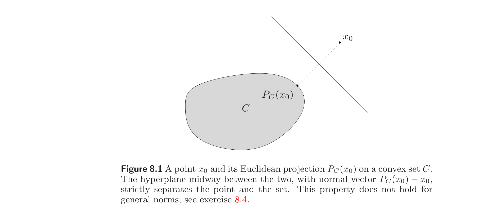
We first express (8.2) as $$ \begin{array}{ll} \text{minimize} & \|y\| \\ \text{subject to} & f_i(x) \le 0, \quad i = 1, \ldots, m \\ & Ax = b \\ & x_0 - x = y \end{array} $$ with variables $x$ and $y$. The Lagrangian of this problem is $$ L(x, y, \lambda, \mu, \nu) = \|y\| + \sum_{i=1}^{m} \lambda_i f_i(x) + \nu^T(Ax - b) + \mu^T(x_0 - x - y) $$ and the dual function is $$ g(\lambda, \mu, \nu) = \left\{\begin{array}{ll} \inf_x \left(\sum_{i=1}^{m} \lambda_i f_i(x) + \nu^T(Ax - b) + \mu^T(x_0 - x)\right) & \|\mu\|_* \le 1 \\ -\infty & \text{otherwise}, \end{array}\right. $$ so we obtain the dual problem $$ \begin{array}{ll} \text{maximize} & \mu^T x_0 + \inf_x \left(\sum_{i=1}^{m} \lambda_i f_i(x) + \nu^T(Ax - b) - \mu^T x\right) \\ \text{subject to} & \lambda \succeq 0 \\ & \|\mu\|_* \le 1, \end{array} $$ with variables $\lambda, \mu, \nu$. We can interpret the dual problem as follows. Suppose $\lambda, \mu, \nu$ are dual feasible with a positive dual objective value, i.e., $\lambda \succeq 0$, $\|\mu\|_* \le 1$, and $$ \mu^T x_0 - \mu^T x + \sum_{i=1}^{m} \lambda_i f_i(x) + \nu^T(Ax - b) > 0 $$ for all $x$. This implies that $\mu^T x_0 > \mu^T x$ for $x \in C$, and therefore $\mu$ defines a strictly separating hyperplane. In particular, suppose (8.2) is strictly feasible, so strong duality holds. If $x_0 \notin C$, the optimal value is positive, and any dual optimal solution defines a strictly separating hyperplane.
我们先将 (8.2) 表为 $$ \begin{array}{ll} \text{minimize} & \|y\| \\ \text{subject to} & f_i(x) \le 0, \quad i = 1, \ldots, m \\ & Ax = b \\ & x_0 - x = y \end{array} $$ （变量为 $x$ 和 $y$）。该问题的 Lagrange 函数为 $$ L(x, y, \lambda, \mu, \nu) = \|y\| + \sum_{i=1}^{m} \lambda_i f_i(x) + \nu^T(Ax - b) + \mu^T(x_0 - x - y) $$ 对偶函数为 $$ g(\lambda, \mu, \nu) = \left\{\begin{array}{ll} \inf_x \left(\sum_{i=1}^{m} \lambda_i f_i(x) + \nu^T(Ax - b) + \mu^T(x_0 - x)\right) & \|\mu\|_* \le 1 \\ -\infty & \text{否则}, \end{array}\right. $$ 由此得对偶问题 $$ \begin{array}{ll} \text{maximize} & \mu^T x_0 + \inf_x \left(\sum_{i=1}^{m} \lambda_i f_i(x) + \nu^T(Ax - b) - \mu^T x\right) \\ \text{subject to} & \lambda \succeq 0 \\ & \|\mu\|_* \le 1, \end{array} $$ 变量为 $\lambda, \mu, \nu$。可如下解释对偶问题：设 $\lambda, \mu, \nu$ 对偶可行且对偶目标值为正，即 $\lambda \succeq 0$，$\|\mu\|_* \le 1$，且对所有 $x$ $$ \mu^T x_0 - \mu^T x + \sum_{i=1}^{m} \lambda_i f_i(x) + \nu^T(Ax - b) > 0 $$ 此式蕴含 $x \in C$ 时 $\mu^T x_0 > \mu^T x$，故 $\mu$ 定义一个严格分离超平面。特别地，设 (8.2) 严格可行，则强对偶成立。若 $x_0 \notin C$，最优值为正，任一对偶最优解都定义一个严格分离超平面。
Note that this construction of a separating hyperplane, via duality, works for any norm. In contrast, the simple construction described above only works for the Euclidean norm.
注意这种通过构造超平面进行分离的方法对任意范数都成立。相比之下，前述简单构造仅对 Euclid 范数有效。
Separating a point from a polyhedron. The dual problem of $$ \begin{array}{ll} \text{minimize} & \|y\| \\ \text{subject to} & Ax \preceq b \\ & x_0 - x = y \end{array} $$ is $$ \begin{array}{ll} \text{maximize} & \mu^T x_0 - b^T \lambda \\ \text{subject to} & A^T \lambda = \mu \\ & \|\mu\|_* \le 1 \\ & \lambda \succeq 0 \end{array} $$ which can be further simplified as $$ \begin{array}{ll} \text{maximize} & (Ax_0 - b)^T \lambda \\ \text{subject to} & \|A^T \lambda\|_* \le 1 \\ & \lambda \succeq 0. \end{array} $$ It is easily verified that if the dual objective is positive, then $A^T \lambda$ is the normal vector to a separating hyperplane: If $Ax \preceq b$, then $$ (A^T \lambda)^T x = \lambda^T(Ax) \le \lambda^T b < \lambda^T A x_0, $$ so $\mu = A^T \lambda$ defines a separating hyperplane.
将点与多面体分离。 问题 $$ \begin{array}{ll} \text{minimize} & \|y\| \\ \text{subject to} & Ax \preceq b \\ & x_0 - x = y \end{array} $$ 的对偶为 $$ \begin{array}{ll} \text{maximize} & \mu^T x_0 - b^T \lambda \\ \text{subject to} & A^T \lambda = \mu \\ & \|\mu\|_* \le 1 \\ & \lambda \succeq 0 \end{array} $$ 进一步化简为 $$ \begin{array}{ll} \text{maximize} & (Ax_0 - b)^T \lambda \\ \text{subject to} & \|A^T \lambda\|_* \le 1 \\ & \lambda \succeq 0. \end{array} $$ 易验：若对偶目标值为正，则 $A^T \lambda$ 为某分离超平面的法向量：若 $Ax \preceq b$，则 $$ (A^T \lambda)^T x = \lambda^T(Ax) \le \lambda^T b < \lambda^T A x_0, $$ 故 $\mu = A^T \lambda$ 定义一个分离超平面。
8.1.3 Projection and separation via indicator and support functions
8.1.3 通过示性函数与支撑函数投影和分离
The ideas described above in §8.1.1 and §8.1.2 can be expressed in a compact form in terms of the indicator function $I_C$ and the support function $S_C$ of the set $C$, defined as $$ S_C(x) = \sup_{y \in C} x^T y, \qquad I_C(x) = \left\{\begin{array}{ll} 0 & x \in C \\ +\infty & x \notin C. \end{array}\right. $$ The problem of projecting $x_0$ on a closed convex set $C$ can be expressed compactly as $$ \begin{array}{ll} \text{minimize} & \|x - x_0\| \\ \text{subject to} & I_C(x) \le 0, \end{array} $$ or, equivalently, as $$ \begin{array}{ll} \text{minimize} & \|y\| \\ \text{subject to} & I_C(x) \le 0 \\ & x_0 - x = y \end{array} $$ where the variables are $x$ and $y$. The dual function of this problem is $$ \begin{array}{rcl} g(z, \lambda) & = & \inf_{x,y} \left(\|y\| + \lambda I_C(x) + z^T(x_0 - x - y)\right) \\[4pt] & = & \left\{\begin{array}{ll} z^T x_0 + \inf_x \left(-z^T x + I_C(x)\right) & \|z\|_* \le 1, \; \lambda \ge 0 \\ -\infty & \text{otherwise} \end{array}\right. \\[4pt] & = & \left\{\begin{array}{ll} z^T x_0 - S_C(z) & \|z\|_* \le 1, \; \lambda \ge 0 \\ -\infty & \text{otherwise} \end{array}\right. \end{array} $$ so we obtain the dual problem $$ \begin{array}{ll} \text{maximize} & z^T x_0 - S_C(z) \\ \text{subject to} & \|z\|_* \le 1. \end{array} $$ If $z$ is dual optimal with a positive objective value, then $z^T x_0 > z^T x$ for all $x \in C$, i.e., $z$ defines a separating hyperplane.
上述 §8.1.1 与 §8.1.2 的思想可用集合 $C$ 的示性函数 $I_C$ 与支撑函数 $S_C$ 紧凑地表示，二者定义为 $$ S_C(x) = \sup_{y \in C} x^T y, \qquad I_C(x) = \left\{\begin{array}{ll} 0 & x \in C \\ +\infty & x \notin C. \end{array}\right. $$ 将 $x_0$ 投影到闭凸集 $C$ 的问题可紧凑地表为 $$ \begin{array}{ll} \text{minimize} & \|x - x_0\| \\ \text{subject to} & I_C(x) \le 0, \end{array} $$ 或等价地表为 $$ \begin{array}{ll} \text{minimize} & \|y\| \\ \text{subject to} & I_C(x) \le 0 \\ & x_0 - x = y \end{array} $$ 变量为 $x$ 和 $y$。该问题的对偶函数为 $$ \begin{array}{rcl} g(z, \lambda) & = & \inf_{x,y} \left(\|y\| + \lambda I_C(x) + z^T(x_0 - x - y)\right) \\[4pt] & = & \left\{\begin{array}{ll} z^T x_0 + \inf_x \left(-z^T x + I_C(x)\right) & \|z\|_* \le 1, \; \lambda \ge 0 \\ -\infty & \text{否则} \end{array}\right. \\[4pt] & = & \left\{\begin{array}{ll} z^T x_0 - S_C(z) & \|z\|_* \le 1, \; \lambda \ge 0 \\ -\infty & \text{否则} \end{array}\right. \end{array} $$ 由此得对偶问题 $$ \begin{array}{ll} \text{maximize} & z^T x_0 - S_C(z) \\ \text{subject to} & \|z\|_* \le 1. \end{array} $$ 若 $z$ 对偶最优且目标值为正，则对所有 $x \in C$ 有 $z^T x_0 > z^T x$，即 $z$ 定义一个分离超平面。
8.2 Distance between sets
8.2 集合间距离
The distance between two sets $C$ and $D$, in a norm $\|\cdot\|$, is defined as $$ \mathbf{dist}(C, D) = \inf\{\|x - y\| \mid x \in C, y \in D\}. $$ The two sets $C$ and $D$ do not intersect if $\mathbf{dist}(C, D) > 0$. They intersect if $\mathbf{dist}(C, D) = 0$ and the infimum in the definition is attained (which is the case, for example, if the sets are closed and one of the sets is bounded).
在范数 $\|\cdot\|$ 下，两集合 $C$ 与 $D$ 之间的距离定义为 $$ \mathbf{dist}(C, D) = \inf\{\|x - y\| \mid x \in C, y \in D\}. $$ 若 $\mathbf{dist}(C, D) > 0$，则 $C$ 与 $D$ 不相交。若 $\mathbf{dist}(C, D) = 0$ 且定义中的下确界可达（例如当两集合均为闭且其中之一有界时），则二者相交。
The distance between sets can be expressed in terms of the distance between a point and a set, $$ \mathbf{dist}(C, D) = \mathbf{dist}(0, D - C), $$ so the results of the previous section can be applied. In this section, however, we derive results specifically for problems involving distance between sets. This allows us to exploit the structure of the set $C - D$, and makes the interpretation easier.
集合间距离可用点与集合间的距离表示为 $$ \mathbf{dist}(C, D) = \mathbf{dist}(0, D - C), $$ 故上一节的结果可应用。但本节将专门针对集合间距离的问题推导结果。这样可以利用 $C - D$ 的结构，并使解释更清晰。
8.2.1 Computing the distance between convex sets
8.2.1 凸集间距离的计算
Suppose $C$ and $D$ are described by two sets of convex inequalities $$ C = \{x \mid f_i(x) \le 0, i = 1, \ldots, m\}, \qquad D = \{x \mid g_i(x) \le 0, i = 1, \ldots, p\}. $$ (We can include linear equalities, but exclude them here for simplicity.) We can find $\mathbf{dist}(C, D)$ by solving the convex optimization problem $$ \begin{array}{ll} \text{minimize} & \|x - y\| \\ \text{subject to} & f_i(x) \le 0, \quad i = 1, \ldots, m \\ & g_i(y) \le 0, \quad i = 1, \ldots, p. \end{array} \tag{8.3} $$
设 $C$ 和 $D$ 分别由两组凸不等式描述 $$ C = \{x \mid f_i(x) \le 0, i = 1, \ldots, m\}, \qquad D = \{x \mid g_i(x) \le 0, i = 1, \ldots, p\}. $$ （可以包含线性等式，但此处为简单计略去。）通过求解凸优化问题 $$ \begin{array}{ll} \text{minimize} & \|x - y\| \\ \text{subject to} & f_i(x) \le 0, \quad i = 1, \ldots, m \\ & g_i(y) \le 0, \quad i = 1, \ldots, p. \end{array} \tag{8.3} $$ 即可求 $\mathbf{dist}(C, D)$。
Euclidean distance between polyhedra. Let $C$ and $D$ be two polyhedra described by the sets of linear inequalities $A_1 x \preceq b_1$ and $A_2 x \preceq b_2$, respectively. The distance between $C$ and $D$ is the distance between the closest pair of points, one in $C$ and the other in $D$, as illustrated in figure 8.2. The distance between them is the optimal value of the problem $$ \begin{array}{ll} \text{minimize} & \|x - y\|_2 \\ \text{subject to} & A_1 x \preceq b_1 \\ & A_2 y \preceq b_2. \end{array} \tag{8.4} $$ We can square the objective to obtain an equivalent QP.
多面体间的 Euclid 距离。 设 $C$ 与 $D$ 为分别由线性不等式组 $A_1 x \preceq b_1$ 与 $A_2 x \preceq b_2$ 描述的两个多面体。$C$ 与 $D$ 的距离是分属两集合的最近点对之间的距离，如图 8.2 所示。该距离是问题 $$ \begin{array}{ll} \text{minimize} & \|x - y\|_2 \\ \text{subject to} & A_1 x \preceq b_1 \\ & A_2 y \preceq b_2. \end{array} \tag{8.4} $$ 的最优值。可将目标平方得到等价的 QP。
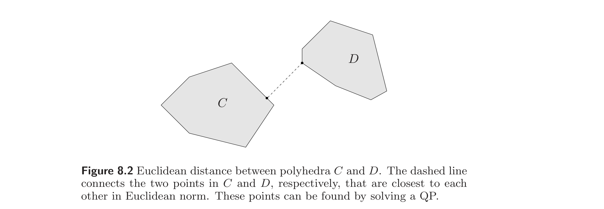
8.2.2 Separating convex sets
8.2.2 凸集的分离
The dual of the problem (8.3) of finding the distance between two convex sets has an interesting geometric interpretation in terms of separating hyperplanes between the sets. We first express the problem in the following equivalent form: $$ \begin{array}{ll} \text{minimize} & \|w\| \\ \text{subject to} & f_i(x) \le 0, \quad i = 1, \ldots, m \\ & g_i(y) \le 0, \quad i = 1, \ldots, p \\ & x - y = w. \end{array} \tag{8.5} $$ The dual function is $$ g(\lambda, z, \mu) = \inf_{x,y,w} \left(\|w\| + \sum_{i=1}^{m} \lambda_i f_i(x) + \sum_{i=1}^{p} \mu_i g_i(y) + z^T(x - y - w)\right) $$ $$ = \left\{\begin{array}{ll} \inf_x \left(\sum_{i=1}^{m} \lambda_i f_i(x) + z^T x\right) + \inf_y \left(\sum_{i=1}^{p} \mu_i g_i(y) - z^T y\right) & \|z\|_* \le 1 \\ -\infty & \text{otherwise}, \end{array}\right. $$ which results in the dual problem $$ \begin{array}{ll} \text{maximize} & \inf_x \left(\sum_{i=1}^{m} \lambda_i f_i(x) + z^T x\right) + \inf_y \left(\sum_{i=1}^{p} \mu_i g_i(y) - z^T y\right) \\ \text{subject to} & \|z\|_* \le 1 \\ & \lambda \succeq 0, \quad \mu \succeq 0. \end{array} \tag{8.6} $$
求两凸集间距离的问题 (8.3) 的对偶有关于两集合间分离超平面的有趣几何解释。我们先将问题写成如下等价形式： $$ \begin{array}{ll} \text{minimize} & \|w\| \\ \text{subject to} & f_i(x) \le 0, \quad i = 1, \ldots, m \\ & g_i(y) \le 0, \quad i = 1, \ldots, p \\ & x - y = w. \end{array} \tag{8.5} $$ 对偶函数为 $$ g(\lambda, z, \mu) = \inf_{x,y,w} \left(\|w\| + \sum_{i=1}^{m} \lambda_i f_i(x) + \sum_{i=1}^{p} \mu_i g_i(y) + z^T(x - y - w)\right) $$ $$ = \left\{\begin{array}{ll} \inf_x \left(\sum_{i=1}^{m} \lambda_i f_i(x) + z^T x\right) + \inf_y \left(\sum_{i=1}^{p} \mu_i g_i(y) - z^T y\right) & \|z\|_* \le 1 \\ -\infty & \text{否则}, \end{array}\right. $$ 由此得对偶问题 $$ \begin{array}{ll} \text{maximize} & \inf_x \left(\sum_{i=1}^{m} \lambda_i f_i(x) + z^T x\right) + \inf_y \left(\sum_{i=1}^{p} \mu_i g_i(y) - z^T y\right) \\ \text{subject to} & \|z\|_* \le 1 \\ & \lambda \succeq 0, \quad \mu \succeq 0. \end{array} \tag{8.6} $$
We can interpret this geometrically as follows. If $\lambda, \mu$ are dual feasible with a positive objective value, then $$ \sum_{i=1}^{m} \lambda_i f_i(x) + z^T x + \sum_{i=1}^{p} \mu_i g_i(y) - z^T y > 0 $$ for all $x$ and $y$. In particular, for $x \in C$ and $y \in D$, we have $z^T x - z^T y > 0$, so we see that $z$ defines a hyperplane that strictly separates $C$ and $D$.
可如下作几何解释。若 $\lambda, \mu$ 对偶可行且目标值为正，则对所有 $x$ 与 $y$ $$ \sum_{i=1}^{m} \lambda_i f_i(x) + z^T x + \sum_{i=1}^{p} \mu_i g_i(y) - z^T y > 0 $$ 特别地，对 $x \in C$ 与 $y \in D$，有 $z^T x - z^T y > 0$，故 $z$ 定义一个严格分离 $C$ 与 $D$ 的超平面。
Therefore, if strong duality holds between the two problems (8.5) and (8.6) (which is the case when (8.5) is strictly feasible), we can make the following conclusion. If the distance between the two sets is positive, then they can be strictly separated by a hyperplane.
因此，若两问题 (8.5) 与 (8.6) 之间强对偶成立（当 (8.5) 严格可行时即如此），则可得如下结论：若两集合间距离为正，则它们可被一超平面严格分离。
Separating polyhedra. Applying these duality results to sets defined by linear inequalities $A_1 x \preceq b_1$ and $A_2 x \preceq b_2$, we find the dual problem $$ \begin{array}{ll} \text{maximize} & -b_1^T \lambda - b_2^T \mu \\ \text{subject to} & A_1^T \lambda + z = 0 \\ & A_2^T \mu - z = 0 \\ & \|z\|_* \le 1 \\ & \lambda \succeq 0, \quad \mu \succeq 0. \end{array} $$ If $\lambda, \mu$, and $z$ are dual feasible, then for all $x \in C$, $y \in D$, $$ z^T x = -\lambda^T A_1 x \ge -\lambda^T b_1, \qquad z^T y = \mu^T A_2 x \le \mu^T b_2, $$ and, if the dual objective value is positive, $$ z^T x - z^T y \ge -\lambda^T b_1 - \mu^T b_2 > 0, $$ i.e., $z$ defines a separating hyperplane.
多面体的分离。 将这些对偶结果应用于由线性不等式 $A_1 x \preceq b_1$ 与 $A_2 x \preceq b_2$ 定义的集合，得对偶问题 $$ \begin{array}{ll} \text{maximize} & -b_1^T \lambda - b_2^T \mu \\ \text{subject to} & A_1^T \lambda + z = 0 \\ & A_2^T \mu - z = 0 \\ & \|z\|_* \le 1 \\ & \lambda \succeq 0, \quad \mu \succeq 0. \end{array} $$ 若 $\lambda, \mu, z$ 对偶可行，则对所有 $x \in C$，$y \in D$， $$ z^T x = -\lambda^T A_1 x \ge -\lambda^T b_1, \qquad z^T y = \mu^T A_2 x \le \mu^T b_2, $$ 且若对偶目标值为正， $$ z^T x - z^T y \ge -\lambda^T b_1 - \mu^T b_2 > 0, $$ 即 $z$ 定义一个分离超平面。
8.2.3 Distance and separation via indicator and support functions
8.2.3 通过示性函数与支撑函数求距离和分离
The ideas described above in §8.2.1 and §8.2.2 can be expressed in a compact form using indicator and support functions. The problem of finding the distance between two convex sets can be posed as the convex problem $$ \begin{array}{ll} \text{minimize} & \|x - y\| \\ \text{subject to} & I_C(x) \le 0 \\ & I_D(y) \le 0, \end{array} $$ which is equivalent to $$ \begin{array}{ll} \text{minimize} & \|w\| \\ \text{subject to} & I_C(x) \le 0 \\ & I_D(y) \le 0 \\ & x - y = w. \end{array} $$ The dual of this problem is $$ \begin{array}{ll} \text{maximize} & -S_C(-z) - S_D(z) \\ \text{subject to} & \|z\|_* \le 1. \end{array} $$ If $z$ is dual feasible with a positive objective value, then $S_D(z) < -S_C(-z)$, i.e., $$ \sup_{x \in D} z^T x < \inf_{x \in C} z^T x. $$ In other words, $z$ defines a hyperplane that strictly separates $C$ and $D$.
上述 §8.2.1 与 §8.2.2 的思想可用示性函数与支撑函数紧凑地表示。求两凸集间距离的问题可表为凸问题 $$ \begin{array}{ll} \text{minimize} & \|x - y\| \\ \text{subject to} & I_C(x) \le 0 \\ & I_D(y) \le 0, \end{array} $$ 等价于 $$ \begin{array}{ll} \text{minimize} & \|w\| \\ \text{subject to} & I_C(x) \le 0 \\ & I_D(y) \le 0 \\ & x - y = w. \end{array} $$ 其对偶为 $$ \begin{array}{ll} \text{maximize} & -S_C(-z) - S_D(z) \\ \text{subject to} & \|z\|_* \le 1. \end{array} $$ 若 $z$ 对偶可行且目标值为正，则 $S_D(z) < -S_C(-z)$，即 $$ \sup_{x \in D} z^T x < \inf_{x \in C} z^T x. $$ 换言之，$z$ 定义一个严格分离 $C$ 与 $D$ 的超平面。
8.3 Euclidean distance and angle problems
8.3 Euclid 距离与角度问题
Suppose $a_1, \ldots, a_n$ is a set of vectors in $\mathbb{R}^n$, which we assume (for now) have known Euclidean lengths $$ l_1 = \|a_1\|_2, \; \ldots, \; l_n = \|a_n\|_2. $$ We will refer to the set of vectors as a configuration, or, when they are independent, a basis. In this section we consider optimization problems involving various geometric properties of the configuration, such as the Euclidean distances between pairs of the vectors, the angles between pairs of the vectors, and various geometric measures of the conditioning of the basis.
设 $a_1, \ldots, a_n$ 为 $\mathbb{R}^n$ 中一组向量，我们（暂设）已知其 Euclid 长度 $$ l_1 = \|a_1\|_2, \; \ldots, \; l_n = \|a_n\|_2. $$ 我们称该组向量为一个构型（configuration），当它们线性无关时称为基。本节考虑涉及该构型若干几何性质的优化问题，如各对向量间的 Euclid 距离、各对向量间的夹角，以及基条件数的若干几何度量。
8.3.1 Gram matrix and realizability
8.3.1 Gram 矩阵与可实现性
The lengths, distances, and angles can be expressed in terms of the Gram matrix associated with the vectors $a_1, \ldots, a_n$, given by $$ G = A^T A, \qquad A = [\, a_1 \; \cdots \; a_n \,], $$ so that $G_{ij} = a_i^T a_j$. The diagonal entries of $G$ are given by $$ G_{ii} = l_i^2, \quad i = 1, \ldots, n, $$ which (for now) we assume are known and fixed. The distance $d_{ij}$ between $a_i$ and $a_j$ is $$ d_{ij} = \|a_i - a_j\|_2 = (l_i^2 + l_j^2 - 2a_i^T a_j)^{1/2} = (l_i^2 + l_j^2 - 2G_{ij})^{1/2}. $$
长度、距离和角度可用与向量 $a_1, \ldots, a_n$ 关联的 Gram 矩阵表示 $$ G = A^T A, \qquad A = [\, a_1 \; \cdots \; a_n \,], $$ 即 $G_{ij} = a_i^T a_j$。$G$ 的对角元为 $$ G_{ii} = l_i^2, \quad i = 1, \ldots, n, $$ （暂设已知且固定）。$a_i$ 与 $a_j$ 之间的距离 $d_{ij}$ 为 $$ d_{ij} = \|a_i - a_j\|_2 = (l_i^2 + l_j^2 - 2a_i^T a_j)^{1/2} = (l_i^2 + l_j^2 - 2G_{ij})^{1/2}. $$
Conversely, we can express $G_{ij}$ in terms of $d_{ij}$ as $$ G_{ij} = \frac{l_i^2 + l_j^2 - d_{ij}^2}{2}, $$ which we note, for future reference, is an affine function of $d_{ij}^2$.
反之，可用 $d_{ij}$ 表示 $G_{ij}$： $$ G_{ij} = \frac{l_i^2 + l_j^2 - d_{ij}^2}{2}, $$ 留待后用，注意它是 $d_{ij}^2$ 的仿射函数。
The correlation coefficient $\rho_{ij}$ between (nonzero) $a_i$ and $a_j$ is given by $$ \rho_{ij} = \frac{a_i^T a_j}{\|a_i\|_2 \|a_j\|_2} = \frac{G_{ij}}{l_i l_j}, $$ so that $G_{ij} = l_i l_j \rho_{ij}$ is a linear function of $\rho_{ij}$. The angle $\theta_{ij}$ between (nonzero) $a_i$ and $a_j$ is given by $$ \theta_{ij} = \cos^{-1} \rho_{ij} = \cos^{-1}(G_{ij}/(l_i l_j)), $$ where we take $\cos^{-1} \rho \in [0, \pi]$. Thus, we have $G_{ij} = l_i l_j \cos \theta_{ij}$.
（非零）$a_i$ 与 $a_j$ 之间的相关系数 $\rho_{ij}$ 为 $$ \rho_{ij} = \frac{a_i^T a_j}{\|a_i\|_2 \|a_j\|_2} = \frac{G_{ij}}{l_i l_j}, $$ 故 $G_{ij} = l_i l_j \rho_{ij}$ 是 $\rho_{ij}$ 的线性函数。（非零）$a_i$ 与 $a_j$ 之间的夹角 $\theta_{ij}$ 为 $$ \theta_{ij} = \cos^{-1} \rho_{ij} = \cos^{-1}(G_{ij}/(l_i l_j)), $$ 其中取 $\cos^{-1} \rho \in [0, \pi]$。于是 $G_{ij} = l_i l_j \cos \theta_{ij}$。
The lengths, distances, and angles are invariant under orthogonal transformations: If $Q \in \mathbb{R}^{n\times n}$ is orthogonal, then the set of vectors $Qa_1, \ldots, Qa_n$ has the same Gram matrix, and therefore the same lengths, distances, and angles.
长度、距离和角度在正交变换下不变：若 $Q \in \mathbb{R}^{n\times n}$ 正交，则向量组 $Qa_1, \ldots, Qa_n$ 有相同的 Gram 矩阵，从而有相同的长度、距离和角度。
Realizability. The Gram matrix $G = A^T A$ is, of course, symmetric and positive semidefinite. The converse is a basic result of linear algebra: A matrix $G \in \mathbf{S}^n$ is the Gram matrix of a set of vectors $a_1, \ldots, a_n$ if and only if $G \succeq 0$. When $G \succeq 0$, we can construct a configuration with Gram matrix $G$ by finding a matrix $A$ with $A^T A = G$. One solution of this equation is the symmetric squareroot $A = G^{1/2}$. When $G \succ 0$, we can find a solution via the Cholesky factorization of $G$: If $LL^T = G$, then we can take $A = L^T$. Moreover, we can construct all configurations with the given Gram matrix $G$, given any one solution $A$, by orthogonal transformation: If $\tilde{A}^T \tilde{A} = G$ is any solution, then $\tilde{A} = QA$ for some orthogonal matrix $Q$.
可实现性。 Gram 矩阵 $G = A^T A$ 当然是对称半正定的。其逆是线性代数的一个基本结果：矩阵 $G \in \mathbf{S}^n$ 是某向量组 $a_1, \ldots, a_n$ 的 Gram 矩阵当且仅当 $G \succeq 0$。当 $G \succeq 0$ 时，找一个满足 $A^T A = G$ 的矩阵 $A$ 即可构造以 $G$ 为 Gram 矩阵的构型。该方程的一个解是对称平方根 $A = G^{1/2}$。当 $G \succ 0$ 时，可通过 $G$ 的 Cholesky 分解求一个解：若 $LL^T = G$，则取 $A = L^T$。此外，给定任一解 $A$，可通过正交变换构造具有给定 Gram 矩阵 $G$ 的所有构型：若 $\tilde{A}^T \tilde{A} = G$ 为任一解，则 $\tilde{A} = QA$ 对某正交矩阵 $Q$ 成立。
Thus, a set of lengths, distances, and angles (or correlation coefficients) is realizable, i.e., those of some configuration, if and only if the associated Gram matrix $G$ is positive semidefinite, and has diagonal elements $l_1^2, \ldots, l_n^2$.
因此，一组长度、距离和角度（或相关系数）是可实现的，即属于某构型，当且仅当关联的 Gram 矩阵 $G$ 半正定且对角元为 $l_1^2, \ldots, l_n^2$。
We can use this fact to express several geometric problems as convex optimization problems, with $G \in \mathbf{S}^n$ as the optimization variable. Realizability imposes the constraint $G \succeq 0$ and $G_{ii} = l_i^2$, $i = 1, \ldots, n$; we list below several other convex constraints and objectives.
利用此事实可将若干几何问题表为以 $G \in \mathbf{S}^n$ 为优化变量的凸优化问题。可实现性给出约束 $G \succeq 0$ 与 $G_{ii} = l_i^2$（$i = 1, \ldots, n$）；下面列出若干其他凸约束与目标。
Angle and distance constraints. We can fix an angle to have a certain value, $\theta_{ij} = \alpha$, via the linear equality constraint $$ G_{ij} = l_i l_j \cos \alpha. $$ More generally, we can impose a lower and upper bound on an angle, $\alpha \le \theta_{ij} \le \beta$, by the constraint $$ l_i l_j \cos \alpha \ge G_{ij} \ge l_i l_j \cos \beta, $$ which is a pair of linear inequalities on $G$. (Here we use the fact that $\cos^{-1}$ is monotone decreasing.) We can maximize or minimize a particular angle $\theta_{ij}$, by minimizing or maximizing $G_{ij}$ (again using monotonicity of $\cos^{-1}$).
角度与距离约束。 通过线性等式约束 $$ G_{ij} = l_i l_j \cos \alpha $$ 可将角度固定为某值 $\theta_{ij} = \alpha$。更一般地，可用约束 $$ l_i l_j \cos \alpha \ge G_{ij} \ge l_i l_j \cos \beta $$ 给角度加上、下界 $\alpha \le \theta_{ij} \le \beta$，这是关于 $G$ 的一对线性不等式。（此处利用了 $\cos^{-1}$ 单调递减。）极小化或极大化 $G_{ij}$（再次利用 $\cos^{-1}$ 的单调性）即可极小化或极大化某特定角度 $\theta_{ij}$。
In a similar way we can impose constraints on the distances. To require that $d_{ij}$ lies in an interval, we use $$ \begin{array}{rcl} d_{\min} \le d_{ij} \le d_{\max} & \Longleftrightarrow & d_{\min}^2 \le d_{ij}^2 \le d_{\max}^2 \\ & \Longleftrightarrow & d_{\min}^2 \le l_i^2 + l_j^2 - 2G_{ij} \le d_{\max}^2, \end{array} $$ which is a pair of linear inequalities on $G$. We can minimize or maximize a distance, by minimizing or maximizing its square, which is an affine function of $G$.
类似地可对距离施加约束。要求 $d_{ij}$ 落在区间内，即 $$ \begin{array}{rcl} d_{\min} \le d_{ij} \le d_{\max} & \Longleftrightarrow & d_{\min}^2 \le d_{ij}^2 \le d_{\max}^2 \\ & \Longleftrightarrow & d_{\min}^2 \le l_i^2 + l_j^2 - 2G_{ij} \le d_{\max}^2, \end{array} $$ 这是关于 $G$ 的一对线性不等式。极小化或极大化距离的平方（$G$ 的仿射函数）即可极小化或极大化距离。
As a simple example, suppose we are given ranges (i.e., an interval of possible values) for some of the angles and some of the distances. We can then find the minimum and maximum possible value of some other angle, or some other distance, over all configurations, by solving two SDPs. We can reconstruct the two extreme configurations by factoring the resulting optimal Gram matrices.
举一简单例子：设已知部分角度和部分距离的取值范围（即可能值区间）。通过求解两个 SDP，即可在所有构型上求出某其他角度或某其他距离的最小和最大可能值。分解所得的最优 Gram 矩阵即可重建两个极端构型。
Singular value and condition number constraints. The singular values of $A$, $\sigma_1 \ge \cdots \ge \sigma_n$, are the squareroots of the eigenvalues $\lambda_1 \ge \cdots \ge \lambda_n$ of $G$. Therefore $\sigma_1^2$ is a convex function of $G$, and $\sigma_n^2$ is a concave function of $G$. Thus we can impose an upper bound on the maximum singular value of $A$, or minimize it; we can impose a lower bound on the minimum singular value, or maximize it. The condition number of $A$, $\sigma_1/\sigma_n$, is a quasiconvex function of $G$, so we can impose a maximum allowable value, or minimize it over all configurations that satisfy the other geometric constraints, by quasiconvex optimization.
奇异值与条件数约束。 $A$ 的奇异值 $\sigma_1 \ge \cdots \ge \sigma_n$ 是 $G$ 的特征值 $\lambda_1 \ge \cdots \ge \lambda_n$ 的平方根。故 $\sigma_1^2$ 是 $G$ 的凸函数，$\sigma_n^2$ 是 $G$ 的凹函数。于是可对 $A$ 的最大奇异值加上界或极小化之；可对最小奇异值加下界或极大化之。$A$ 的条件数 $\sigma_1/\sigma_n$ 是 $G$ 的拟凸函数，故可通过拟凸优化设定其最大允许值，或在满足其他几何约束的所有构型上极小化之。
Roughly speaking, the constraints we can impose as convex constraints on $G$ are those that require $a_1, \ldots, a_n$ to be a well conditioned basis.
大致而言，可作为 $G$ 上凸约束施加的约束是那些要求 $a_1, \ldots, a_n$ 成为良态基的约束。
Dual basis. When $G \succ 0$, $a_1, \ldots, a_n$ form a basis for $\mathbb{R}^n$. The associated dual basis is $b_1, \ldots, b_n$, where $$ b_i^T a_j = \left\{\begin{array}{ll} 1 & i = j \\ 0 & i \ne j. \end{array}\right. $$ The dual basis vectors $b_1, \ldots, b_n$ are simply the rows of the matrix $A^{-1}$. As a result, the Gram matrix associated with the dual basis is $G^{-1}$.
对偶基。 当 $G \succ 0$ 时，$a_1, \ldots, a_n$ 构成 $\mathbb{R}^n$ 的一组基。关联的对偶基为 $b_1, \ldots, b_n$，其中 $$ b_i^T a_j = \left\{\begin{array}{ll} 1 & i = j \\ 0 & i \ne j. \end{array}\right. $$ 对偶基向量 $b_1, \ldots, b_n$ 即矩阵 $A^{-1}$ 的各行。因此对偶基的 Gram 矩阵为 $G^{-1}$。
We can express several geometric conditions on the dual basis as convex constraints on $G$. The (squared) lengths of the dual basis vectors, $$ \|b_i\|_2^2 = e_i^T G^{-1} e_i, $$ are convex functions of $G$, and so can be minimized. The trace of $G^{-1}$, another convex function of $G$, gives the sum of the squares of the lengths of the dual basis vectors (and is another measure of a well conditioned basis).
对偶基的若干几何条件可表为 $G$ 上的凸约束。对偶基向量的（平方）长度 $$ \|b_i\|_2^2 = e_i^T G^{-1} e_i $$ 是 $G$ 的凸函数，可被极小化。$G^{-1}$ 的迹是 $G$ 的另一凸函数，给出对偶基向量长度平方之和（是良态基的另一种度量）。
Ellipsoid and simplex volume. The volume of the ellipsoid $\{Au \mid \|u\|_2 \le 1\}$, which gives another measure of how well conditioned the basis is, is given by $$ \gamma(\det(A^T A))^{1/2} = \gamma(\det G)^{1/2}, $$ where $\gamma$ is the volume of the unit ball in $\mathbb{R}^n$. The log volume is therefore $\log \gamma + (1/2) \log \det G$, which is a concave function of $G$. We can therefore maximize the volume of the image ellipsoid, over a convex set of configurations, by maximizing $\log \det G$.
椭球与单纯形体积。 椭球 $\{Au \mid \|u\|_2 \le 1\}$ 的体积（给出基良态程度的另一种度量）为 $$ \gamma(\det(A^T A))^{1/2} = \gamma(\det G)^{1/2}, $$ 其中 $\gamma$ 为 $\mathbb{R}^n$ 中单位球的体积。故对数体积为 $\log \gamma + (1/2) \log \det G$，是 $G$ 的凹函数。于是通过极大化 $\log \det G$ 可在一凸构型集上极大化像椭球的体积。
The same holds for any set in $\mathbb{R}^n$. The volume of the image under $A$ is its volume, multiplied by the factor $(\det G)^{1/2}$. For example, consider the image under $A$ of the unit simplex $\mathbf{conv}\{0, e_1, \ldots, e_n\}$, i.e., the simplex $\mathbf{conv}\{0, a_1, \ldots, a_n\}$. The volume of this simplex is given by $\gamma(\det G)^{1/2}$, where $\gamma$ is the volume of the unit simplex in $\mathbb{R}^n$. We can maximize the volume of this simplex by maximizing $\log \det G$.
对 $\mathbb{R}^n$ 中任一集合同样成立。其在 $A$ 下的像的体积等于原体积乘以因子 $(\det G)^{1/2}$。例如，考虑单位单纯形 $\mathbf{conv}\{0, e_1, \ldots, e_n\}$ 在 $A$ 下的像，即单纯形 $\mathbf{conv}\{0, a_1, \ldots, a_n\}$。该单纯形的体积为 $\gamma(\det G)^{1/2}$，其中 $\gamma$ 为 $\mathbb{R}^n$ 中单位单纯形的体积。通过极大化 $\log \det G$ 即可极大化此单纯形的体积。
8.3.2 Problems involving angles only
8.3.2 仅涉及角度的问题
Suppose we only care about the angles (or correlation coefficients) between the vectors, and do not specify the lengths or distances between them. In this case it is intuitively clear that we can simply assume the vectors $a_i$ have length $l_i = 1$. This is easily verified: The Gram matrix has the form $G = \mathbf{diag}(l)\, C\, \mathbf{diag}(l)$, where $l$ is the vector of lengths, and $C$ is the correlation matrix, i.e., $C_{ij} = \cos \theta_{ij}$. It follows that if $G \succeq 0$ for any set of positive lengths, then $G \succeq 0$ for all sets of positive lengths, and in particular, this occurs if and only if $C \succeq 0$ (which is the same as assuming that all lengths are one).
设我们只关心向量间的角度（或相关系数），不指定长度或距离。此时直观上显然可设向量 $a_i$ 的长度 $l_i = 1$。易证：Gram 矩阵形如 $G = \mathbf{diag}(l)\, C\, \mathbf{diag}(l)$，其中 $l$ 为长度向量，$C$ 为相关矩阵，即 $C_{ij} = \cos \theta_{ij}$。于是若 $G \succeq 0$ 对某组正长度成立，则 $G \succeq 0$ 对所有正长度成立，特别地，这当且仅当 $C \succeq 0$（即等价于设所有长度为 1）。
Thus, a set of angles $\theta_{ij} \in [0, \pi]$, $i, j = 1, \ldots, n$ is realizable if and only if $C \succeq 0$, which is a linear matrix inequality in the correlation coefficients.
因此，一组角度 $\theta_{ij} \in [0, \pi]$（$i, j = 1, \ldots, n$）可实现当且仅当 $C \succeq 0$，这是关于相关系数的线性矩阵不等式。
As an example, suppose we are given lower and upper bounds on some of the angles (which is equivalent to imposing lower and upper bounds on the correlation coefficients). We can then find the minimum and maximum possible value of some other angle, over all configurations, by solving two SDPs.
例如，设已知部分角度的下、上界（等价于对相关系数施加下、上界）。通过求解两个 SDP，即可在所有构型上求出某其他角度的最小和最大可能值。
Example 8.3 Bounding correlation coefficients. We consider an example in $\mathbb{R}^4$, where we are given $$ \begin{array}{rcl} 0.6 \le \rho_{12} \le 0.9 & \quad & 0.8 \le \rho_{13} \le 0.9 \\ 0.5 \le \rho_{24} \le 0.7 & \quad & -0.8 \le \rho_{34} \le -0.4. \end{array} \tag{8.7} $$ To find the minimum and maximum possible values of $\rho_{14}$, we solve the two SDPs $$ \begin{array}{ll} \text{minimize/maximize} & \rho_{14} \\ \text{subject to} & (8.7) \end{array} $$ $$ \left[\begin{array}{cccc} 1 & \rho_{12} & \rho_{13} & \rho_{14} \\ \rho_{12} & 1 & \rho_{23} & \rho_{24} \\ \rho_{13} & \rho_{23} & 1 & \rho_{34} \\ \rho_{14} & \rho_{24} & \rho_{34} & 1 \end{array}\right] \succeq 0, $$ with variables $\rho_{12}, \rho_{13}, \rho_{14}, \rho_{23}, \rho_{24}, \rho_{34}$. The minimum and maximum values (to two significant digits) are $-0.39$ and $0.23$, with corresponding correlation matrices $$ \left[\begin{array}{rrrr} 1.00 & 0.60 & 0.87 & -0.39 \\ 0.60 & 1.00 & 0.33 & 0.50 \\ 0.87 & 0.33 & 1.00 & -0.55 \\ -0.39 & 0.50 & -0.55 & 1.00 \end{array}\right], \qquad \left[\begin{array}{rrrr} 1.00 & 0.71 & 0.80 & 0.23 \\ 0.71 & 1.00 & 0.31 & 0.59 \\ 0.80 & 0.31 & 1.00 & -0.40 \\ 0.23 & 0.59 & -0.40 & 1.00 \end{array}\right]. $$
例 8.3 相关系数的界。 考虑 $\mathbb{R}^4$ 中的一个例子，已知 $$ \begin{array}{rcl} 0.6 \le \rho_{12} \le 0.9 & \quad & 0.8 \le \rho_{13} \le 0.9 \\ 0.5 \le \rho_{24} \le 0.7 & \quad & -0.8 \le \rho_{34} \le -0.4. \end{array} \tag{8.7} $$ 为求 $\rho_{14}$ 的最小与最大可能值，求解两个 SDP $$ \begin{array}{ll} \text{minimize/maximize} & \rho_{14} \\ \text{subject to} & (8.7) \end{array} $$ $$ \left[\begin{array}{cccc} 1 & \rho_{12} & \rho_{13} & \rho_{14} \\ \rho_{12} & 1 & \rho_{23} & \rho_{24} \\ \rho_{13} & \rho_{23} & 1 & \rho_{34} \\ \rho_{14} & \rho_{24} & \rho_{34} & 1 \end{array}\right] \succeq 0, $$ 变量为 $\rho_{12}, \rho_{13}, \rho_{14}, \rho_{23}, \rho_{24}, \rho_{34}$。最小与最大值（保留两位有效数字）为 $-0.39$ 与 $0.23$，对应的相关矩阵为 $$ \left[\begin{array}{rrrr} 1.00 & 0.60 & 0.87 & -0.39 \\ 0.60 & 1.00 & 0.33 & 0.50 \\ 0.87 & 0.33 & 1.00 & -0.55 \\ -0.39 & 0.50 & -0.55 & 1.00 \end{array}\right], \qquad \left[\begin{array}{rrrr} 1.00 & 0.71 & 0.80 & 0.23 \\ 0.71 & 1.00 & 0.31 & 0.59 \\ 0.80 & 0.31 & 1.00 & -0.40 \\ 0.23 & 0.59 & -0.40 & 1.00 \end{array}\right]. $$
8.3.3 Euclidean distance problems
8.3.3 Euclid 距离问题
In a Euclidean distance problem, we are concerned only with the distances between the vectors, $d_{ij}$, and do not care about the lengths of the vectors, or about the angles between them. These distances, of course, are invariant not only under orthogonal transformations, but also translation: The configuration $\tilde{a}_1 = a_1 + b, \ldots, \tilde{a}_n = a_n + b$ has the same distances as the original configuration, for any $b \in \mathbb{R}^n$. In particular, for the choice $$ b = -(1/n)\sum_{i=1}^{n} a_i = -(1/n) A \mathbf{1}, $$ we see that $\tilde{a}_i$ have the same distances as the original configuration, and also satisfy $\sum_{i=1}^{n} \tilde{a}_i = 0$. It follows that in a Euclidean distance problem, we can assume, without any loss of generality, that the average of the vectors $a_1, \ldots, a_n$ is zero, i.e., $A\mathbf{1} = 0$.
在 Euclid 距离问题中，我们只关心向量间的距离 $d_{ij}$，不关心向量长度或它们之间的角度。这些距离当然不仅在正交变换下不变，在平移下也不变：构型 $\tilde{a}_1 = a_1 + b, \ldots, \tilde{a}_n = a_n + b$ 对任意 $b \in \mathbb{R}^n$ 都与原构型有相同距离。特别地，取 $$ b = -(1/n)\sum_{i=1}^{n} a_i = -(1/n) A \mathbf{1} $$ 时，$\tilde{a}_i$ 与原构型有相同距离，且满足 $\sum_{i=1}^{n} \tilde{a}_i = 0$。因此在 Euclid 距离问题中，不妨设向量 $a_1, \ldots, a_n$ 的均值为零，即 $A\mathbf{1} = 0$。
We can solve Euclidean distance problems by considering the lengths (which cannot occur in the objective or constraints of a Euclidean distance problem) as free variables in the optimization problem. Here we rely on the fact that there is a configuration with distances $d_{ij} \ge 0$ if and only if there are lengths $l_1, \ldots, l_n$ for which $G \succeq 0$, where $G_{ij} = (l_i^2 + l_j^2 - d_{ij}^2)/2$.
求解 Euclid 距离问题时，可把长度（不会出现在 Euclid 距离问题的目标或约束中）作为优化问题中的自由变量。此处依赖如下事实：存在以 $d_{ij} \ge 0$ 为距离的构型，当且仅当存在长度 $l_1, \ldots, l_n$ 使 $G \succeq 0$，其中 $G_{ij} = (l_i^2 + l_j^2 - d_{ij}^2)/2$。
We define $z \in \mathbb{R}^n$ as $z_i = l_i^2$, and $D \in \mathbf{S}^n$ by $D_{ij} = d_{ij}^2$ (with, of course, $D_{ii} = 0$). The condition that $G \succeq 0$ for some choice of lengths can be expressed as $$ G = (z\mathbf{1}^T + \mathbf{1} z^T - D)/2 \succeq 0 \quad \text{for some } z \succeq 0, \tag{8.8} $$ which is an LMI in $D$ and $z$.
定义 $z \in \mathbb{R}^n$，$z_i = l_i^2$；并定义 $D \in \mathbf{S}^n$，$D_{ij} = d_{ij}^2$（当然 $D_{ii} = 0$）。对某组长度 $G \succeq 0$ 这一条件可表为 $$ G = (z\mathbf{1}^T + \mathbf{1} z^T - D)/2 \succeq 0 \quad \text{对某 } z \succeq 0, \tag{8.8} $$ 这是关于 $D$ 与 $z$ 的 LMI。
A matrix $D \in \mathbf{S}^n$, with nonnegative elements, zero diagonal, and which satisfies (8.8), is called a Euclidean distance matrix. A matrix is a Euclidean distance matrix if and only if its entries are the squares of the Euclidean distances between the vectors of some configuration. (Given a Euclidean distance matrix $D$ and the associated length squared vector $z$, we can reconstruct one, or all, configurations with the given pairwise distances using the method described above.)
元素非负、对角为零且满足 (8.8) 的矩阵 $D \in \mathbf{S}^n$ 称为Euclid 距离矩阵。一个矩阵是 Euclid 距离矩阵当且仅当其元素是某构型各向量间 Euclid 距离的平方。（给定 Euclid 距离矩阵 $D$ 及关联的长度平方向量 $z$，可用上述方法重建具有给定两两距离的一个或所有构型。）
The condition (8.8) turns out to be equivalent to the simpler condition that $D$ is negative semidefinite on $\mathbf{1}^\perp$, i.e., $$ \begin{array}{rcl} (8.8) & \Longleftrightarrow & u^T D u \le 0 \text{ for all } u \text{ with } \mathbf{1}^T u = 0 \\ & \Longleftrightarrow & (I - (1/n)\mathbf{1}\mathbf{1}^T) D (I - (1/n)\mathbf{1}\mathbf{1}^T) \preceq 0. \end{array} $$ This simple matrix inequality, along with $D_{ij} \ge 0$, $D_{ii} = 0$, is the classical characterization of a Euclidean distance matrix. To see the equivalence, recall that we can assume $A\mathbf{1} = 0$, which implies that $\mathbf{1}^T G \mathbf{1} = \mathbf{1}^T A^T A \mathbf{1} = 0$. It follows that $G \succeq 0$ if and only if $G$ is positive semidefinite on $\mathbf{1}^\perp$, i.e., $$ \begin{array}{rcl} 0 & \preceq & (I - (1/n)\mathbf{1}\mathbf{1}^T) G (I - (1/n)\mathbf{1}\mathbf{1}^T) \\ & = & (1/2)(I - (1/n)\mathbf{1}\mathbf{1}^T) (z\mathbf{1}^T + \mathbf{1} z^T - D) (I - (1/n)\mathbf{1}\mathbf{1}^T) \\ & = & -(1/2)(I - (1/n)\mathbf{1}\mathbf{1}^T) D (I - (1/n)\mathbf{1}\mathbf{1}^T), \end{array} $$ which is the simplified condition.
条件 (8.8) 等价于更简单的条件：$D$ 在 $\mathbf{1}^\perp$ 上半负定，即 $$ \begin{array}{rcl} (8.8) & \Longleftrightarrow & u^T D u \le 0 \text{ 对所有满足 } \mathbf{1}^T u = 0 \text{ 的 } u \\ & \Longleftrightarrow & (I - (1/n)\mathbf{1}\mathbf{1}^T) D (I - (1/n)\mathbf{1}\mathbf{1}^T) \preceq 0. \end{array} $$ 此简单矩阵不等式连同 $D_{ij} \ge 0$、$D_{ii} = 0$ 是 Euclid 距离矩阵的经典刻画。为见等价性，回忆可设 $A\mathbf{1} = 0$，故 $\mathbf{1}^T G \mathbf{1} = \mathbf{1}^T A^T A \mathbf{1} = 0$。于是 $G \succeq 0$ 当且仅当 $G$ 在 $\mathbf{1}^\perp$ 上半正定，即 $$ \begin{array}{rcl} 0 & \preceq & (I - (1/n)\mathbf{1}\mathbf{1}^T) G (I - (1/n)\mathbf{1}\mathbf{1}^T) \\ & = & (1/2)(I - (1/n)\mathbf{1}\mathbf{1}^T) (z\mathbf{1}^T + \mathbf{1} z^T - D) (I - (1/n)\mathbf{1}\mathbf{1}^T) \\ & = & -(1/2)(I - (1/n)\mathbf{1}\mathbf{1}^T) D (I - (1/n)\mathbf{1}\mathbf{1}^T), \end{array} $$ 此即化简后的条件。
In summary, a matrix $D \in \mathbf{S}^n$ is a Euclidean distance matrix, i.e., gives the squared distances between a set of $n$ vectors in $\mathbb{R}^n$, if and only if $$ \begin{array}{ll} D_{ii} = 0, & i = 1, \ldots, n, \\ D_{ij} \ge 0, & i, j = 1, \ldots, n, \\ (I - (1/n)\mathbf{1}\mathbf{1}^T) D (I - (1/n)\mathbf{1}\mathbf{1}^T) \preceq 0, & \end{array} $$ which is a set of linear equalities, linear inequalities, and a matrix inequality in $D$. Therefore we can express any Euclidean distance problem that is convex in the squared distances as a convex problem with variable $D \in \mathbf{S}^n$.
综上，矩阵 $D \in \mathbf{S}^n$ 是 Euclid 距离矩阵，即给出 $\mathbb{R}^n$ 中 $n$ 个向量间距离的平方，当且仅当 $$ \begin{array}{ll} D_{ii} = 0, & i = 1, \ldots, n, \\ D_{ij} \ge 0, & i, j = 1, \ldots, n, \\ (I - (1/n)\mathbf{1}\mathbf{1}^T) D (I - (1/n)\mathbf{1}\mathbf{1}^T) \preceq 0, & \end{array} $$ 即关于 $D$ 的一组线性等式、线性不等式和一个矩阵不等式。因此任何对距离的平方为凸的 Euclid 距离问题，都可表为以 $D \in \mathbf{S}^n$ 为变量的凸问题。
8.4 Extremal volume ellipsoids
8.4 极值体积椭球
Suppose $C \subseteq \mathbb{R}^n$ is bounded and has nonempty interior. In this section we consider the problems of finding the maximum volume ellipsoid that lies inside $C$, and the minimum volume ellipsoid that covers $C$. Both problems can be formulated as convex programming problems, but are tractable only in special cases.
设 $C \subseteq \mathbb{R}^n$ 有界且内部非空。本节考虑求包含于 $C$ 内的最大体积椭球和覆盖 $C$ 的最小体积椭球这两个问题。两者都可表为凸规划问题，但仅在特殊情形下可解。
8.4.1 The Löwner-John ellipsoid
8.4.1 Löwner-John 椭球
The minimum volume ellipsoid that contains a set $C$ is called the Löwner-John ellipsoid of the set $C$, and is denoted $E_{\mathrm{lj}}$. To characterize $E_{\mathrm{lj}}$, it will be convenient to parametrize a general ellipsoid as $$ \mathcal{E} = \{ v \mid \|Av + b\|_2 \le 1 \}, \tag{8.9} $$ i.e., the inverse image of the Euclidean unit ball under an affine mapping. We can assume without loss of generality that $A \in \mathbf{S}_{++}^n$, in which case the volume of $\mathcal{E}$ is proportional to $\det A^{-1}$. The problem of computing the minimum volume ellipsoid containing $C$ can be expressed as $$ \begin{array}{ll} \text{minimize} & \log \det A^{-1} \\ \text{subject to} & \sup_{v \in C} \|Av + b\|_2 \le 1, \end{array} \tag{8.10} $$ where the variables are $A \in \mathbf{S}^n$ and $b \in \mathbb{R}^n$, and there is an implicit constraint $A \succ 0$. The objective and constraint functions are both convex in $A$ and $b$, so the problem (8.10) is convex. Evaluating the constraint function in (8.10), however, involves solving a convex maximization problem, and is tractable only in certain special cases.
包含集合 $C$ 的最小体积椭球称为 $C$ 的 Löwner-John 椭球，记为 $E_{\mathrm{lj}}$。为刻画 $E_{\mathrm{lj}}$，将一般椭球参数化为 $$ \mathcal{E} = \{ v \mid \|Av + b\|_2 \le 1 \}, \tag{8.9} $$ 即 Euclid 单位球在仿射映射下的原像。不妨设 $A \in \mathbf{S}_{++}^n$，此时 $\mathcal{E}$ 的体积正比于 $\det A^{-1}$。求包含 $C$ 的最小体积椭球的问题可表为 $$ \begin{array}{ll} \text{minimize} & \log \det A^{-1} \\ \text{subject to} & \sup_{v \in C} \|Av + b\|_2 \le 1, \end{array} \tag{8.10} $$ 变量为 $A \in \mathbf{S}^n$ 和 $b \in \mathbb{R}^n$，并有隐式约束 $A \succ 0$。目标函数与约束函数都是 $A$、$b$ 的凸函数，故问题 (8.10) 凸。但计算 (8.10) 的约束函数涉及求解一个凸最大化问题，仅在特殊情形下可解。
Minimum volume ellipsoid covering a finite set. We consider the problem of finding the minimum volume ellipsoid that contains the finite set $C = \{x_1, \ldots, x_m\} \subseteq \mathbb{R}^n$. An ellipsoid covers $C$ if and only if it covers its convex hull, so finding the minimum volume ellipsoid that covers $C$ is the same as finding the minimum volume ellipsoid containing the polyhedron $\mathbf{conv}\{x_1, \ldots, x_m\}$. Applying (8.10), we can write this problem as $$ \begin{array}{ll} \text{minimize} & \log \det A^{-1} \\ \text{subject to} & \|Ax_i + b\|_2 \le 1, \quad i = 1, \ldots, m \end{array} \tag{8.11} $$ where the variables are $A \in \mathbf{S}^n$ and $b \in \mathbb{R}^n$, and we have the implicit constraint $A \succ 0$. The norm constraints $\|Ax_i + b\|_2 \le 1$, $i = 1, \ldots, m$, are convex inequalities in the variables $A$ and $b$. They can be replaced with the squared versions, $\|Ax_i + b\|_2^2 \le 1$, which are convex quadratic inequalities in $A$ and $b$.
覆盖有限集的最小体积椭球。 考虑求包含有限集 $C = \{x_1, \ldots, x_m\} \subseteq \mathbb{R}^n$ 的最小体积椭球的问题。椭球覆盖 $C$ 当且仅当它覆盖其凸包，故求覆盖 $C$ 的最小体积椭球等价于求包含多面体 $\mathbf{conv}\{x_1, \ldots, x_m\}$ 的最小体积椭球。应用 (8.10)，该问题可写为 $$ \begin{array}{ll} \text{minimize} & \log \det A^{-1} \\ \text{subject to} & \|Ax_i + b\|_2 \le 1, \quad i = 1, \ldots, m \end{array} \tag{8.11} $$ 变量为 $A \in \mathbf{S}^n$ 和 $b \in \mathbb{R}^n$，并有隐式约束 $A \succ 0$。范数约束 $\|Ax_i + b\|_2 \le 1$（$i = 1, \ldots, m$）是关于变量 $A$、$b$ 的凸不等式。可用平方形式 $\|Ax_i + b\|_2^2 \le 1$ 代替，后者是关于 $A$、$b$ 的凸二次不等式。
Minimum volume ellipsoid covering union of ellipsoids. Minimum volume covering ellipsoids can also be computed efficiently for certain sets $C$ that are defined by quadratic inequalities. In particular, it is possible to compute the Löwner-John ellipsoid for a union or sum of ellipsoids.
覆盖椭球并集的最小体积椭球。 对于由二次不等式定义的某些集合 $C$，最小体积覆盖椭球也可高效计算。特别地，可计算椭球的并集或和的 Löwner-John 椭球。
As an example, consider the problem of finding the minimum volume ellipsoid $E_{\mathrm{lj}}$, that contains the ellipsoids $\mathcal{E}_1, \ldots, \mathcal{E}_m$ (and therefore, the convex hull of their union). The ellipsoids $\mathcal{E}_1, \ldots, \mathcal{E}_m$ will be described by (convex) quadratic inequalities: $$ \mathcal{E}_i = \{x \mid x^T A_i x + 2b_i^T x + c_i \le 0\}, \quad i = 1, \ldots, m, $$ where $A_i \in \mathbf{S}_{++}^n$. We parametrize the ellipsoid $E_{\mathrm{lj}}$ as $$ E_{\mathrm{lj}} = \{x \mid \|Ax + b\|_2 \le 1\} = \{x \mid x^T A^T A x + 2(A^T b)^T x + b^T b - 1 \le 0\} $$ where $A \in \mathbf{S}^n$ and $b \in \mathbb{R}^n$. Now we use a result from §B.2, that $\mathcal{E}_i \subseteq E_{\mathrm{lj}}$ if and only if there exists a $\tau \ge 0$ such that $$ \left[\begin{array}{cc} A^2 - \tau A_i & Ab - \tau b_i \\ (Ab - \tau b_i)^T & b^T b - 1 - \tau c_i \end{array}\right] \preceq 0. $$ The volume of $E_{\mathrm{lj}}$ is proportional to $\det A^{-1}$, so we can find the minimum volume ellipsoid that contains $\mathcal{E}_1, \ldots, \mathcal{E}_m$ by solving $$ \begin{array}{ll} \text{minimize} & \log \det A^{-1} \\ \text{subject to} & \tau_1 \ge 0, \ldots, \tau_m \ge 0 \\ & \left[\begin{array}{cc} A^2 - \tau_i A_i & Ab - \tau_i b_i \\ (Ab - \tau_i b_i)^T & b^T b - 1 - \tau_i c_i \end{array}\right] \preceq 0, \quad i = 1, \ldots, m, \end{array} $$ or, replacing the variable $b$ by $\tilde{b} = Ab$, $$ \begin{array}{ll} \text{minimize} & \log \det A^{-1} \\ \text{subject to} & \tau_1 \ge 0, \ldots, \tau_m \ge 0 \\ & \left[\begin{array}{ccc} A^2 - \tau_i A_i & \tilde{b} - \tau_i b_i & 0 \\ (\tilde{b} - \tau_i b_i)^T & -1 - \tau_i c_i & \tilde{b}^T \\ 0 & \tilde{b} & -A^2 \end{array}\right] \preceq 0, \quad i = 1, \ldots, m, \end{array} $$ which is convex in the variables $A^2 \in \mathbf{S}^n$, $\tilde{b}$, $\tau_1, \ldots, \tau_m$.
举例：考虑求包含椭球 $\mathcal{E}_1, \ldots, \mathcal{E}_m$（从而包含它们并集的凸包）的最小体积椭球 $E_{\mathrm{lj}}$ 的问题。椭球 $\mathcal{E}_1, \ldots, \mathcal{E}_m$ 用（凸）二次不等式描述： $$ \mathcal{E}_i = \{x \mid x^T A_i x + 2b_i^T x + c_i \le 0\}, \quad i = 1, \ldots, m, $$ 其中 $A_i \in \mathbf{S}_{++}^n$。将椭球 $E_{\mathrm{lj}}$ 参数化为 $$ E_{\mathrm{lj}} = \{x \mid \|Ax + b\|_2 \le 1\} = \{x \mid x^T A^T A x + 2(A^T b)^T x + b^T b - 1 \le 0\} $$ 其中 $A \in \mathbf{S}^n$，$b \in \mathbb{R}^n$。利用 §B.2 的结果：$\mathcal{E}_i \subseteq E_{\mathrm{lj}}$ 当且仅当存在 $\tau \ge 0$ 使 $$ \left[\begin{array}{cc} A^2 - \tau A_i & Ab - \tau b_i \\ (Ab - \tau b_i)^T & b^T b - 1 - \tau c_i \end{array}\right] \preceq 0. $$ $E_{\mathrm{lj}}$ 的体积正比于 $\det A^{-1}$，故求包含 $\mathcal{E}_1, \ldots, \mathcal{E}_m$ 的最小体积椭球可通过求解 $$ \begin{array}{ll} \text{minimize} & \log \det A^{-1} \\ \text{subject to} & \tau_1 \ge 0, \ldots, \tau_m \ge 0 \\ & \left[\begin{array}{cc} A^2 - \tau_i A_i & Ab - \tau_i b_i \\ (Ab - \tau_i b_i)^T & b^T b - 1 - \tau_i c_i \end{array}\right] \preceq 0, \quad i = 1, \ldots, m, \end{array} $$ 或将变量 $b$ 换为 $\tilde{b} = Ab$， $$ \begin{array}{ll} \text{minimize} & \log \det A^{-1} \\ \text{subject to} & \tau_1 \ge 0, \ldots, \tau_m \ge 0 \\ & \left[\begin{array}{ccc} A^2 - \tau_i A_i & \tilde{b} - \tau_i b_i & 0 \\ (\tilde{b} - \tau_i b_i)^T & -1 - \tau_i c_i & \tilde{b}^T \\ 0 & \tilde{b} & -A^2 \end{array}\right] \preceq 0, \quad i = 1, \ldots, m, \end{array} $$ 这对变量 $A^2 \in \mathbf{S}^n$、$\tilde{b}$、$\tau_1, \ldots, \tau_m$ 是凸的。
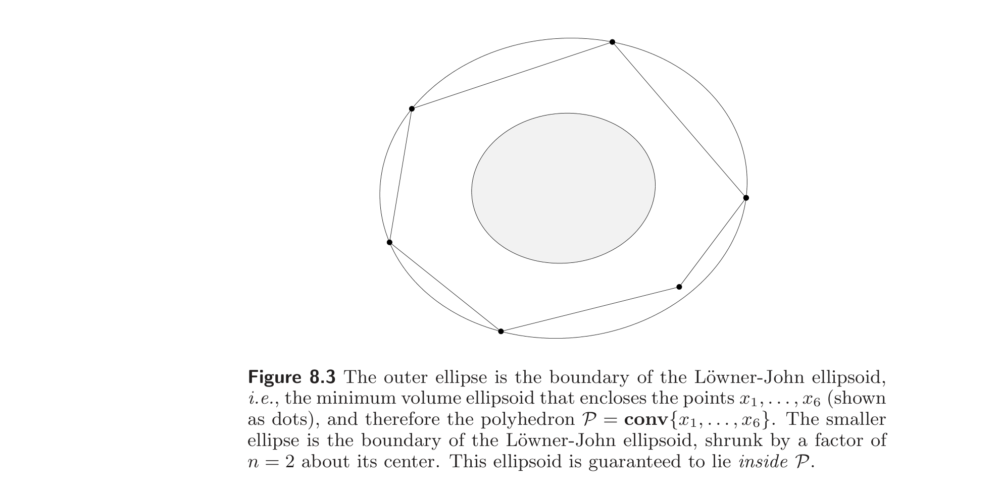
Efficiency of Löwner-John ellipsoidal approximation. Let $E_{\mathrm{lj}}$ be the Löwner-John ellipsoid of the convex set $C \subseteq \mathbb{R}^n$, which is bounded and has nonempty interior, and let $x_0$ be its center. If we shrink the Löwner-John ellipsoid by a factor of $n$, about its center, we obtain an ellipsoid that lies inside the set $C$: $$ x_0 + (1/n)(E_{\mathrm{lj}} - x_0) \subseteq C \subseteq E_{\mathrm{lj}}. $$ In other words, the Löwner-John ellipsoid approximates an arbitrary convex set, within a factor that depends only on the dimension $n$. Figure 8.3 shows a simple example.
Löwner-John 椭球逼近的效率。 设 $E_{\mathrm{lj}}$ 为有界且内部非空的凸集 $C \subseteq \mathbb{R}^n$ 的 Löwner-John 椭球，$x_0$ 为其中心。将 Löwner-John 椭球关于其中心收缩因子 $n$，得到一个位于 $C$ 内的椭球： $$ x_0 + (1/n)(E_{\mathrm{lj}} - x_0) \subseteq C \subseteq E_{\mathrm{lj}}. $$ 换言之，Löwner-John 椭球逼近任意凸集的误差因子仅依赖于维数 $n$。图 8.3 给出一个简单例子。
The factor $1/n$ cannot be improved without additional assumptions on $C$. Any simplex in $\mathbb{R}^n$, for example, has the property that its Löwner-John ellipsoid must be shrunk by a factor $n$ to fit inside it (see exercise 8.13).
没有对 $C$ 的额外假设，因子 $1/n$ 不可改进。例如，$\mathbb{R}^n$ 中任何单纯形都有如下性质：其 Löwner-John 椭球必须收缩因子 $n$ 才能放入其内部（见习题 8.13）。
We will prove this efficiency result for the special case $C = \mathbf{conv}\{x_1, \ldots, x_m\}$. We square the norm constraints in (8.11) and introduce variables $\tilde{A} = A^2$ and $\tilde{b} = Ab$, to obtain the problem $$ \begin{array}{ll} \text{minimize} & \log \det \tilde{A}^{-1} \\ \text{subject to} & x_i^T \tilde{A} x_i - 2\tilde{b}^T x_i + \tilde{b}^T \tilde{A}^{-1} \tilde{b} \le 1, \quad i = 1, \ldots, m. \end{array} \tag{8.12} $$ The KKT conditions for this problem are $$ \begin{array}{rcl} \sum_{i=1}^{m} \lambda_i (x_i x_i^T - \tilde{A}^{-1} \tilde{b} \tilde{b}^T \tilde{A}^{-1}) & = & \tilde{A}^{-1} \\ \sum_{i=1}^{m} \lambda_i (x_i - \tilde{A}^{-1} \tilde{b}) & = & 0 \\ \lambda_i \ge 0, \quad x_i^T \tilde{A} x_i - 2\tilde{b}^T x_i + \tilde{b}^T \tilde{A}^{-1} \tilde{b} \le 1, & & i = 1, \ldots, m \\ \lambda_i (1 - x_i^T \tilde{A} x_i + 2\tilde{b}^T x_i - \tilde{b}^T \tilde{A}^{-1} \tilde{b}) = 0, & & i = 1, \ldots, m. \end{array} $$ By a suitable affine change of coordinates, we can assume that $\tilde{A} = I$ and $\tilde{b} = 0$, i.e., the minimum volume ellipsoid is the unit ball centered at the origin. The KKT conditions then simplify to $$ \sum_{i=1}^{m} \lambda_i x_i x_i^T = I, \qquad \sum_{i=1}^{m} \lambda_i x_i = 0, \qquad \lambda_i(1 - x_i^T x_i) = 0, \quad i = 1, \ldots, m, $$ plus the feasibility conditions $\|x_i\|_2 \le 1$ and $\lambda_i \ge 0$. By taking the trace of both sides of the first equation, and using complementary slackness, we also have $\sum_{i=1}^{m} \lambda_i = n$.
我们对 $C = \mathbf{conv}\{x_1, \ldots, x_m\}$ 这一特殊情形证明此效率结果。将 (8.11) 中的范数约束平方，并引入变量 $\tilde{A} = A^2$ 与 $\tilde{b} = Ab$，得问题 $$ \begin{array}{ll} \text{minimize} & \log \det \tilde{A}^{-1} \\ \text{subject to} & x_i^T \tilde{A} x_i - 2\tilde{b}^T x_i + \tilde{b}^T \tilde{A}^{-1} \tilde{b} \le 1, \quad i = 1, \ldots, m. \end{array} \tag{8.12} $$ 其 KKT 条件为 $$ \begin{array}{rcl} \sum_{i=1}^{m} \lambda_i (x_i x_i^T - \tilde{A}^{-1} \tilde{b} \tilde{b}^T \tilde{A}^{-1}) & = & \tilde{A}^{-1} \\ \sum_{i=1}^{m} \lambda_i (x_i - \tilde{A}^{-1} \tilde{b}) & = & 0 \\ \lambda_i \ge 0, \quad x_i^T \tilde{A} x_i - 2\tilde{b}^T x_i + \tilde{b}^T \tilde{A}^{-1} \tilde{b} \le 1, & & i = 1, \ldots, m \\ \lambda_i (1 - x_i^T \tilde{A} x_i + 2\tilde{b}^T x_i - \tilde{b}^T \tilde{A}^{-1} \tilde{b}) = 0, & & i = 1, \ldots, m. \end{array} $$ 通过适当的仿射坐标变换，可设 $\tilde{A} = I$ 且 $\tilde{b} = 0$，即最小体积椭球是以原点为中心的单位球。此时 KKT 条件简化为 $$ \sum_{i=1}^{m} \lambda_i x_i x_i^T = I, \qquad \sum_{i=1}^{m} \lambda_i x_i = 0, \qquad \lambda_i(1 - x_i^T x_i) = 0, \quad i = 1, \ldots, m, $$ 外加可行性条件 $\|x_i\|_2 \le 1$ 与 $\lambda_i \ge 0$。对第一式两边取迹，并利用互补松弛，还得 $\sum_{i=1}^{m} \lambda_i = n$。
In the new coordinates the shrunk ellipsoid is a ball with radius $1/n$, centered at the origin. We need to show that $$ \|x\|_2 \le 1/n \;\Longrightarrow\; x \in C = \mathbf{conv}\{x_1, \ldots, x_m\}. $$ Suppose $\|x\|_2 \le 1/n$. From the KKT conditions, we see that $$ \begin{array}{rcl} x & = & \sum_{i=1}^{m} \lambda_i (x^T x_i) x_i = \sum_{i=1}^{m} \lambda_i (x^T x_i + 1/n) x_i = \sum_{i=1}^{m} \mu_i x_i, \end{array} \tag{8.13} $$ where $\mu_i = \lambda_i (x^T x_i + 1/n)$. From the Cauchy-Schwarz inequality, we note that $$ \mu_i = \lambda_i (x^T x_i + 1/n) \ge \lambda_i (-\|x\|_2 \|x_i\|_2 + 1/n) \ge \lambda_i (-1/n + 1/n) = 0. $$ Furthermore $$ \sum_{i=1}^{m} \mu_i = \sum_{i=1}^{m} \lambda_i (x^T x_i + 1/n) = \sum_{i=1}^{m} \lambda_i /n = 1. $$ This, along with (8.13), shows that $x$ is a convex combination of $x_1, \ldots, x_m$, hence $x \in C$.
在新坐标下，收缩后的椭球是以原点为中心、半径 $1/n$ 的球。需证 $$ \|x\|_2 \le 1/n \;\Longrightarrow\; x \in C = \mathbf{conv}\{x_1, \ldots, x_m\}. $$ 设 $\|x\|_2 \le 1/n$。由 KKT 条件可见 $$ \begin{array}{rcl} x & = & \sum_{i=1}^{m} \lambda_i (x^T x_i) x_i = \sum_{i=1}^{m} \lambda_i (x^T x_i + 1/n) x_i = \sum_{i=1}^{m} \mu_i x_i, \end{array} \tag{8.13} $$ 其中 $\mu_i = \lambda_i (x^T x_i + 1/n)$。由 Cauchy-Schwarz 不等式，注意 $$ \mu_i = \lambda_i (x^T x_i + 1/n) \ge \lambda_i (-\|x\|_2 \|x_i\|_2 + 1/n) \ge \lambda_i (-1/n + 1/n) = 0. $$ 且 $$ \sum_{i=1}^{m} \mu_i = \sum_{i=1}^{m} \lambda_i (x^T x_i + 1/n) = \sum_{i=1}^{m} \lambda_i /n = 1. $$ 此式与 (8.13) 表明 $x$ 是 $x_1, \ldots, x_m$ 的凸组合，故 $x \in C$。
Efficiency of Löwner-John ellipsoidal approximation for symmetric sets. If the set $C$ is symmetric about a point $x_0$, then the factor $1/n$ can be tightened to $1/\sqrt{n}$: $$ x_0 + (1/\sqrt{n})(E_{\mathrm{lj}} - x_0) \subseteq C \subseteq E_{\mathrm{lj}}. $$ Again, the factor $1/\sqrt{n}$ is tight. The Löwner-John ellipsoid of the cube $$ C = \{x \in \mathbb{R}^n \mid -1 \preceq x \preceq 1\} $$ is the ball with radius $\sqrt{n}$. Scaling down by $1/\sqrt{n}$ yields a ball enclosed in $C$, and touching the boundary at $x = \pm e_i$.
对称集的 Löwner-John 椭球逼近效率。 若集合 $C$ 关于点 $x_0$ 对称，则因子 $1/n$ 可加强为 $1/\sqrt{n}$： $$ x_0 + (1/\sqrt{n})(E_{\mathrm{lj}} - x_0) \subseteq C \subseteq E_{\mathrm{lj}}. $$ 因子 $1/\sqrt{n}$ 同样是紧的。立方体 $$ C = \{x \in \mathbb{R}^n \mid -1 \preceq x \preceq 1\} $$ 的 Löwner-John 椭球是半径为 $\sqrt{n}$ 的球。按 $1/\sqrt{n}$ 缩小得到一个含于 $C$ 内、且在 $x = \pm e_i$ 处与边界相切的球。
Approximating a norm by a quadratic norm. Let $\|\cdot\|$ be any norm on $\mathbb{R}^n$, and let $C = \{x \mid \|x\| \le 1\}$ be its unit ball. Let $E_{\mathrm{lj}} = \{x \mid x^T A x \le 1\}$, with $A \in \mathbf{S}_{++}^n$, be the Löwner-John ellipsoid of $C$. Since $C$ is symmetric about the origin, the result above tells us that $(1/\sqrt{n}) E_{\mathrm{lj}} \subseteq C \subseteq E_{\mathrm{lj}}$. Let $\|\cdot\|_{\mathrm{lj}}$ denote the quadratic norm $$ \|z\|_{\mathrm{lj}} = (z^T A z)^{1/2}, $$ whose unit ball is $E_{\mathrm{lj}}$. The inclusions $(1/\sqrt{n}) E_{\mathrm{lj}} \subseteq C \subseteq E_{\mathrm{lj}}$ are equivalent to the inequalities $$ \|z\|_{\mathrm{lj}} \le \|z\| \le \sqrt{n}\, \|z\|_{\mathrm{lj}} $$ for all $z \in \mathbb{R}^n$. In other words, the quadratic norm $\|\cdot\|_{\mathrm{lj}}$ approximates the norm $\|\cdot\|$ within a factor of $\sqrt{n}$. In particular, we see that any norm on $\mathbb{R}^n$ can be approximated within a factor of $\sqrt{n}$ by a quadratic norm.
用二次范数逼近范数。 设 $\|\cdot\|$ 为 $\mathbb{R}^n$ 上任一范数，$C = \{x \mid \|x\| \le 1\}$ 为其单位球。设 $E_{\mathrm{lj}} = \{x \mid x^T A x \le 1\}$（$A \in \mathbf{S}_{++}^n$）为 $C$ 的 Löwner-John 椭球。因 $C$ 关于原点对称，上述结果给出 $(1/\sqrt{n}) E_{\mathrm{lj}} \subseteq C \subseteq E_{\mathrm{lj}}$。记 $\|\cdot\|_{\mathrm{lj}}$ 为二次范数 $$ \|z\|_{\mathrm{lj}} = (z^T A z)^{1/2}, $$ 其单位球为 $E_{\mathrm{lj}}$。包含关系 $(1/\sqrt{n}) E_{\mathrm{lj}} \subseteq C \subseteq E_{\mathrm{lj}}$ 等价于不等式 $$ \|z\|_{\mathrm{lj}} \le \|z\| \le \sqrt{n}\, \|z\|_{\mathrm{lj}} $$ 对所有 $z \in \mathbb{R}^n$ 成立。换言之，二次范数 $\|\cdot\|_{\mathrm{lj}}$ 在 $\sqrt{n}$ 因子内逼近范数 $\|\cdot\|$。特别地，$\mathbb{R}^n$ 上任何范数都可用一个二次范数在 $\sqrt{n}$ 因子内逼近。
8.4.2 Maximum volume inscribed ellipsoid
8.4.2 最大体积内接椭球
We now consider the problem of finding the ellipsoid of maximum volume that lies inside a convex set $C$, which we assume is bounded and has nonempty interior. To formulate this problem, we parametrize the ellipsoid as the image of the unit ball under an affine transformation, i.e., as $$ \mathcal{E} = \{Bu + d \mid \|u\|_2 \le 1\}. $$ Again it can be assumed that $B \in \mathbf{S}_{++}^n$, so the volume is proportional to $\det B$. We can find the maximum volume ellipsoid inside $C$ by solving the convex optimization problem $$ \begin{array}{ll} \text{maximize} & \log \det B \\ \text{subject to} & \sup_{\|u\|_2 \le 1} I_C(Bu + d) \le 0 \end{array} \tag{8.14} $$ in the variables $B \in \mathbf{S}^n$ and $d \in \mathbb{R}^n$, with implicit constraint $B \succ 0$.
现在考虑求位于凸集 $C$ 内的最大体积椭球的问题，设 $C$ 有界且内部非空。为表述此问题，把椭球参数化为单位球在仿射变换下的像，即 $$ \mathcal{E} = \{Bu + d \mid \|u\|_2 \le 1\}. $$ 同样不妨设 $B \in \mathbf{S}_{++}^n$，故体积正比于 $\det B$。通过求解凸优化问题 $$ \begin{array}{ll} \text{maximize} & \log \det B \\ \text{subject to} & \sup_{\|u\|_2 \le 1} I_C(Bu + d) \le 0 \end{array} \tag{8.14} $$ （变量为 $B \in \mathbf{S}^n$ 和 $d \in \mathbb{R}^n$，隐式约束 $B \succ 0$）即可求 $C$ 内的最大体积椭球。
Maximum volume ellipsoid in a polyhedron. We consider the case where $C$ is a polyhedron described by a set of linear inequalities: $$ C = \{x \mid a_i^T x \le b_i, \; i = 1, \ldots, m\}. $$ To apply (8.14) we first express the constraint in a more convenient form: $$ \begin{array}{rcl} \sup_{\|u\|_2 \le 1} I_C(Bu + d) \le 0 & \Longleftrightarrow & \sup_{\|u\|_2 \le 1} a_i^T (Bu + d) \le b_i, \quad i = 1, \ldots, m \\ & \Longleftrightarrow & \|Ba_i\|_2 + a_i^T d \le b_i, \quad i = 1, \ldots, m. \end{array} $$ We can therefore formulate (8.14) as a convex optimization problem in the variables $B$ and $d$: $$ \begin{array}{ll} \text{minimize} & \log \det B^{-1} \\ \text{subject to} & \|Ba_i\|_2 + a_i^T d \le b_i, \quad i = 1, \ldots, m. \end{array} \tag{8.15} $$
多面体内的最大体积椭球。 考虑 $C$ 为由线性不等式组描述的多面体的情形： $$ C = \{x \mid a_i^T x \le b_i, \; i = 1, \ldots, m\}. $$ 为应用 (8.14)，先将约束写成更方便的形式： $$ \begin{array}{rcl} \sup_{\|u\|_2 \le 1} I_C(Bu + d) \le 0 & \Longleftrightarrow & \sup_{\|u\|_2 \le 1} a_i^T (Bu + d) \le b_i, \quad i = 1, \ldots, m \\ & \Longleftrightarrow & \|Ba_i\|_2 + a_i^T d \le b_i, \quad i = 1, \ldots, m. \end{array} $$ 于是 (8.14) 可表为关于变量 $B$ 和 $d$ 的凸优化问题： $$ \begin{array}{ll} \text{minimize} & \log \det B^{-1} \\ \text{subject to} & \|Ba_i\|_2 + a_i^T d \le b_i, \quad i = 1, \ldots, m. \end{array} \tag{8.15} $$
Maximum volume ellipsoid in an intersection of ellipsoids. We can also find the maximum volume ellipsoid $\mathcal{E}$ that lies in the intersection of $m$ ellipsoids $\mathcal{E}_1, \ldots, \mathcal{E}_m$. We will describe $\mathcal{E}$ as $\mathcal{E} = \{Bu + d \mid \|u\|_2 \le 1\}$ with $B \in \mathbf{S}_{++}^n$, and the other ellipsoids via convex quadratic inequalities, $$ \mathcal{E}_i = \{x \mid x^T A_i x + 2b_i^T x + c_i \le 0\}, \quad i = 1, \ldots, m, $$ where $A_i \in \mathbf{S}_{++}^n$. We first work out the condition under which $\mathcal{E} \subseteq \mathcal{E}_i$. This occurs if and only if $$ \begin{array}{rcl} \sup_{\|u\|_2 \le 1} \left((d + Bu)^T A_i(d + Bu) + 2b_i^T(d + Bu) + c_i\right) & = & d^T A_i d + 2b_i^T d + c_i \\ & & + \sup_{\|u\|_2 \le 1} \left(u^T B A_i B u + 2(A_i d + b_i)^T B u\right) \\ & \le & 0. \end{array} $$ From §B.1, $$ \sup_{\|u\|_2 \le 1} \left(u^T B A_i B u + 2(A_i d + b_i)^T B u\right) \le -(d^T A_i d + 2b_i^T d + c_i) $$ if and only if there exists a $\lambda_i \ge 0$ such that $$ \left[\begin{array}{cc} -\lambda_i - d^T A_i d - 2b_i^T d - c_i & (A_i d + b_i)^T B \\ B(A_i d + b_i) & \lambda_i I - B A_i B \end{array}\right] \succeq 0. $$ The maximum volume ellipsoid contained in $\mathcal{E}_1, \ldots, \mathcal{E}_m$ can therefore be found by solving the problem $$ \begin{array}{ll} \text{minimize} & \log \det B^{-1} \\ \text{subject to} & \left[\begin{array}{cc} -\lambda_i - d^T A_i d - 2b_i^T d - c_i & (A_i d + b_i)^T B \\ B(A_i d + b_i) & \lambda_i I - B A_i B \end{array}\right] \succeq 0, \quad i = 1, \ldots, m, \end{array} $$ with variables $B \in \mathbf{S}^n$, $d \in \mathbb{R}^n$, and $\lambda \in \mathbb{R}^m$, or, equivalently, $$ \begin{array}{ll} \text{minimize} & \log \det B^{-1} \\ \text{subject to} & \left[\begin{array}{ccc} -\lambda_i - c_i + b_i^T A_i^{-1} b_i & 0 & (d + A_i^{-1} b_i)^T \\ 0 & \lambda_i I & B \\ d + A_i^{-1} b_i & B & A_i^{-1} \end{array}\right] \succeq 0, \quad i = 1, \ldots, m. \end{array} $$
椭球交集中的最大体积椭球。 也可求位于 $m$ 个椭球 $\mathcal{E}_1, \ldots, \mathcal{E}_m$ 交集中的最大体积椭球 $\mathcal{E}$。将 $\mathcal{E}$ 表为 $\mathcal{E} = \{Bu + d \mid \|u\|_2 \le 1\}$（$B \in \mathbf{S}_{++}^n$），其他椭球用凸二次不等式描述： $$ \mathcal{E}_i = \{x \mid x^T A_i x + 2b_i^T x + c_i \le 0\}, \quad i = 1, \ldots, m, $$ 其中 $A_i \in \mathbf{S}_{++}^n$。先推导 $\mathcal{E} \subseteq \mathcal{E}_i$ 的条件。此成立当且仅当 $$ \begin{array}{rcl} \sup_{\|u\|_2 \le 1} \left((d + Bu)^T A_i(d + Bu) + 2b_i^T(d + Bu) + c_i\right) & = & d^T A_i d + 2b_i^T d + c_i \\ & & + \sup_{\|u\|_2 \le 1} \left(u^T B A_i B u + 2(A_i d + b_i)^T B u\right) \\ & \le & 0. \end{array} $$ 由 §B.1， $$ \sup_{\|u\|_2 \le 1} \left(u^T B A_i B u + 2(A_i d + b_i)^T B u\right) \le -(d^T A_i d + 2b_i^T d + c_i) $$ 当且仅当存在 $\lambda_i \ge 0$ 使 $$ \left[\begin{array}{cc} -\lambda_i - d^T A_i d - 2b_i^T d - c_i & (A_i d + b_i)^T B \\ B(A_i d + b_i) & \lambda_i I - B A_i B \end{array}\right] \succeq 0. $$ 故含于 $\mathcal{E}_1, \ldots, \mathcal{E}_m$ 的最大体积椭球可通过求解 $$ \begin{array}{ll} \text{minimize} & \log \det B^{-1} \\ \text{subject to} & \left[\begin{array}{cc} -\lambda_i - d^T A_i d - 2b_i^T d - c_i & (A_i d + b_i)^T B \\ B(A_i d + b_i) & \lambda_i I - B A_i B \end{array}\right] \succeq 0, \quad i = 1, \ldots, m, \end{array} $$ （变量为 $B \in \mathbf{S}^n$、$d \in \mathbb{R}^n$、$\lambda \in \mathbb{R}^m$）求得，或等价地表为 $$ \begin{array}{ll} \text{minimize} & \log \det B^{-1} \\ \text{subject to} & \left[\begin{array}{ccc} -\lambda_i - c_i + b_i^T A_i^{-1} b_i & 0 & (d + A_i^{-1} b_i)^T \\ 0 & \lambda_i I & B \\ d + A_i^{-1} b_i & B & A_i^{-1} \end{array}\right] \succeq 0, \quad i = 1, \ldots, m. \end{array} $$
Efficiency of ellipsoidal inner approximations. Approximation efficiency results, similar to the ones for the Löwner-John ellipsoid, hold for the maximum volume inscribed ellipsoid. If $C \subseteq \mathbb{R}^n$ is convex, bounded, with nonempty interior, then the maximum volume inscribed ellipsoid, expanded by a factor of $n$ about its center, covers the set $C$. The factor $n$ can be tightened to $\sqrt{n}$ if the set $C$ is symmetric about a point. An example is shown in figure 8.4.
椭球内逼近的效率。 与 Löwner-John 椭球类似，最大体积内接椭球也有逼近效率结果。若 $C \subseteq \mathbb{R}^n$ 凸、有界且内部非空，则最大体积内接椭球关于其中心扩大因子 $n$ 后覆盖 $C$。若 $C$ 关于某点对称，因子 $n$ 可加强为 $\sqrt{n}$。一例如图 8.4 所示。
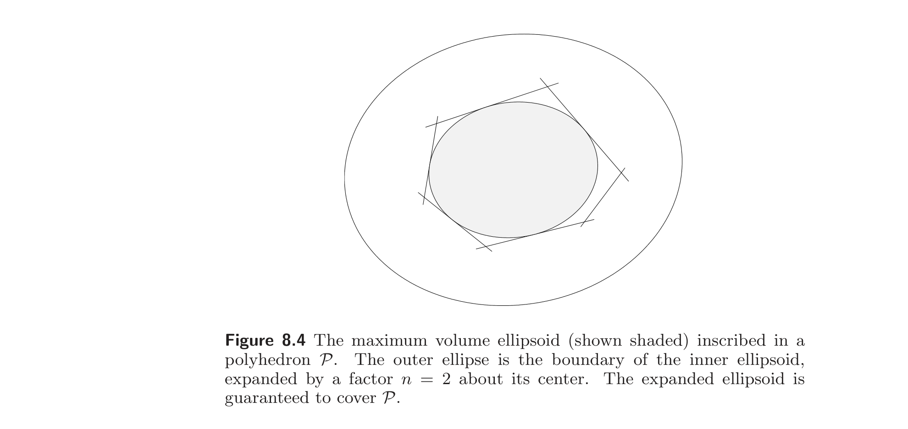
8.4.3 Affine invariance of extremal volume ellipsoids
8.4.3 极值体积椭球的仿射不变性
The Löwner-John ellipsoid and the maximum volume inscribed ellipsoid are both affinely invariant. If $E_{\mathrm{lj}}$ is the Löwner-John ellipsoid of $C$, and $T \in \mathbb{R}^{n\times n}$ is nonsingular, then the Löwner-John ellipsoid of $TC$ is $T E_{\mathrm{lj}}$. A similar result holds for the maximum volume inscribed ellipsoid.
Löwner-John 椭球和最大体积内接椭球都是仿射不变的。若 $E_{\mathrm{lj}}$ 是 $C$ 的 Löwner-John 椭球，$T \in \mathbb{R}^{n\times n}$ 非奇异，则 $TC$ 的 Löwner-John 椭球为 $T E_{\mathrm{lj}}$。最大体积内接椭球有类似结论。
To establish this result, let $\mathcal{E}$ be any ellipsoid that covers $C$. Then the ellipsoid $T\mathcal{E}$ covers $TC$. The converse is also true: Every ellipsoid that covers $TC$ has the form $T\mathcal{E}$, where $\mathcal{E}$ is an ellipsoid that covers $C$. In other words, the relation $\tilde{\mathcal{E}} = T\mathcal{E}$ gives a one-to-one correspondence between the ellipsoids covering $TC$ and the ellipsoids covering $C$. Moreover, the volumes of the corresponding ellipsoids are all related by the ratio $|\det T|$, so in particular, if $\mathcal{E}$ has minimum volume among ellipsoids covering $C$, then $T\mathcal{E}$ has minimum volume among ellipsoids covering $TC$.
为证此结果，设 $\mathcal{E}$ 为任一覆盖 $C$ 的椭球。则椭球 $T\mathcal{E}$ 覆盖 $TC$。反之亦真：每个覆盖 $TC$ 的椭球都形如 $T\mathcal{E}$，其中 $\mathcal{E}$ 是覆盖 $C$ 的椭球。换言之，关系 $\tilde{\mathcal{E}} = T\mathcal{E}$ 给出了覆盖 $TC$ 的椭球与覆盖 $C$ 的椭球之间的一一对应。且对应椭球的体积都相差比值 $|\det T|$，故特别地，若 $\mathcal{E}$ 在覆盖 $C$ 的椭球中体积最小，则 $T\mathcal{E}$ 在覆盖 $TC$ 的椭球中体积最小。
8.5 Centering
8.5 定心
8.5.1 Chebyshev center
8.5.1 Chebyshev 中心
Let $C \subseteq \mathbb{R}^n$ be bounded and have nonempty interior, and $x \in C$. The depth of a point $x \in C$ is defined as $$ \mathbf{depth}(x, C) = \mathbf{dist}(x, \mathbb{R}^n \setminus C), $$ i.e., the distance to the closest point in the exterior of $C$. The depth gives the radius of the largest ball, centered at $x$, that lies in $C$. A Chebyshev center of the set $C$ is defined as any point of maximum depth in $C$: $$ x_{\mathrm{cheb}}(C) = \mathop{\arg\max} \mathbf{depth}(x, C) = \mathop{\arg\max} \mathbf{dist}(x, \mathbb{R}^n \setminus C). $$ A Chebyshev center is a point inside $C$ that is farthest from the exterior of $C$; it is also the center of the largest ball that lies inside $C$. Figure 8.5 shows an example, in which $C$ is a polyhedron, and the norm is Euclidean.
设 $C \subseteq \mathbb{R}^n$ 有界且内部非空，$x \in C$。点 $x \in C$ 的深度定义为 $$ \mathbf{depth}(x, C) = \mathbf{dist}(x, \mathbb{R}^n \setminus C), $$ 即到 $C$ 外部最近点的距离。深度给出了以 $x$ 为心、含于 $C$ 内的最大球的半径。$C$ 的 Chebyshev 中心定义为 $C$ 中深度最大的点： $$ x_{\mathrm{cheb}}(C) = \mathop{\arg\max} \mathbf{depth}(x, C) = \mathop{\arg\max} \mathbf{dist}(x, \mathbb{R}^n \setminus C). $$ Chebyshev 中心是 $C$ 内离外部最远的点；也是含于 $C$ 内最大球的中心。图 8.5 给出一个例子，其中 $C$ 是多面体，范数为 Euclid 范数。
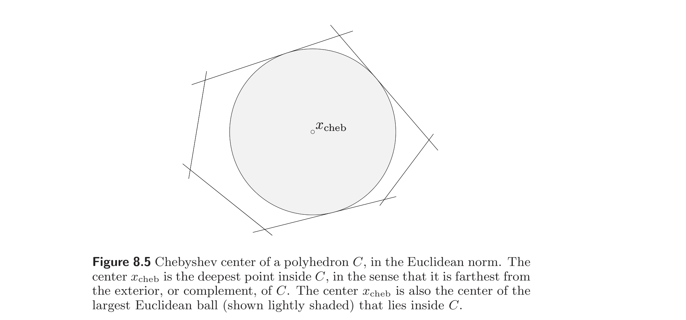
Chebyshev center of a convex set. When the set $C$ is convex, the depth is a concave function for $x \in C$, so computing the Chebyshev center is a convex optimization problem (see exercise 8.5). More specifically, suppose $C \subseteq \mathbb{R}^n$ is defined by a set of convex inequalities: $$ C = \{x \mid f_1(x) \le 0, \ldots, f_m(x) \le 0\}. $$ We can find a Chebyshev center by solving the problem $$ \begin{array}{ll} \text{maximize} & R \\ \text{subject to} & g_i(x, R) \le 0, \quad i = 1, \ldots, m, \end{array} \tag{8.16} $$ where $g_i$ is defined as $$ g_i(x, R) = \sup_{\|u\| \le 1} f_i(x + Ru). $$ Problem (8.16) is a convex optimization problem, since each function $g_i$ is the pointwise maximum of a family of convex functions of $x$ and $R$, hence convex. However, evaluating $g_i$ involves solving a convex maximization problem (either numerically or analytically), which may be very hard. In practice, we can find the Chebyshev center only in cases where the functions $g_i$ are easy to evaluate.
凸集的 Chebyshev 中心。 当 $C$ 凸时，深度对 $x \in C$ 是凹函数，故求 Chebyshev 中心是凸优化问题（见习题 8.5）。更具体地，设 $C \subseteq \mathbb{R}^n$ 由一组凸不等式定义： $$ C = \{x \mid f_1(x) \le 0, \ldots, f_m(x) \le 0\}. $$ 通过求解问题 $$ \begin{array}{ll} \text{maximize} & R \\ \text{subject to} & g_i(x, R) \le 0, \quad i = 1, \ldots, m, \end{array} \tag{8.16} $$ 可求 Chebyshev 中心，其中 $$ g_i(x, R) = \sup_{\|u\| \le 1} f_i(x + Ru). $$ (8.16) 是凸优化问题，因为每个 $g_i$ 是关于 $x$、$R$ 的一族凸函数的点值上确界，从而凸。但计算 $g_i$ 涉及求解一个凸最大化问题（数值或解析地），可能非常困难。实际中仅在 $g_i$ 易于计算的情形下方能求得 Chebyshev 中心。
Chebyshev center of a polyhedron. Suppose $C$ is defined by a set of linear inequalities $a_i^T x \le b_i$, $i = 1, \ldots, m$. We have $$ g_i(x, R) = \sup_{\|u\| \le 1} a_i^T(x + Ru) - b_i = a_i^T x + R\|a_i\|_* - b_i $$ if $R \ge 0$, so the Chebyshev center can be found by solving the LP $$ \begin{array}{ll} \text{maximize} & R \\ \text{subject to} & a_i^T x + R\|a_i\|_* \le b_i, \quad i = 1, \ldots, m \\ & R \ge 0 \end{array} $$ with variables $x$ and $R$.
多面体的 Chebyshev 中心。 设 $C$ 由线性不等式组 $a_i^T x \le b_i$（$i = 1, \ldots, m$）定义。当 $R \ge 0$ 时 $$ g_i(x, R) = \sup_{\|u\| \le 1} a_i^T(x + Ru) - b_i = a_i^T x + R\|a_i\|_* - b_i, $$ 故可通过求解 LP $$ \begin{array}{ll} \text{maximize} & R \\ \text{subject to} & a_i^T x + R\|a_i\|_* \le b_i, \quad i = 1, \ldots, m \\ & R \ge 0 \end{array} $$ （变量为 $x$ 和 $R$）求得 Chebyshev 中心。
Euclidean Chebyshev center of intersection of ellipsoids. Let $C$ be an intersection of $m$ ellipsoids, defined by quadratic inequalities, $$ C = \{x \mid x^T A_i x + 2b_i^T x + c_i \le 0, \; i = 1, \ldots, m\}, $$ where $A_i \in \mathbf{S}_{++}^n$. We have $$ \begin{array}{rcl} g_i(x, R) & = & \sup_{\|u\|_2 \le 1} \left((x + Ru)^T A_i(x + Ru) + 2b_i^T(x + Ru) + c_i\right) \\ & = & x^T A_i x + 2b_i^T x + c_i + \sup_{\|u\|_2 \le 1} \left(R^2 u^T A_i u + 2R(A_i x + b_i)^T u\right). \end{array} $$ From §B.1, $g_i(x, R) \le 0$ if and only if there exists a $\lambda_i$ such that the matrix inequality $$ \left[\begin{array}{cc} -x^T A_i x - 2b_i^T x - c_i - \lambda_i & R(A_i x + b_i)^T \\ R(A_i x + b_i) & \lambda_i I - R^2 A_i \end{array}\right] \succeq 0 \tag{8.17} $$ holds. Using this result, we can express the Chebyshev centering problem as $$ \begin{array}{ll} \text{maximize} & R \\ \text{subject to} & \left[\begin{array}{ccc} -\lambda_i - c_i + b_i^T A_i^{-1} b_i & 0 & (x + A_i^{-1} b_i)^T \\ 0 & \lambda_i I & RI \\ x + A_i^{-1} b_i & RI & A_i^{-1} \end{array}\right] \succeq 0, \quad i = 1, \ldots, m, \end{array} $$ which is an SDP with variables $R$, $\lambda$, and $x$. Note that the Schur complement of $A_i^{-1}$ in the LMI constraint is equal to the lefthand side of (8.17).
椭球交集的 Euclid Chebyshev 中心。 设 $C$ 为 $m$ 个椭球的交集，由二次不等式定义： $$ C = \{x \mid x^T A_i x + 2b_i^T x + c_i \le 0, \; i = 1, \ldots, m\}, $$ 其中 $A_i \in \mathbf{S}_{++}^n$。有 $$ \begin{array}{rcl} g_i(x, R) & = & \sup_{\|u\|_2 \le 1} \left((x + Ru)^T A_i(x + Ru) + 2b_i^T(x + Ru) + c_i\right) \\ & = & x^T A_i x + 2b_i^T x + c_i + \sup_{\|u\|_2 \le 1} \left(R^2 u^T A_i u + 2R(A_i x + b_i)^T u\right). \end{array} $$ 由 §B.1，$g_i(x, R) \le 0$ 当且仅当存在 $\lambda_i$ 使矩阵不等式 $$ \left[\begin{array}{cc} -x^T A_i x - 2b_i^T x - c_i - \lambda_i & R(A_i x + b_i)^T \\ R(A_i x + b_i) & \lambda_i I - R^2 A_i \end{array}\right] \succeq 0 \tag{8.17} $$ 成立。利用此结果，Chebyshev 定心问题可表为 $$ \begin{array}{ll} \text{maximize} & R \\ \text{subject to} & \left[\begin{array}{ccc} -\lambda_i - c_i + b_i^T A_i^{-1} b_i & 0 & (x + A_i^{-1} b_i)^T \\ 0 & \lambda_i I & RI \\ x + A_i^{-1} b_i & RI & A_i^{-1} \end{array}\right] \succeq 0, \quad i = 1, \ldots, m, \end{array} $$ 这是变量为 $R$、$\lambda$、$x$ 的 SDP。注意 LMI 约束中 $A_i^{-1}$ 的 Schur 补等于 (8.17) 的左边。
8.5.2 Maximum volume ellipsoid center
8.5.2 最大体积椭球中心
The Chebyshev center $x_{\mathrm{cheb}}$ of a set $C \subseteq \mathbb{R}^n$ is the center of the largest ball that lies in $C$. As an extension of this idea, we define the maximum volume ellipsoid center of $C$, denoted $x_{\mathrm{mve}}$, as the center of the maximum volume ellipsoid that lies in $C$. Figure 8.6 shows an example, where $C$ is a polyhedron.
集合 $C \subseteq \mathbb{R}^n$ 的 Chebyshev 中心 $x_{\mathrm{cheb}}$ 是含于 $C$ 内最大球的中心。作为此思想的推广，定义 $C$ 的最大体积椭球中心，记为 $x_{\mathrm{mve}}$，为含于 $C$ 内的最大体积椭球的中心。图 8.6 给出一个例子，其中 $C$ 是多面体。
The maximum volume ellipsoid center is readily computed when $C$ is defined by a set of linear inequalities, by solving the problem (8.15). (The optimal value of the variable $d \in \mathbb{R}^n$ is $x_{\mathrm{mve}}$.) Since the maximum volume ellipsoid inside $C$ is affine invariant, so is the maximum volume ellipsoid center.
当 $C$ 由线性不等式组定义时，最大体积椭球中心易于计算，通过求解问题 (8.15) 得到。（变量 $d \in \mathbb{R}^n$ 的最优值为 $x_{\mathrm{mve}}$。）由于 $C$ 内的最大体积椭球是仿射不变的，最大体积椭球中心也是仿射不变的。
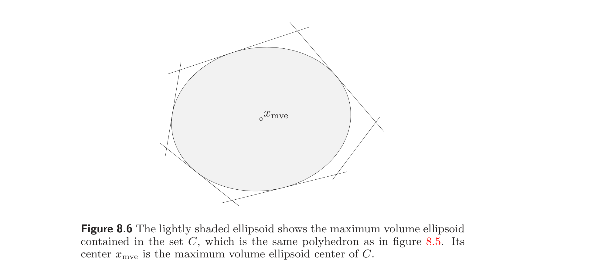
8.5.3 Analytic center of a set of inequalities
8.5.3 一组不等式的解析中心
The analytic center $x_{\mathrm{ac}}$ of a set of convex inequalities and linear equalities, $$ f_i(x) \le 0, \quad i = 1, \ldots, m, \qquad Fx = g $$ is defined as an optimal point for the (convex) problem $$ \begin{array}{ll} \text{minimize} & -\sum_{i=1}^{m} \log(-f_i(x)) \\ \text{subject to} & Fx = g, \end{array} \tag{8.18} $$ with variable $x \in \mathbb{R}^n$ and implicit constraints $f_i(x) < 0$, $i = 1, \ldots, m$. The objective in (8.18) is called the logarithmic barrier associated with the set of inequalities. We assume here that the domain of the logarithmic barrier intersects the affine set defined by the equalities, i.e., the strict inequality system $$ f_i(x) < 0, \quad i = 1, \ldots, m, \qquad Fx = g $$ is feasible. The logarithmic barrier is bounded below on the feasible set $$ C = \{x \mid f_i(x) < 0, i = 1, \ldots, m, Fx = g\}, $$ if $C$ is bounded.
一组凸不等式与线性等式 $$ f_i(x) \le 0, \quad i = 1, \ldots, m, \qquad Fx = g $$ 的解析中心 $x_{\mathrm{ac}}$ 定义为（凸）问题 $$ \begin{array}{ll} \text{minimize} & -\sum_{i=1}^{m} \log(-f_i(x)) \\ \text{subject to} & Fx = g, \end{array} \tag{8.18} $$ 的一个最优点，变量为 $x \in \mathbb{R}^n$，隐式约束为 $f_i(x) < 0$（$i = 1, \ldots, m$）。 (8.18) 的目标函数称为与该组不等式关联的对数障碍。此处假设对数障碍的定义域与等式定义的仿射集相交，即严格不等式组 $$ f_i(x) < 0, \quad i = 1, \ldots, m, \qquad Fx = g $$ 可行。若可行集 $$ C = \{x \mid f_i(x) < 0, i = 1, \ldots, m, Fx = g\} $$ 有界，则对数障碍在 $C$ 上有下界。
When $x$ is strictly feasible, i.e., $Fx = g$ and $f_i(x) < 0$ for $i = 1, \ldots, m$, we can interpret $-f_i(x)$ as the margin or slack in the $i$th inequality. The analytic center $x_{\mathrm{ac}}$ is the point that maximizes the product (or geometric mean) of these slacks or margins, subject to the equality constraints $Fx = g$, and the implicit constraints $f_i(x) < 0$.
当 $x$ 严格可行，即 $Fx = g$ 且 $f_i(x) < 0$（$i = 1, \ldots, m$）时，可把 $-f_i(x)$ 解释为第 $i$ 个不等式的裕度或松弛。解析中心 $x_{\mathrm{ac}}$ 是在等式约束 $Fx = g$ 和隐式约束 $f_i(x) < 0$ 下使这些松弛或裕度之积（或几何平均）最大的点。
The analytic center is not a function of the set $C$ described by the inequalities and equalities; two sets of inequalities and equalities can define the same set, but have different analytic centers. Still, it is not uncommon to informally use the term 'analytic center of a set $C$' to mean the analytic center of a particular set of equalities and inequalities that define it.
解析中心并非由不等式和等式描述的集合 $C$ 的函数；两组不等式和等式可定义同一集合，但有不同解析中心。尽管如此，非正式地用“集合 $C$ 的解析中心”来指定义它的某组特定等式与不等式的解析中心并不少见。
The analytic center is, however, independent of affine changes of coordinates. It is also invariant under (positive) scalings of the inequality functions, and any reparametrization of the equality constraints. In other words, if $\tilde{F}$ and $\tilde{g}$ are such that $\tilde{F}x = \tilde{g}$ if and only if $Fx = g$, and $\alpha_1, \ldots, \alpha_m > 0$, then the analytic center of $$ \alpha_i f_i(x) \le 0, \quad i = 1, \ldots, m, \qquad \tilde{F}x = \tilde{g}, $$ is the same as the analytic center of $$ f_i(x) \le 0, \quad i = 1, \ldots, m, \qquad Fx = g $$ (see exercise 8.17).
但解析中心与坐标的仿射变换无关。它还不等式函数的（正）伸缩及等式约束的任何重新参数化不变。换言之，若 $\tilde{F}$ 与 $\tilde{g}$ 满足 $\tilde{F}x = \tilde{g}$ 当且仅当 $Fx = g$，且 $\alpha_1, \ldots, \alpha_m > 0$，则 $$ \alpha_i f_i(x) \le 0, \quad i = 1, \ldots, m, \qquad \tilde{F}x = \tilde{g}, $$ 的解析中心与 $$ f_i(x) \le 0, \quad i = 1, \ldots, m, \qquad Fx = g $$ 的解析中心相同（见习题 8.17）。
Analytic center of a set of linear inequalities. The analytic center of a set of linear inequalities $$ a_i^T x \le b_i, \quad i = 1, \ldots, m, $$ is the solution of the unconstrained minimization problem $$ \begin{array}{ll} \text{minimize} & -\sum_{i=1}^{m} \log(b_i - a_i^T x), \end{array} \tag{8.19} $$ with implicit constraint $b_i - a_i^T x > 0$, $i = 1, \ldots, m$. If the polyhedron defined by the linear inequalities is bounded, then the logarithmic barrier is bounded below and strictly convex, so the analytic center is unique. (See exercise 4.2.)
线性不等式组的解析中心。 线性不等式组 $$ a_i^T x \le b_i, \quad i = 1, \ldots, m, $$ 的解析中心是无约束极小化问题 $$ \begin{array}{ll} \text{minimize} & -\sum_{i=1}^{m} \log(b_i - a_i^T x), \end{array} \tag{8.19} $$ 的解，隐式约束为 $b_i - a_i^T x > 0$（$i = 1, \ldots, m$）。若线性不等式定义的多面体有界，则对数障碍有下界且严格凸，故解析中心唯一（见习题 4.2）。
We can give a geometric interpretation of the analytic center of a set of linear inequalities. Since the analytic center is independent of positive scaling of the constraint functions, we can assume without loss of generality that $\|a_i\|_2 = 1$. In this case, the slack $b_i - a_i^T x$ is the distance to the hyperplane $H_i = \{x \mid a_i^T x = b_i\}$. Therefore the analytic center $x_{\mathrm{ac}}$ is the point that maximizes the product of distances to the defining hyperplanes.
可对线性不等式组的解析中心给出几何解释。由于解析中心与约束函数的正伸缩无关，不妨设 $\|a_i\|_2 = 1$。此时松弛 $b_i - a_i^T x$ 是到超平面 $H_i = \{x \mid a_i^T x = b_i\}$ 的距离。故解析中心 $x_{\mathrm{ac}}$ 是到各定义超平面距离之积最大的点。
Inner and outer ellipsoids from analytic center of linear inequalities. The analytic center of a set of linear inequalities implicitly defines an inscribed and a covering ellipsoid, defined by the Hessian of the logarithmic barrier function $$ -\sum_{i=1}^{m} \log(b_i - a_i^T x), $$ evaluated at the analytic center, i.e., $$ H = \sum_{i=1}^{m} d_i^2 a_i a_i^T, \qquad d_i = \frac{1}{b_i - a_i^T x_{\mathrm{ac}}}, \quad i = 1, \ldots, m. $$ We have $\mathcal{E}_{\mathrm{inner}} \subseteq P \subseteq \mathcal{E}_{\mathrm{outer}}$, where $$ \begin{array}{rcl} P & = & \{x \mid a_i^T x \le b_i, i = 1, \ldots, m\}, \\ \mathcal{E}_{\mathrm{inner}} & = & \{x \mid (x - x_{\mathrm{ac}})^T H (x - x_{\mathrm{ac}}) \le 1\}, \\ \mathcal{E}_{\mathrm{outer}} & = & \{x \mid (x - x_{\mathrm{ac}})^T H (x - x_{\mathrm{ac}}) \le m(m-1)\}. \end{array} $$
由线性不等式解析中心得到的内、外椭球。 线性不等式组的解析中心隐式定义了一个内接椭球和一个覆盖椭球，由对数障碍函数 $$ -\sum_{i=1}^{m} \log(b_i - a_i^T x) $$ 在解析中心处的 Hessian 给出，即 $$ H = \sum_{i=1}^{m} d_i^2 a_i a_i^T, \qquad d_i = \frac{1}{b_i - a_i^T x_{\mathrm{ac}}}, \quad i = 1, \ldots, m. $$ 有 $\mathcal{E}_{\mathrm{inner}} \subseteq P \subseteq \mathcal{E}_{\mathrm{outer}}$，其中 $$ \begin{array}{rcl} P & = & \{x \mid a_i^T x \le b_i, i = 1, \ldots, m\}, \\ \mathcal{E}_{\mathrm{inner}} & = & \{x \mid (x - x_{\mathrm{ac}})^T H (x - x_{\mathrm{ac}}) \le 1\}, \\ \mathcal{E}_{\mathrm{outer}} & = & \{x \mid (x - x_{\mathrm{ac}})^T H (x - x_{\mathrm{ac}}) \le m(m-1)\}. \end{array} $$
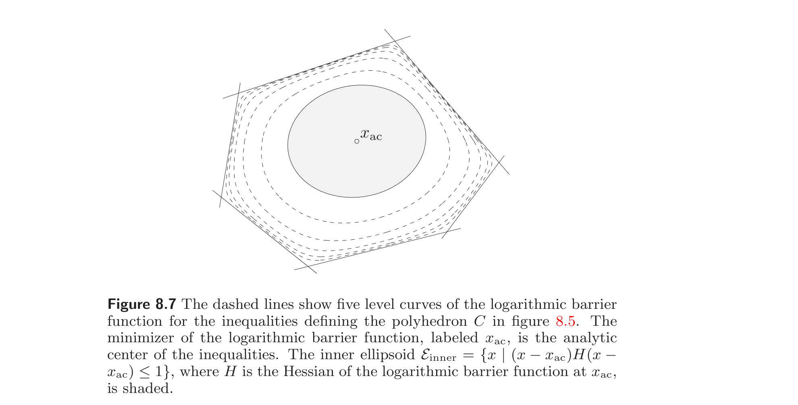
This is a weaker result than the one for the maximum volume inscribed ellipsoid, which when scaled up by a factor of $n$ covers the polyhedron. The inner and outer ellipsoids defined by the Hessian of the logarithmic barrier, in contrast, are related by the scale factor $(m(m-1))^{1/2}$, which is always at least $n$.
这比最大体积内接椭球的结果弱：后者扩大因子 $n$ 即覆盖多面体。而对数障碍 Hessian 定义的内、外椭球之间的尺度因子为 $(m(m-1))^{1/2}$，它总不小于 $n$。
To show that $\mathcal{E}_{\mathrm{inner}} \subseteq P$, suppose $x \in \mathcal{E}_{\mathrm{inner}}$, i.e., $$ (x - x_{\mathrm{ac}})^T H (x - x_{\mathrm{ac}}) = \sum_{i=1}^{m} (d_i a_i^T (x - x_{\mathrm{ac}}))^2 \le 1. $$ This implies that $$ a_i^T(x - x_{\mathrm{ac}}) \le 1/d_i = b_i - a_i^T x_{\mathrm{ac}}, \quad i = 1, \ldots, m, $$ and therefore $a_i^T x \le b_i$ for $i = 1, \ldots, m$. (We have not used the fact that $x_{\mathrm{ac}}$ is the analytic center, so this result is valid if we replace $x_{\mathrm{ac}}$ with any strictly feasible point.)
为证 $\mathcal{E}_{\mathrm{inner}} \subseteq P$，设 $x \in \mathcal{E}_{\mathrm{inner}}$，即 $$ (x - x_{\mathrm{ac}})^T H (x - x_{\mathrm{ac}}) = \sum_{i=1}^{m} (d_i a_i^T (x - x_{\mathrm{ac}}))^2 \le 1. $$ 这蕴含 $$ a_i^T(x - x_{\mathrm{ac}}) \le 1/d_i = b_i - a_i^T x_{\mathrm{ac}}, \quad i = 1, \ldots, m, $$ 故 $a_i^T x \le b_i$（$i = 1, \ldots, m$）。（此处未用 $x_{\mathrm{ac}}$ 为解析中心这一事实，故把 $x_{\mathrm{ac}}$ 换成任一严格可行点结果仍成立。）
To establish that $P \subseteq \mathcal{E}_{\mathrm{outer}}$, we will need the fact that $x_{\mathrm{ac}}$ is the analytic center, and therefore the gradient of the logarithmic barrier vanishes: $$ \sum_{i=1}^{m} d_i a_i = 0. $$ Now assume $x \in P$. Then $$ \begin{array}{rcl} (x - x_{\mathrm{ac}})^T H (x - x_{\mathrm{ac}}) & = & \sum_{i=1}^{m} (d_i a_i^T (x - x_{\mathrm{ac}}))^2 \\ & = & \sum_{i=1}^{m} d_i^2 (1/d_i - a_i^T(x - x_{\mathrm{ac}}))^2 - m \\ & = & \sum_{i=1}^{m} d_i^2 (b_i - a_i^T x)^2 - m \\ & \le & \left(\sum_{i=1}^{m} d_i (b_i - a_i^T x)\right)^2 - m \\ & = & \left(\sum_{i=1}^{m} d_i (b_i - a_i^T x_{\mathrm{ac}}) + \sum_{i=1}^{m} d_i a_i^T (x_{\mathrm{ac}} - x)\right)^2 - m \\ & = & m^2 - m, \end{array} $$ which shows that $x \in \mathcal{E}_{\mathrm{outer}}$. (The second equality follows from the fact that $\sum_{i=1}^{m} d_i a_i = 0$. The inequality follows from $\sum_{i=1}^{m} y_i^2 \le (\sum_{i=1}^{m} y_i)^2$ for $y \succeq 0$. The last equality follows from $\sum_{i=1}^{m} d_i a_i = 0$, and the definition of $d_i$.)
为证 $P \subseteq \mathcal{E}_{\mathrm{outer}}$，需用 $x_{\mathrm{ac}}$ 为解析中心这一事实，从而对数障碍的梯度为零： $$ \sum_{i=1}^{m} d_i a_i = 0. $$ 设 $x \in P$。则 $$ \begin{array}{rcl} (x - x_{\mathrm{ac}})^T H (x - x_{\mathrm{ac}}) & = & \sum_{i=1}^{m} (d_i a_i^T (x - x_{\mathrm{ac}}))^2 \\ & = & \sum_{i=1}^{m} d_i^2 (1/d_i - a_i^T(x - x_{\mathrm{ac}}))^2 - m \\ & = & \sum_{i=1}^{m} d_i^2 (b_i - a_i^T x)^2 - m \\ & \le & \left(\sum_{i=1}^{m} d_i (b_i - a_i^T x)\right)^2 - m \\ & = & \left(\sum_{i=1}^{m} d_i (b_i - a_i^T x_{\mathrm{ac}}) + \sum_{i=1}^{m} d_i a_i^T (x_{\mathrm{ac}} - x)\right)^2 - m \\ & = & m^2 - m, \end{array} $$ 故 $x \in \mathcal{E}_{\mathrm{outer}}$。（第二等式由 $\sum_{i=1}^{m} d_i a_i = 0$ 得。不等式由 $y \succeq 0$ 时 $\sum_{i=1}^{m} y_i^2 \le (\sum_{i=1}^{m} y_i)^2$ 得。最后一等式由 $\sum_{i=1}^{m} d_i a_i = 0$ 及 $d_i$ 的定义得。）
Analytic center of a linear matrix inequality. The definition of analytic center can be extended to sets described by generalized inequalities with respect to a cone $K$, if we define a logarithm on $K$. For example, the analytic center of a linear matrix inequality $$ x_1 A_1 + x_2 A_2 + \cdots + x_n A_n \preceq B $$ is defined as the solution of $$ \begin{array}{ll} \text{minimize} & -\log \det(B - x_1 A_1 - \cdots - x_n A_n). \end{array} $$
线性矩阵不等式的解析中心。 解析中心的定义可推广到由关于锥 $K$ 的广义不等式描述的集合，只要在 $K$ 上定义对数。例如，线性矩阵不等式 $$ x_1 A_1 + x_2 A_2 + \cdots + x_n A_n \preceq B $$ 的解析中心定义为 $$ \begin{array}{ll} \text{minimize} & -\log \det(B - x_1 A_1 - \cdots - x_n A_n) \end{array} $$ 的解。
8.6 Classification
8.6 分类
In pattern recognition and classification problems we are given two sets of points in $\mathbb{R}^n$, $\{x_1, \ldots, x_N\}$ and $\{y_1, \ldots, y_M\}$, and wish to find a function $f: \mathbb{R}^n \to \mathbb{R}$ (within a given family of functions) that is positive on the first set and negative on the second, i.e., $$ f(x_i) > 0, \quad i = 1, \ldots, N, \qquad f(y_i) < 0, \quad i = 1, \ldots, M. $$ If these inequalities hold, we say that $f$, or its 0-level set $\{x \mid f(x) = 0\}$, separates, classifies, or discriminates the two sets of points. We sometimes also consider weak separation, in which the weak versions of the inequalities hold.
在模式识别与分类问题中，给定 $\mathbb{R}^n$ 中两组点 $\{x_1, \ldots, x_N\}$ 与 $\{y_1, \ldots, y_M\}$，希望找到一个函数 $f: \mathbb{R}^n \to \mathbb{R}$（属于某给定函数族），使它在第一组上为正、在第二组上为负，即 $$ f(x_i) > 0, \quad i = 1, \ldots, N, \qquad f(y_i) < 0, \quad i = 1, \ldots, M. $$ 若这些不等式成立，则称 $f$ 或其 0-水平集 $\{x \mid f(x) = 0\}$ 分离、分类或判别这两组点。有时也考虑弱分离，即取不等式的弱版本成立。
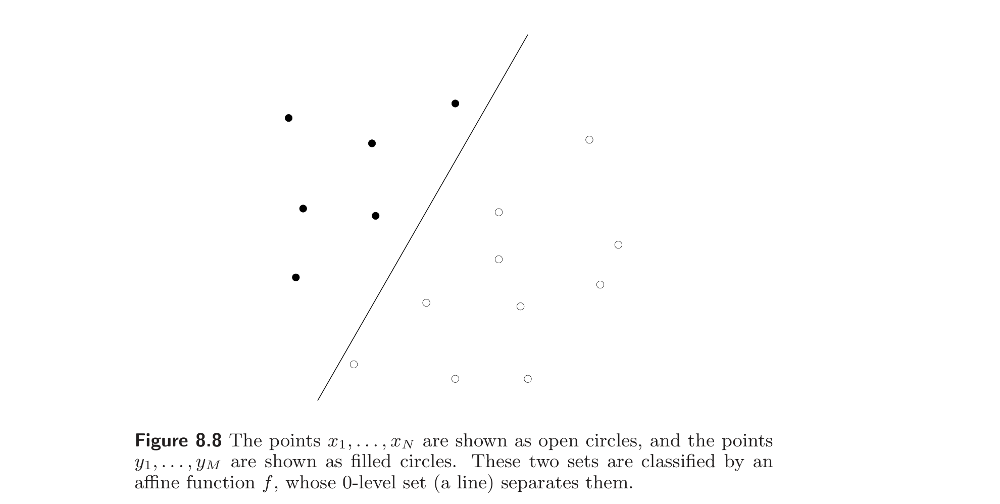
8.6.1 Linear discrimination
8.6.1 线性判别
In linear discrimination, we seek an affine function $f(x) = a^T x - b$ that classifies the points, i.e., $$ a^T x_i - b > 0, \quad i = 1, \ldots, N, \qquad a^T y_i - b < 0, \quad i = 1, \ldots, M. \tag{8.20} $$ Geometrically, we seek a hyperplane that separates the two sets of points. Since the strict inequalities (8.20) are homogeneous in $a$ and $b$, they are feasible if and only if the set of nonstrict linear inequalities $$ \begin{array}{rcl} a^T x_i - b \ge 1, & & i = 1, \ldots, N, \\ a^T y_i - b \le -1, & & i = 1, \ldots, M \end{array} \tag{8.21} $$ (in the variables $a, b$) is feasible. Figure 8.8 shows a simple example of two sets of points and a linear discriminating function.
在线性判别中，寻求一个仿射函数 $f(x) = a^T x - b$ 对点进行分类，即 $$ a^T x_i - b > 0, \quad i = 1, \ldots, N, \qquad a^T y_i - b < 0, \quad i = 1, \ldots, M. \tag{8.20} $$ 几何上即寻求一个分离两组点的超平面。由于严格不等式 (8.20) 对 $a$、$b$ 齐次，它们可行当且仅当非严格线性不等式组 $$ \begin{array}{rcl} a^T x_i - b \ge 1, & & i = 1, \ldots, N, \\ a^T y_i - b \le -1, & & i = 1, \ldots, M \end{array} \tag{8.21} $$ （变量为 $a, b$）可行。图 8.8 给出两组点与一个线性判别函数的简单例子。
Linear discrimination alternative. The strong alternative of the set of strict inequalities (8.20) is the existence of $\lambda, \tilde{\lambda}$ such that $$ \lambda \succeq 0, \quad \tilde{\lambda} \succeq 0, \quad (\lambda, \tilde{\lambda}) \ne 0, \quad \sum_{i=1}^{N} \lambda_i x_i = \sum_{i=1}^{M} \tilde{\lambda}_i y_i, \quad \mathbf{1}^T \lambda = \mathbf{1}^T \tilde{\lambda} \tag{8.22} $$ (see §5.8.3). Using the third and last conditions, we can express these alternative conditions as $$ \lambda \succeq 0, \quad \mathbf{1}^T \lambda = 1, \quad \tilde{\lambda} \succeq 0, \quad \mathbf{1}^T \tilde{\lambda} = 1, \quad \sum_{i=1}^{N} \lambda_i x_i = \sum_{i=1}^{M} \tilde{\lambda}_i y_i $$ (by dividing by $\mathbf{1}^T \lambda$, which is positive, and using the same symbols for the normalized $\lambda$ and $\tilde{\lambda}$). These conditions have a simple geometric interpretation: They state that there is a point in the convex hull of both $\{x_1, \ldots, x_N\}$ and $\{y_1, \ldots, y_M\}$. In other words: the two sets of points can be linearly discriminated (i.e., discriminated by an affine function) if and only if their convex hulls do not intersect. We have seen this result several times before.
线性判别的择一。 严格不等式组 (8.20) 的强择一为存在 $\lambda, \tilde{\lambda}$ 使 $$ \lambda \succeq 0, \quad \tilde{\lambda} \succeq 0, \quad (\lambda, \tilde{\lambda}) \ne 0, \quad \sum_{i=1}^{N} \lambda_i x_i = \sum_{i=1}^{M} \tilde{\lambda}_i y_i, \quad \mathbf{1}^T \lambda = \mathbf{1}^T \tilde{\lambda} \tag{8.22} $$ （见 §5.8.3）。利用第三与最后条件，可将这些择一条件表为 $$ \lambda \succeq 0, \quad \mathbf{1}^T \lambda = 1, \quad \tilde{\lambda} \succeq 0, \quad \mathbf{1}^T \tilde{\lambda} = 1, \quad \sum_{i=1}^{N} \lambda_i x_i = \sum_{i=1}^{M} \tilde{\lambda}_i y_i $$ （除以 $\mathbf{1}^T \lambda$（为正），并对归一化后的 $\lambda$、$\tilde{\lambda}$ 使用同样符号）。这些条件有简单几何解释：它们表明在 $\{x_1, \ldots, x_N\}$ 与 $\{y_1, \ldots, y_M\}$ 的凸包中存在同一点。换言之：两组点可被线性判别（即被仿射函数判别）当且仅当它们的凸包不相交。此结果之前已多次见到。
Robust linear discrimination. The existence of an affine classifying function $f(x) = a^T x - b$ is equivalent to a set of linear inequalities in the variables $a$ and $b$ that define $f$. If the two sets can be linearly discriminated, then there is a polyhedron of affine functions that discriminate them, and we can choose one that optimizes some measure of robustness. We might, for example, seek the function that gives the maximum possible 'gap' between the (positive) values at the points $x_i$ and the (negative) values at the points $y_i$. To do this we have to normalize $a$ and $b$, since otherwise we can scale $a$ and $b$ by a positive constant and make the gap in the values arbitrarily large. This leads to the problem $$ \begin{array}{ll} \text{maximize} & t \\ \text{subject to} & a^T x_i - b \ge t, \quad i = 1, \ldots, N \\ & a^T y_i - b \le -t, \quad i = 1, \ldots, M \\ & \|a\|_2 \le 1, \end{array} \tag{8.23} $$ with variables $a, b$, and $t$. The optimal value $t^\star$ of this convex problem (with linear objective, linear inequalities, and one quadratic inequality) is positive if and only if the two sets of points can be linearly discriminated. In this case the inequality $\|a\|_2 \le 1$ is always tight at the optimum, i.e., we have $\|a^\star\|_2 = 1$. (See exercise 8.23.)
鲁棒线性判别。 仿射分类函数 $f(x) = a^T x - b$ 的存在等价于定义 $f$ 的变量 $a$、$b$ 上的一组线性不等式。若两组点可被线性判别，则存在一个判别它们的仿射函数构成的多面体，可选取一个使某种鲁棒性度量最优。例如，可寻求使点 $x_i$ 处（正）值与点 $y_i$ 处（负）值之间的“间隙”最大的函数。为此需对 $a$、$b$ 归一化，否则可用正常数伸缩 $a$、$b$ 使间隙任意大。于是得问题 $$ \begin{array}{ll} \text{maximize} & t \\ \text{subject to} & a^T x_i - b \ge t, \quad i = 1, \ldots, N \\ & a^T y_i - b \le -t, \quad i = 1, \ldots, M \\ & \|a\|_2 \le 1, \end{array} \tag{8.23} $$ 变量为 $a, b, t$。此凸问题（线性目标、线性不等式加一个二次不等式）的最优值 $t^\star$ 为正当且仅当两组点可被线性判别。此时不等式 $\|a\|_2 \le 1$ 在最优处总紧，即 $\|a^\star\|_2 = 1$（见习题 8.23）。
We can give a simple geometric interpretation of the robust linear discrimination problem (8.23). If $\|a\|_2 = 1$ (as is the case at any optimal point), $a^T x_i - b$ is the Euclidean distance from the point $x_i$ to the separating hyperplane $H = \{z \mid a^T z = b\}$. Similarly, $b - a^T y_i$ is the distance from the point $y_i$ to the hyperplane. Therefore the problem (8.23) finds the hyperplane that separates the two sets of points, and has maximal distance to the sets. In other words, it finds the thickest slab that separates the two sets.
可对鲁棒线性判别问题 (8.23) 给出简单几何解释。若 $\|a\|_2 = 1$（任一最优点处皆如此），则 $a^T x_i - b$ 是点 $x_i$ 到分离超平面 $H = \{z \mid a^T z = b\}$ 的 Euclid 距离。类似地，$b - a^T y_i$ 是点 $y_i$ 到该超平面的距离。故问题 (8.23) 求分离两组点且到两组距离最大的超平面。换言之，求分离两组的最厚板。
As suggested by the example shown in figure 8.9, the optimal value $t^\star$ (which is half the slab thickness) turns out to be half the distance between the convex hulls of the two sets of points. This can be seen clearly from the dual of the robust linear discrimination problem (8.23). The Lagrangian (for the problem of minimizing $-t$) is $$ -t + \sum_{i=1}^{N} u_i(t + b - a^T x_i) + \sum_{i=1}^{M} v_i(t - b + a^T y_i) + \lambda(\|a\|_2 - 1). $$ Minimizing over $b$ and $t$ yields the conditions $\mathbf{1}^T u = 1/2$, $\mathbf{1}^T v = 1/2$. When these hold, we have $$ \begin{array}{rcl} g(u, v, \lambda) & = & \inf_a \left(a^T \left(\sum_{i=1}^{M} v_i y_i - \sum_{i=1}^{N} u_i x_i\right) + \lambda \|a\|_2 - \lambda\right) \end{array} $$ $$ = \left\{\begin{array}{ll} -\lambda & \left\|\sum_{i=1}^{M} v_i y_i - \sum_{i=1}^{N} u_i x_i\right\|_2 \le \lambda \\ -\infty & \text{otherwise}. \end{array}\right. $$ The dual problem can then be written as $$ \begin{array}{ll} \text{maximize} & -\left\|\sum_{i=1}^{M} v_i y_i - \sum_{i=1}^{N} u_i x_i\right\|_2 \\ \text{subject to} & u \succeq 0, \quad \mathbf{1}^T u = 1/2 \\ & v \succeq 0, \quad \mathbf{1}^T v = 1/2. \end{array} $$ We can interpret $2\sum_{i=1}^{N} u_i x_i$ as a point in the convex hull of $\{x_1, \ldots, x_N\}$ and $2\sum_{i=1}^{M} v_i y_i$ as a point in the convex hull of $\{y_1, \ldots, y_M\}$. The dual objective is to minimize (half) the distance between these two points, i.e., find (half) the distance between the convex hulls of the two sets.
如图 8.9 所示，最优值 $t^\star$（板厚的一半）恰为两组点凸包间距离的一半。这可从鲁棒线性判别问题 (8.23) 的对偶清楚看出。Lagrange 函数（对极小化 $-t$ 的问题）为 $$ -t + \sum_{i=1}^{N} u_i(t + b - a^T x_i) + \sum_{i=1}^{M} v_i(t - b + a^T y_i) + \lambda(\|a\|_2 - 1). $$ 对 $b$ 和 $t$ 极小化得条件 $\mathbf{1}^T u = 1/2$，$\mathbf{1}^T v = 1/2$。当它们成立时， $$ \begin{array}{rcl} g(u, v, \lambda) & = & \inf_a \left(a^T \left(\sum_{i=1}^{M} v_i y_i - \sum_{i=1}^{N} u_i x_i\right) + \lambda \|a\|_2 - \lambda\right) \end{array} $$ $$ = \left\{\begin{array}{ll} -\lambda & \left\|\sum_{i=1}^{M} v_i y_i - \sum_{i=1}^{N} u_i x_i\right\|_2 \le \lambda \\ -\infty & \text{否则}. \end{array}\right. $$ 对偶问题可写为 $$ \begin{array}{ll} \text{maximize} & -\left\|\sum_{i=1}^{M} v_i y_i - \sum_{i=1}^{N} u_i x_i\right\|_2 \\ \text{subject to} & u \succeq 0, \quad \mathbf{1}^T u = 1/2 \\ & v \succeq 0, \quad \mathbf{1}^T v = 1/2. \end{array} $$ 可把 $2\sum_{i=1}^{N} u_i x_i$ 解释为 $\{x_1, \ldots, x_N\}$ 凸包中的一点，$2\sum_{i=1}^{M} v_i y_i$ 解释为 $\{y_1, \ldots, y_M\}$ 凸包中的一点。对偶目标即极小化这两点之间的距离（的一半），即求两组凸包之间距离（的一半）。
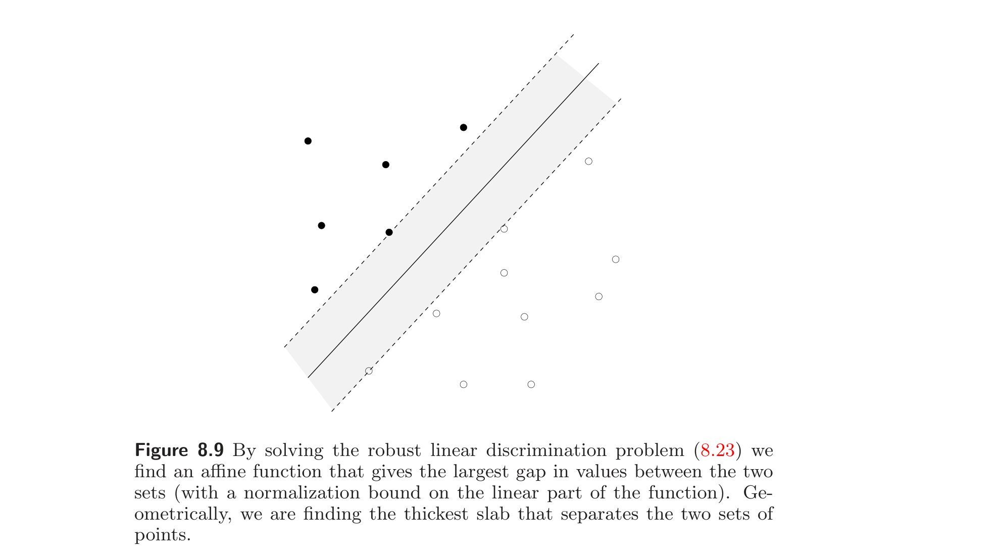
Support vector classifier. When the two sets of points cannot be linearly separated, we might seek an affine function that approximately classifies the points, for example, one that minimizes the number of points misclassified. Unfortunately, this is in general a difficult combinatorial optimization problem. One heuristic for approximate linear discrimination is based on support vector classifiers, which we describe in this section.
支持向量分类器。 当两组点不能线性分离时，可寻求一个近似分类的仿射函数，例如使误分点数最少的函数。不幸的是，这通常是一个困难的组合优化问题。基于支持向量分类器的一种近似线性判别启发式方法在本节描述。
We start with the feasibility problem (8.21). We first relax the constraints by introducing nonnegative variables $u_1, \ldots, u_N$ and $v_1, \ldots, v_M$, and forming the inequalities $$ \begin{array}{rcl} a^T x_i - b \ge 1 - u_i, & & i = 1, \ldots, N, \\ a^T y_i - b \le -(1 - v_i), & & i = 1, \ldots, M. \end{array} \tag{8.24} $$ When $u = v = 0$, we recover the original constraints; by making $u$ and $v$ large enough, these inequalities can always be made feasible. We can think of $u_i$ as a measure of how much the constraint $a^T x_i - b \ge 1$ is violated, and similarly for $v_i$. Our goal is to find $a, b$, and sparse nonnegative $u$ and $v$ that satisfy the inequalities (8.24). As a heuristic for this, we can minimize the sum of the variables $u_i$ and $v_i$, by solving the LP $$ \begin{array}{ll} \text{minimize} & \mathbf{1}^T u + \mathbf{1}^T v \\ \text{subject to} & a^T x_i - b \ge 1 - u_i, \quad i = 1, \ldots, N \\ & a^T y_i - b \le -(1 - v_i), \quad i = 1, \ldots, M \\ & u \succeq 0, \quad v \succeq 0. \end{array} \tag{8.25} $$
从可行性问题 (8.21) 出发。先引入非负变量 $u_1, \ldots, u_N$ 与 $v_1, \ldots, v_M$ 放松约束，形成不等式 $$ \begin{array}{rcl} a^T x_i - b \ge 1 - u_i, & & i = 1, \ldots, N, \\ a^T y_i - b \le -(1 - v_i), & & i = 1, \ldots, M. \end{array} \tag{8.24} $$ 当 $u = v = 0$ 时恢复原约束；将 $u$、$v$ 取得足够大，这些不等式总可变得可行。可把 $u_i$ 视为约束 $a^T x_i - b \ge 1$ 被违反程度的度量，$v_i$ 类似。目标是找满足不等式 (8.24) 的 $a, b$ 及稀疏非负 $u, v$。作为启发式，可通过求解 LP 极小化 $u_i$ 与 $v_i$ 之和： $$ \begin{array}{ll} \text{minimize} & \mathbf{1}^T u + \mathbf{1}^T v \\ \text{subject to} & a^T x_i - b \ge 1 - u_i, \quad i = 1, \ldots, N \\ & a^T y_i - b \le -(1 - v_i), \quad i = 1, \ldots, M \\ & u \succeq 0, \quad v \succeq 0. \end{array} \tag{8.25} $$
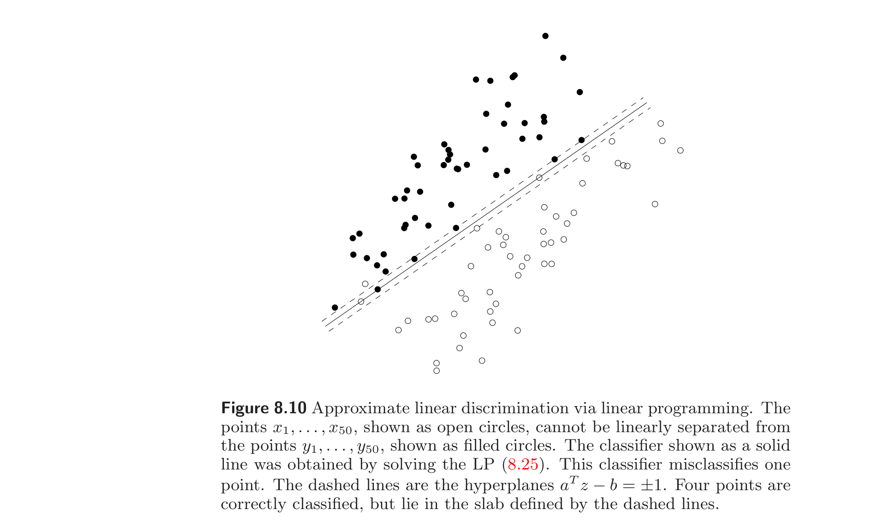
Figure 8.10 shows an example. In this example, the affine function $a^T z - b$ misclassifies 1 out of 100 points. Note however that when $0 < u_i < 1$, the point $x_i$ is correctly classified by the affine function $a^T z - b$, but violates the inequality $a^T x_i - b \ge 1$, and similarly for $y_i$. The objective function in the LP (8.25) can be interpreted as a relaxation of the number of points $x_i$ that violate $a^T x_i - b \ge 1$ plus the number of points $y_i$ that violate $a^T y_i - b \le -1$. In other words, it is a relaxation of the number of points misclassified by the function $a^T z - b$, plus the number of points that are correctly classified but lie in the slab defined by $-1 < a^T z - b < 1$.
图 8.10 给出一个例子。在此例中，仿射函数 $a^T z - b$ 在 100 个点中误分 1 个。注意当 $0 < u_i < 1$ 时，点 $x_i$ 被仿射函数 $a^T z - b$ 正确分类，但违反不等式 $a^T x_i - b \ge 1$，$y_i$ 类似。LP (8.25) 的目标函数可解释为：违反 $a^T x_i - b \ge 1$ 的点 $x_i$ 数与违反 $a^T y_i - b \le -1$ 的点 $y_i$ 数之和的松弛。换言之，它是被 $a^T z - b$ 误分的点数加上被正确分类但落在板 $-1 < a^T z - b < 1$ 内的点数的松弛。
More generally, we can consider the trade-off between the number of misclassified points, and the width of the slab $\{z \mid -1 \le a^T z - b \le 1\}$, which is given by $2/\|a\|_2$. The standard support vector classifier for the sets $\{x_1, \ldots, x_N\}$, $\{y_1, \ldots, y_M\}$ is defined as the solution of $$ \begin{array}{ll} \text{minimize} & \|a\|_2 + \gamma(\mathbf{1}^T u + \mathbf{1}^T v) \\ \text{subject to} & a^T x_i - b \ge 1 - u_i, \quad i = 1, \ldots, N \\ & a^T y_i - b \le -(1 - v_i), \quad i = 1, \ldots, M \\ & u \succeq 0, \quad v \succeq 0, \end{array} $$ The first term is proportional to the inverse of the width of the slab defined by $-1 \le a^T z - b \le 1$. The second term has the same interpretation as above, i.e., it is a convex relaxation for the number of misclassified points (including the points in the slab). The parameter $\gamma$, which is positive, gives the relative weight of the number of misclassified points (which we want to minimize), compared to the width of the slab (which we want to maximize). Figure 8.11 shows an example.
更一般地，可考虑误分点数与板 $\{z \mid -1 \le a^T z - b \le 1\}$ 的宽度（由 $2/\|a\|_2$ 给出）之间的权衡。两组 $\{x_1, \ldots, x_N\}$、$\{y_1, \ldots, y_M\}$ 的标准支持向量分类器定义为 $$ \begin{array}{ll} \text{minimize} & \|a\|_2 + \gamma(\mathbf{1}^T u + \mathbf{1}^T v) \\ \text{subject to} & a^T x_i - b \ge 1 - u_i, \quad i = 1, \ldots, N \\ & a^T y_i - b \le -(1 - v_i), \quad i = 1, \ldots, M \\ & u \succeq 0, \quad v \succeq 0 \end{array} $$ 的解。第一项正比于板 $-1 \le a^T z - b \le 1$ 宽度的倒数。第二项解释同上，即误分点数（含板内的点）的凸松弛。参数 $\gamma$（为正）给出误分点数（希望极小化）相对于板宽（希望极大化）的相对权重。图 8.11 给出一个例子。
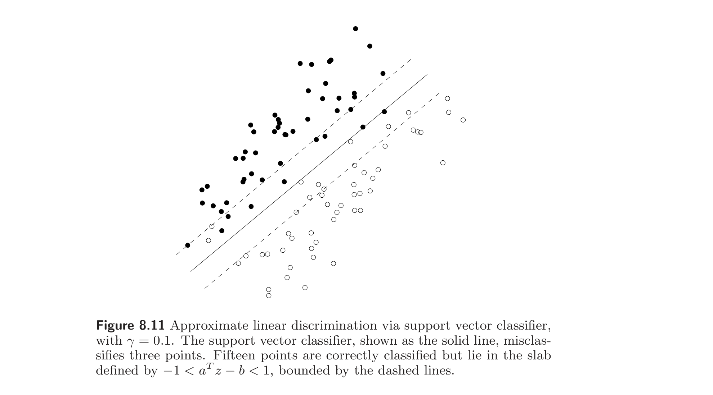
Approximate linear discrimination via logistic modeling. Another approach to finding an affine function that approximately classifies two sets of points that cannot be linearly separated is based on the logistic model described in §7.1.1. We start by fitting the two sets of points with a logistic model. Suppose $z$ is a random variable with values 0 or 1, with a distribution that depends on some (deterministic) explanatory variable $u \in \mathbb{R}^n$, via a logistic model of the form $$ \begin{array}{rcl} \mathbf{prob}(z = 1) & = & \exp(a^T u - b)/(1 + \exp(a^T u - b)) \\ \mathbf{prob}(z = 0) & = & 1/(1 + \exp(a^T u - b)). \end{array} \tag{8.26} $$ Now we assume that the given sets of points, $\{x_1, \ldots, x_N\}$ and $\{y_1, \ldots, y_M\}$, arise as samples from the logistic model. Specifically, $\{x_1, \ldots, x_N\}$ are the values of $u$ for the $N$ samples for which $z = 1$, and $\{y_1, \ldots, y_M\}$ are the values of $u$ for the $M$ samples for which $z = 0$. (This allows us to have $x_i = y_j$, which would rule out discrimination between the two sets. In a logistic model, it simply means that we have two samples, with the same value of explanatory variable but different outcomes.)
通过 logistic 建模的近似线性判别。 对不能线性分离的两组点求近似分类仿射函数的另一种方法基于 §7.1.1 描述的 logistic 模型。先用 logistic 模型拟合两组点。设 $z$ 为取值 0 或 1 的随机变量，其分布依赖于某（确定性）解释变量 $u \in \mathbb{R}^n$，形式为 $$ \begin{array}{rcl} \mathbf{prob}(z = 1) & = & \exp(a^T u - b)/(1 + \exp(a^T u - b)) \\ \mathbf{prob}(z = 0) & = & 1/(1 + \exp(a^T u - b)). \end{array} \tag{8.26} $$ 现假设给定两组点 $\{x_1, \ldots, x_N\}$ 与 $\{y_1, \ldots, y_M\}$ 来自该 logistic 模型的样本。具体地，$\{x_1, \ldots, x_N\}$ 是 $z = 1$ 的 $N$ 个样本对应的 $u$ 值，$\{y_1, \ldots, y_M\}$ 是 $z = 0$ 的 $M$ 个样本对应的 $u$ 值。（这允许 $x_i = y_j$，后者会排除两组间的判别。在 logistic 模型中，这仅意味着有两个样本解释变量相同但结果不同。）
We can determine $a$ and $b$ by maximum likelihood estimation from the observed samples, by solving the convex optimization problem $$ \begin{array}{ll} \text{minimize} & -l(a, b) \end{array} \tag{8.27} $$ with variables $a, b$, where $l$ is the log-likelihood function $$ l(a, b) = \sum_{i=1}^{N}(a^T x_i - b) - \sum_{i=1}^{N} \log(1 + \exp(a^T x_i - b)) - \sum_{i=1}^{M} \log(1 + \exp(a^T y_i - b)) $$ (see §7.1.1). If the two sets of points can be linearly separated, i.e., if there exist $a, b$ with $a^T x_i > b$ and $a^T y_i < b$, then the optimization problem (8.27) is unbounded below.
由观测样本通过极大似然估计确定 $a$、$b$，即求解凸优化问题 $$ \begin{array}{ll} \text{minimize} & -l(a, b) \end{array} \tag{8.27} $$ 变量为 $a, b$，其中 $l$ 为对数似然函数 $$ l(a, b) = \sum_{i=1}^{N}(a^T x_i - b) - \sum_{i=1}^{N} \log(1 + \exp(a^T x_i - b)) - \sum_{i=1}^{M} \log(1 + \exp(a^T y_i - b)) $$ （见 §7.1.1）。若两组点可线性分离，即存在 $a, b$ 使 $a^T x_i > b$ 且 $a^T y_i < b$，则优化问题 (8.27) 下方无界。
Once we find the maximum likelihood values of $a$ and $b$, we can form a linear classifier $f(x) = a^T x - b$ for the two sets of points. This classifier has the following property: Assuming the data points are in fact generated from a logistic model with parameters $a$ and $b$, it has the smallest probability of misclassification, over all linear classifiers.
求得 $a$、$b$ 的极大似然值后，可构成两组点的线性分类器 $f(x) = a^T x - b$。该分类器具有如下性质：假设数据点确实由参数为 $a$、$b$ 的 logistic 模型生成，则它在所有线性分类器中误分概率最小。
The hyperplane $a^T u = b$ corresponds to the points where $\mathbf{prob}(z = 1) = 1/2$, i.e., the two outcomes are equally likely. An example is shown in figure 8.12.
超平面 $a^T u = b$ 对应 $\mathbf{prob}(z = 1) = 1/2$ 的点，即两种结果等概率的点。一例如图 8.12 所示。
Remark 8.1 Bayesian interpretation. Let $x$ and $z$ be two random variables, taking values in $\mathbb{R}^n$ and in $\{0, 1\}$, respectively. We assume that $$ \mathbf{prob}(z = 1) = \mathbf{prob}(z = 0) = 1/2, $$ and we denote by $p_0(x)$ and $p_1(x)$ the conditional probability densities of $x$, given $z = 0$ and given $z = 1$, respectively. We assume that $p_0$ and $p_1$ satisfy $$ \frac{p_1(x)}{p_0(x)} = e^{a^T x - b} $$ for some $a$ and $b$. Many common distributions satisfy this property. For example, $p_0$ and $p_1$ could be two normal densities on $\mathbb{R}^n$ with equal covariance matrices and different means, or they could be two exponential densities on $\mathbb{R}^n_+$.
注 8.1 贝叶斯解释。 设 $x$ 与 $z$ 为两个随机变量，分别取值于 $\mathbb{R}^n$ 和 $\{0, 1\}$。设 $$ \mathbf{prob}(z = 1) = \mathbf{prob}(z = 0) = 1/2, $$ 并以 $p_0(x)$、$p_1(x)$ 分别记给定 $z = 0$、$z = 1$ 时 $x$ 的条件概率密度。设 $p_0$、$p_1$ 满足 $$ \frac{p_1(x)}{p_0(x)} = e^{a^T x - b} $$ 对某 $a$、$b$。许多常见分布满足此性质。例如 $p_0$、$p_1$ 可以是 $\mathbb{R}^n$ 上协方差矩阵相同、均值不同的两个正态密度，或 $\mathbb{R}^n_+$ 上两个指数密度。
It follows from Bayes' rule that $$ \begin{array}{rcl} \mathbf{prob}(z = 1 \mid x = u) & = & \frac{p_1(u)}{p_1(u) + p_0(u)} \\ \mathbf{prob}(z = 0 \mid x = u) & = & \frac{p_0(u)}{p_1(u) + p_0(u)}, \end{array} $$ from which we obtain $$ \mathbf{prob}(z = 1 \mid x = u) = \frac{\exp(a^T u - b)}{1 + \exp(a^T u - b)} \qquad \mathbf{prob}(z = 0 \mid x = u) = \frac{1}{1 + \exp(a^T u - b)}. $$ The logistic model (8.26) can therefore be interpreted as the posterior distribution of $z$, given that $x = u$.
由 Bayes 法则得 $$ \begin{array}{rcl} \mathbf{prob}(z = 1 \mid x = u) & = & \frac{p_1(u)}{p_1(u) + p_0(u)} \\ \mathbf{prob}(z = 0 \mid x = u) & = & \frac{p_0(u)}{p_1(u) + p_0(u)}, \end{array} $$ 由此得 $$ \mathbf{prob}(z = 1 \mid x = u) = \frac{\exp(a^T u - b)}{1 + \exp(a^T u - b)} \qquad \mathbf{prob}(z = 0 \mid x = u) = \frac{1}{1 + \exp(a^T u - b)}. $$ 故 logistic 模型 (8.26) 可解释为给定 $x = u$ 时 $z$ 的后验分布。
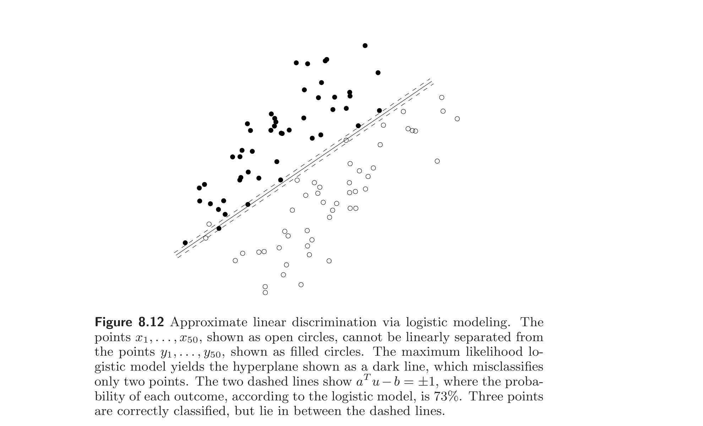
8.6.2 Nonlinear discrimination
8.6.2 非线性判别
We can just as well seek a nonlinear function $f$, from a given subspace of functions, that is positive on one set and negative on another: $$ f(x_i) > 0, \quad i = 1, \ldots, N, \qquad f(y_i) < 0, \quad i = 1, \ldots, M. $$ Provided $f$ is linear (or affine) in the parameters that define it, these inequalities can be solved in exactly the same way as in linear discrimination. In this section we examine some interesting special cases.
同样可寻求一个非线性函数 $f$（属于某给定函数子空间），使它在第一组上为正、在第二组上为负： $$ f(x_i) > 0, \quad i = 1, \ldots, N, \qquad f(y_i) < 0, \quad i = 1, \ldots, M. $$ 只要 $f$ 对定义它的参数是线性（或仿射）的，这些不等式就可完全按线性判别的方式求解。本节考察若干有趣的特殊情形。
Quadratic discrimination. Suppose we take $f$ to be quadratic: $f(x) = x^T P x + q^T x + r$. The parameters $P \in \mathbf{S}^n$, $q \in \mathbb{R}^n$, $r \in \mathbb{R}$ must satisfy the inequalities $$ \begin{array}{rcl} x_i^T P x_i + q^T x_i + r > 0, & & i = 1, \ldots, N \\ y_i^T P y_i + q^T y_i + r < 0, & & i = 1, \ldots, M, \end{array} $$ which is a set of strict linear inequalities in the variables $P, q, r$. As in linear discrimination, we note that $f$ is homogeneous in $P, q$, and $r$, so we can find a solution to the strict inequalities by solving the nonstrict feasibility problem $$ \begin{array}{rcl} x_i^T P x_i + q^T x_i + r \ge 1, & & i = 1, \ldots, N \\ y_i^T P y_i + q^T y_i + r \le -1, & & i = 1, \ldots, M. \end{array} $$ The separating surface $\{z \mid z^T P z + q^T z + r = 0\}$ is a quadratic surface, and the two classification regions $$ \{z \mid z^T P z + q^T z + r \le 0\}, \qquad \{z \mid z^T P z + q^T z + r \ge 0\}, $$ are defined by quadratic inequalities. Solving the quadratic discrimination problem, then, is the same as determining whether the two sets of points can be separated by a quadratic surface.
二次判别。 设取 $f$ 为二次的：$f(x) = x^T P x + q^T x + r$。参数 $P \in \mathbf{S}^n$、$q \in \mathbb{R}^n$、$r \in \mathbb{R}$ 须满足不等式 $$ \begin{array}{rcl} x_i^T P x_i + q^T x_i + r > 0, & & i = 1, \ldots, N \\ y_i^T P y_i + q^T y_i + r < 0, & & i = 1, \ldots, M, \end{array} $$ 这是关于变量 $P, q, r$ 的一组严格线性不等式。如线性判别中那样，注意 $f$ 对 $P, q, r$ 齐次，故可通过求解非严格可行性问题 $$ \begin{array}{rcl} x_i^T P x_i + q^T x_i + r \ge 1, & & i = 1, \ldots, N \\ y_i^T P y_i + q^T y_i + r \le -1, & & i = 1, \ldots, M \end{array} $$ 求严格不等式的解。分离曲面 $\{z \mid z^T P z + q^T z + r = 0\}$ 是二次曲面，两个分类区域 $$ \{z \mid z^T P z + q^T z + r \le 0\}, \qquad \{z \mid z^T P z + q^T z + r \ge 0\}, $$ 由二次不等式定义。故求解二次判别问题等价于判定两组点能否被一个二次曲面分离。
We can impose conditions on the shape of the separating surface or classification regions by adding constraints on $P, q$, and $r$. For example, we can require that $P \prec 0$, which means the separating surface is ellipsoidal. More specifically, it means that we seek an ellipsoid that contains all the points $x_1, \ldots, x_N$, but none of the points $y_1, \ldots, y_M$. This quadratic discrimination problem can be solved as an SDP feasibility problem $$ \begin{array}{ll} \text{find} & P, q, r \\ \text{subject to} & x_i^T P x_i + q^T x_i + r \ge 1, \quad i = 1, \ldots, N \\ & y_i^T P y_i + q^T y_i + r \le -1, \quad i = 1, \ldots, M \\ & P \preceq -I, \end{array} $$ with variables $P \in \mathbf{S}^n$, $q \in \mathbb{R}^n$, and $r \in \mathbb{R}$. (Here we use homogeneity in $P, q, r$ to express the constraint $P \prec 0$ as $P \preceq -I$.) Figure 8.13 shows an example.
可通过对 $P, q, r$ 添加约束对分离曲面或分类区域的形状施加条件。例如可要求 $P \prec 0$，这意味着分离曲面是椭球面。更具体地，即寻求一个包含所有点 $x_1, \ldots, x_N$ 但不含任一点 $y_1, \ldots, y_M$ 的椭球。该二次判别问题可作为 SDP 可行性问题求解： $$ \begin{array}{ll} \text{find} & P, q, r \\ \text{subject to} & x_i^T P x_i + q^T x_i + r \ge 1, \quad i = 1, \ldots, N \\ & y_i^T P y_i + q^T y_i + r \le -1, \quad i = 1, \ldots, M \\ & P \preceq -I, \end{array} $$ 变量为 $P \in \mathbf{S}^n$、$q \in \mathbb{R}^n$、$r \in \mathbb{R}$。（此处利用 $P, q, r$ 的齐次性将约束 $P \prec 0$ 表为 $P \preceq -I$。）图 8.13 给出一个例子。
Polynomial discrimination. We consider the set of polynomials on $\mathbb{R}^n$ with degree less than or equal to $d$: $$ f(x) = \sum_{i_1 + \cdots + i_n \le d} a_{i_1 \cdots i_d} x_1^{i_1} \cdots x_n^{i_n}. $$ We can determine whether or not two sets $\{x_1, \ldots, x_N\}$ and $\{y_1, \ldots, y_M\}$ can be separated by such a polynomial by solving a set of linear inequalities in the variables $a_{i_1 \cdots i_d}$. Geometrically, we are checking whether the two sets can be separated by an algebraic surface (defined by a polynomial of degree less than or equal to $d$).
多项式判别。 考虑 $\mathbb{R}^n$ 上次数不超过 $d$ 的多项式集合： $$ f(x) = \sum_{i_1 + \cdots + i_n \le d} a_{i_1 \cdots i_d} x_1^{i_1} \cdots x_n^{i_n}. $$ 通过求解关于变量 $a_{i_1 \cdots i_d}$ 的一组线性不等式，可判定两组 $\{x_1, \ldots, x_N\}$ 与 $\{y_1, \ldots, y_M\}$ 能否被这样的多项式分离。几何上即检查两组能否被一个代数曲面（由次数不超过 $d$ 的多项式定义）分离。
As an extension, the problem of determining the minimum degree polynomial on $\mathbb{R}^n$ that separates two sets of points can be solved via quasiconvex programming, since the degree of a polynomial is a quasiconvex function of the coefficients. This can be carried out by bisection on $d$, solving a feasibility linear program at each step. An example is shown in figure 8.14.
作为推广，求分离两组点的 $\mathbb{R}^n$ 上最低次多项式的问题可通过拟凸规划求解，因为多项式的次数是系数的拟凸函数。可通过对 $d$ 二分、每步求解一个可行性线性规划来实现。一例如图 8.14 所示。
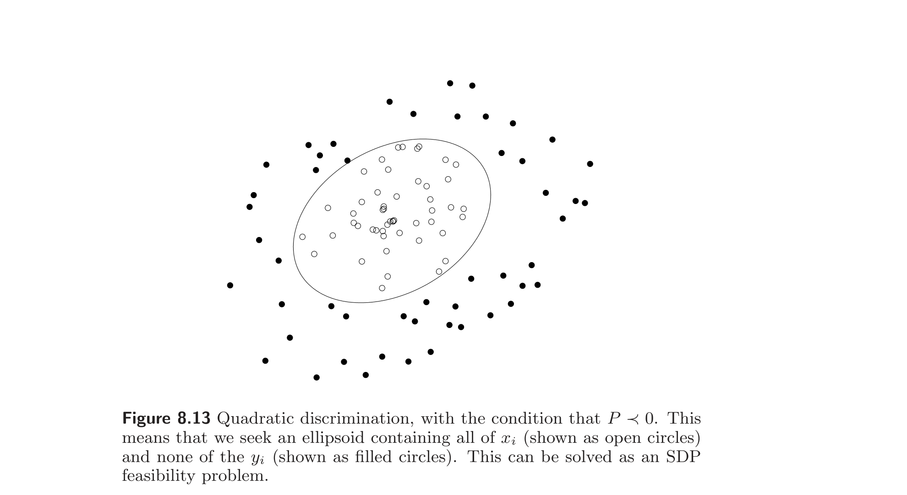
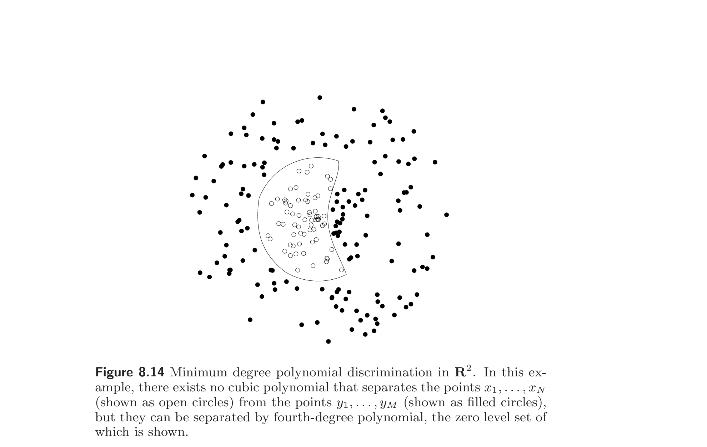
8.7 Placement and location
8.7 布局与定位
In this section we discuss a few variations on the following problem. We have $N$ points in $\mathbb{R}^2$ or $\mathbb{R}^3$, and a list of pairs of points that must be connected by links. The positions of some of the $N$ points are fixed; our task is to determine the positions of the remaining points, i.e., to place the remaining points. The objective is to place the points so that some measure of the total interconnection length of the links is minimized, subject to some additional constraints on the positions.
本节讨论以下问题的若干变体。有 $N$ 个 $\mathbb{R}^2$ 或 $\mathbb{R}^3$ 中的点，以及一个须以链路连接的点对列表。其中部分点的位置固定；任务是确定其余点的位置，即放置其余点。目标是放置各点使链路总互连长度的某种度量最小，并满足位置上的某些附加约束。
As an example application, we can think of the points as locations of plants or warehouses of a company, and the links as the routes over which goods must be shipped. The goal is to find locations that minimize the total transportation cost. In another application, the points represent the position of modules or cells on an integrated circuit, and the links represent wires that connect pairs of cells. Here the goal might be to place the cells in such a way that the total length of wire used to interconnect the cells is minimized.
作为应用例子，可把点想象为某公司工厂或仓库的位置，把链路想象为必须运送货物的路线。目标是找使总运输成本最小的位置。在另一应用中，点表示集成电路中模块或单元的位置，链路表示连接各对单元的导线。此处目标可能是以使单元间互连所用导线总长最小的方式放置单元。
The problem can be described in terms of an undirected graph with $N$ nodes, representing the $N$ points. With each node we associate a variable $x_i \in \mathbb{R}^k$, where $k = 2$ or $k = 3$, which represents its location or position. The problem is to minimize $$ \sum_{(i,j) \in \mathcal{A}} f_{ij}(x_i, x_j) $$ where $\mathcal{A}$ is the set of all links in the graph, and $f_{ij} : \mathbb{R}^k \times \mathbb{R}^k \to \mathbb{R}$ is a cost function associated with arc $(i, j)$. (Alternatively, we can sum over all $i$ and $j$, or over $i < j$, and simply set $f_{ij} = 0$ when links $i$ and $j$ are not connected.) Some of the coordinate vectors $x_i$ are given. The optimization variables are the remaining coordinates. Provided the functions $f_{ij}$ are convex, this is a convex optimization problem.
该问题可用一个含 $N$ 个节点（代表 $N$ 个点）的无向图描述。对每个节点关联变量 $x_i \in \mathbb{R}^k$（$k = 2$ 或 $k = 3$），表示其位置。问题为极小化 $$ \sum_{(i,j) \in \mathcal{A}} f_{ij}(x_i, x_j) $$ 其中 $\mathcal{A}$ 为图中所有链路的集合，$f_{ij} : \mathbb{R}^k \times \mathbb{R}^k \to \mathbb{R}$ 为与弧 $(i, j)$ 关联的成本函数。（或者对所有 $i$、$j$ 或 $i < j$ 求和，并当 $i$、$j$ 未连接时令 $f_{ij} = 0$。）部分坐标向量 $x_i$ 给定，优化变量为其余坐标。只要 $f_{ij}$ 凸，这就是凸优化问题。
8.7.1 Linear facility location problems
8.7.1 线性设施选址问题
In the simplest version of the problem the cost associated with arc $(i, j)$ is the distance between nodes $i$ and $j$: $f_{ij}(x_i, x_j) = \|x_i - x_j\|$, i.e., we minimize $$ \sum_{(i,j) \in \mathcal{A}} \|x_i - x_j\|. $$ We can use any norm, but the most common applications involve the Euclidean norm or the $\ell_1$-norm. For example, in circuit design it is common to route the wires between cells along piecewise-linear paths, with each segment either horizontal or vertical. (This is called Manhattan routing, since paths along the streets in a city with a rectangular grid are also piecewise-linear, with each street aligned with one of two orthogonal axes.) In this case, the length of wire required to connect cell $i$ and cell $j$ is given by $\|x_i - x_j\|_1$.
在最简单版本中，弧 $(i, j)$ 关联的成本是节点 $i$ 与 $j$ 之间的距离：$f_{ij}(x_i, x_j) = \|x_i - x_j\|$，即极小化 $$ \sum_{(i,j) \in \mathcal{A}} \|x_i - x_j\|. $$ 可用任意范数，但最常见的是 Euclid 范数或 $\ell_1$ 范数。例如在电路设计中，常将单元间的导线沿分段线性路径布线，每段或水平或垂直。（这称为Manhattan 布线，因为在具有矩形网格的城市中沿街道的路径也是分段线性的，每条街沿两正交轴之一走向。）此时连接单元 $i$ 与 $j$ 所需导线长为 $\|x_i - x_j\|_1$。
We can include nonnegative weights that reflect differences in the cost per unit distance along different arcs: $$ \sum_{(i,j) \in \mathcal{A}} w_{ij} \|x_i - x_j\|. $$ By assigning a weight $w_{ij} = 0$ to pairs of nodes that are not connected, we can express this problem more simply using the objective $$ \sum_{i < j} w_{ij} \|x_i - x_j\|. \tag{8.28} $$ This placement problem is convex.
可加入非负权重以反映不同弧上单位距离成本的差异： $$ \sum_{(i,j) \in \mathcal{A}} w_{ij} \|x_i - x_j\|. $$ 对未连接的点对赋权重 $w_{ij} = 0$，问题可更简单地用目标 $$ \sum_{i < j} w_{ij} \|x_i - x_j\|. \tag{8.28} $$ 表达。此布局问题是凸的。
Example 8.4 One free point. Consider the case where only one point $(u, v) \in \mathbb{R}^2$ is free, and we minimize the sum of the distances to fixed points $(u_1, v_1), \ldots, (u_K, v_K)$.
例 8.4 一个自由点。 考虑仅一点 $(u, v) \in \mathbb{R}^2$ 自由，且极小化到固定点 $(u_1, v_1), \ldots, (u_K, v_K)$ 的距离之和的情形。
$\ell_1$-norm. We can find a point that minimizes $$ \sum_{i=1}^{K} (|u - u_i| + |v - v_i|) $$ analytically. An optimal point is any median of the fixed points. In other words, $u$ can be taken to be any median of the points $\{u_1, \ldots, u_K\}$, and $v$ can be taken to be any median of the points $\{v_1, \ldots, v_K\}$. (If $K$ is odd, the minimizer is unique; if $K$ is even, there can be a rectangle of optimal points.)
Euclidean norm. The point $(u, v)$ that minimizes the sum of the Euclidean distances, $$ \sum_{i=1}^{K} ((u - u_i)^2 + (v - v_i)^2)^{1/2}, $$ is called the Weber point of the given fixed points.
$\ell_1$ 范数。可解析地求极小化 $$ \sum_{i=1}^{K} (|u - u_i| + |v - v_i|) $$ 的点。一个最优点是固定点的任一中位数。换言之，$u$ 可取 $\{u_1, \ldots, u_K\}$ 的任一中位数，$v$ 可取 $\{v_1, \ldots, v_K\}$ 的任一中位数。（$K$ 为奇时极小点唯一；$K$ 为偶时可能有一个最优点的矩形。）
Euclid 范数。极小化 Euclid 距离之和 $$ \sum_{i=1}^{K} ((u - u_i)^2 + (v - v_i)^2)^{1/2} $$ 的点 $(u, v)$ 称为给定固定点的 Weber 点。
8.7.2 Placement constraints
8.7.2 布局约束
We now list some interesting constraints that can be added to the basic placement problem, preserving convexity. We can require some positions $x_i$ to lie in a specified convex set, e.g., a particular line, interval, square, or ellipsoid. We can constrain the relative position of one point with respect to one or more other points, for example, by limiting the distance between a pair of points. We can impose relative position constraints, e.g., that one point must lie to the left of another point.
下面列出若干可加到基本布局问题且保持凸性的有趣约束。可要求某些位置 $x_i$ 落在指定凸集中，如某条直线、区间、正方形或椭球。可约束一点相对于一点或多点的相对位置，例如限制一对点之间的距离。可施加相对位置约束，如一点必须在另一点之左。
The bounding box of a group of points is the smallest rectangle that contains the points. We can impose a constraint that limits the points $x_1, \ldots, x_p$ (say) to lie in a bounding box with perimeter not exceeding $P_{\max}$, by adding the constraints $$ u \preceq x_i \preceq v, \quad i = 1, \ldots, p, \qquad 2\mathbf{1}^T(v - u) \le P_{\max}, $$ where $u, v$ are additional variables.
一组点的包围盒是包含这些点的最小矩形。可加约束限制点 $x_1, \ldots, x_p$（例如）位于周长不超过 $P_{\max}$ 的包围盒内，即添加约束 $$ u \preceq x_i \preceq v, \quad i = 1, \ldots, p, \qquad 2\mathbf{1}^T(v - u) \le P_{\max}, $$ 其中 $u, v$ 为附加变量。
8.7.3 Nonlinear facility location problems
8.7.3 非线性设施选址问题
More generally, we can associate a cost with each arc that is a nonlinear increasing function of the length, i.e., $$ \begin{array}{ll} \text{minimize} & \sum_{i < j} w_{ij} h(\|x_i - x_j\|) \end{array} $$ where $h$ is an increasing (on $\mathbb{R}_+$) and convex function, and $w_{ij} \ge 0$. We call this a nonlinear placement or nonlinear facility location problem.
更一般地，可给每条弧关联一个长度非线性递增函数的成本，即 $$ \begin{array}{ll} \text{minimize} & \sum_{i < j} w_{ij} h(\|x_i - x_j\|) \end{array} $$ 其中 $h$ 是（在 $\mathbb{R}_+$ 上）递增的凸函数，$w_{ij} \ge 0$。我们称之为非线性布局或非线性设施选址问题。
One common example uses the Euclidean norm, and the function $h(z) = z^2$, i.e., we minimize $$ \sum_{i < j} w_{ij} \|x_i - x_j\|_2^2. $$ This is called a quadratic placement problem. The quadratic placement problem can be solved analytically when the only constraints are linear equalities; it can be solved as a QP if the constraints are linear equalities and inequalities.
一个常见例子用 Euclid 范数和函数 $h(z) = z^2$，即极小化 $$ \sum_{i < j} w_{ij} \|x_i - x_j\|_2^2. $$ 这称为二次布局问题。当约束仅为线性等式时，二次布局问题可解析求解；当约束为线性等式与不等式时，可作为 QP 求解。
Example 8.5 One free point. Consider the case where only one point $x$ is free, and we minimize the sum of the squares of the Euclidean distances to fixed points $x_1, \ldots, x_K$, $$ \|x - x_1\|_2^2 + \|x - x_2\|_2^2 + \cdots + \|x - x_K\|_2^2. $$ Taking derivatives, we see that the optimal $x$ is given by $$ (1/K)(x_1 + x_2 + \cdots + x_K), $$ i.e., the average of the fixed points.
例 8.5 一个自由点。 考虑仅一点 $x$ 自由，且极小化到固定点 $x_1, \ldots, x_K$ 的 Euclid 距离平方之和 $$ \|x - x_1\|_2^2 + \|x - x_2\|_2^2 + \cdots + \|x - x_K\|_2^2 $$ 的情形。求导可见最优 $x$ 为 $$ (1/K)(x_1 + x_2 + \cdots + x_K), $$ 即固定点的平均。
Some other interesting possibilities are the 'deadzone' function $h$ with deadzone width $2\gamma$, defined as $$ h(z) = \left\{\begin{array}{ll} 0 & |z| \le \gamma \\ |z - \gamma| & |z| \ge \gamma, \end{array}\right. $$ and the 'quadratic-linear' function $h$, defined as $$ h(z) = \left\{\begin{array}{ll} z^2 & |z| \le \gamma \\ 2\gamma|z| - \gamma^2 & |z| \ge \gamma. \end{array}\right. $$
其他一些有趣的选择是宽度为 $2\gamma$ 的“死区”函数 $h$，定义为 $$ h(z) = \left\{\begin{array}{ll} 0 & |z| \le \gamma \\ |z - \gamma| & |z| \ge \gamma, \end{array}\right. $$ 以及“二次–线性”函数 $h$，定义为 $$ h(z) = \left\{\begin{array}{ll} z^2 & |z| \le \gamma \\ 2\gamma|z| - \gamma^2 & |z| \ge \gamma. \end{array}\right. $$
Example 8.6 We consider a placement problem in $\mathbb{R}^2$ with 6 free points, 8 fixed points, and 27 links. Figures 8.15–8.17 show the optimal solutions for the criteria $$ \sum_{(i,j) \in \mathcal{A}} \|x_i - x_j\|_2, \qquad \sum_{(i,j) \in \mathcal{A}} \|x_i - x_j\|_2^2, \qquad \sum_{(i,j) \in \mathcal{A}} \|x_i - x_j\|_2^4, $$ i.e., using the penalty functions $h(z) = z$, $h(z) = z^2$, and $h(z) = z^4$. The figures also show the resulting distributions of the link lengths.
例 8.6 考虑 $\mathbb{R}^2$ 中含 6 个自由点、8 个固定点、27 条链路的布局问题。图 8.15–8.17 给出准则 $$ \sum_{(i,j) \in \mathcal{A}} \|x_i - x_j\|_2, \qquad \sum_{(i,j) \in \mathcal{A}} \|x_i - x_j\|_2^2, \qquad \sum_{(i,j) \in \mathcal{A}} \|x_i - x_j\|_2^4, $$ 即用惩罚函数 $h(z) = z$、$h(z) = z^2$、$h(z) = z^4$ 时的最优解。各图还显示了所得链路长度的分布。
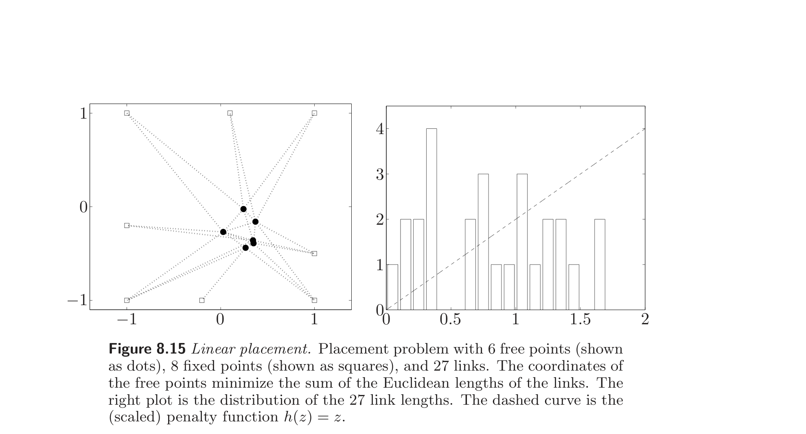
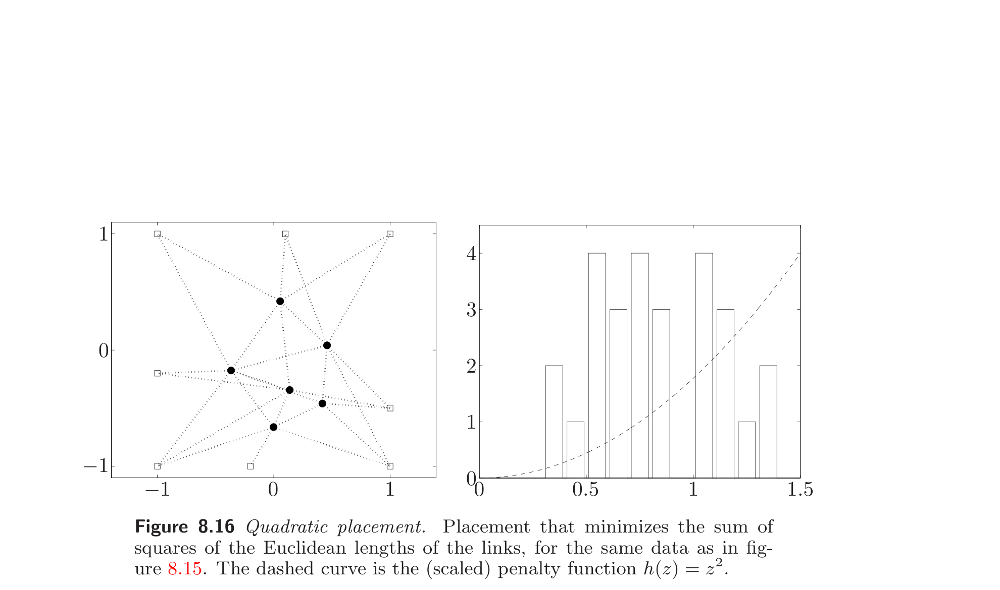
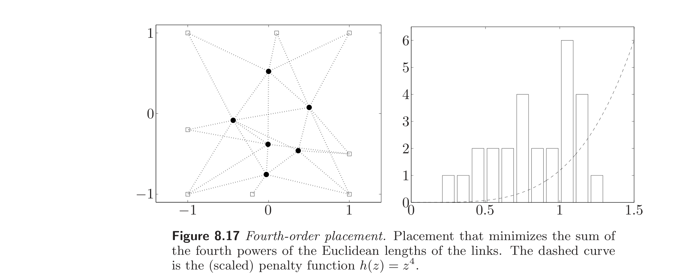
Comparing the results, we see that the linear placement concentrates the free points in a small area, while the quadratic and fourth-order placements spread the points over larger areas. The linear placement includes many very short links, and a few very long ones (3 lengths under 0.2 and 2 lengths above 1.5.). The quadratic penalty function puts a higher penalty on long lengths relative to short lengths, and for lengths under 0.1, the penalty is almost negligible. As a result, the maximum length is shorter (less than 1.4), but we also have fewer short links. The fourth-order function puts an even higher penalty on long lengths, and has a wider interval (between zero and about 0.4) where it is negligible. As a result, the maximum length is shorter than for the quadratic placement, but we also have more lengths close to the maximum.
比较结果可见，线性布局将自由点集中在小区域内，而二次与四阶布局将点分布在更大区域上。线性布局含许多很短的链路和少数很长的链路（3 条长度低于 0.2，2 条长度高于 1.5）。二次惩罚函数对长长度相对短长度施加更高惩罚，且长度低于 0.1 时惩罚几乎可忽略。结果最大长度更短（小于 1.4），但短链路也更少。四阶函数对长长度施加更高惩罚，且在 0 到约 0.4 的更宽区间内可忽略。结果最大长度比二次布局更短，但接近最大值的长度更多。
8.7.4 Location problems with path constraints
8.7.4 带路径约束的定位问题
Path constraints. A $p$-link path along the points $x_1, \ldots, x_N$ is described by a sequence of nodes, $i_0, \ldots, i_p \in \{1, \ldots, N\}$. The length of the path is given by $$ \|x_{i_1} - x_{i_0}\| + \|x_{i_2} - x_{i_1}\| + \cdots + \|x_{i_p} - x_{i_{p-1}}\|, $$ which is a convex function of $x_1, \ldots, x_N$, so imposing an upper bound on the length of a path is a convex constraint. Several interesting placement problems involve path constraints, or have an objective based on path lengths. We describe one typical example, in which the objective is based on a maximum path length over a set of paths.
路径约束。 沿点 $x_1, \ldots, x_N$ 的 $p$-链路路径由一列节点 $i_0, \ldots, i_p \in \{1, \ldots, N\}$ 描述。路径长度为 $$ \|x_{i_1} - x_{i_0}\| + \|x_{i_2} - x_{i_1}\| + \cdots + \|x_{i_p} - x_{i_{p-1}}\|, $$ 它是 $x_1, \ldots, x_N$ 的凸函数，故对路径长度加上界是凸约束。若干有趣的布局问题涉及路径约束，或目标基于路径长度。下面描述一个典型例子，其目标基于一组路径的最大路径长度。
Minimax delay placement. We consider a directed acyclic graph with nodes $1, \ldots, N$, and arcs or links represented by a set $\mathcal{A}$ of ordered pairs: $(i, j) \in \mathcal{A}$ if and only if an arc points from $i$ to $j$. We say node $i$ is a source node if no arc $\mathcal{A}$ points to it; it is a sink node or destination node if no arc in $\mathcal{A}$ leaves from it. We will be interested in the maximal paths in the graph, which begin at a source node and end at a sink node.
极小极大延迟布局。 考虑含节点 $1, \ldots, N$ 的有向无环图，弧或链路由有序对集合 $\mathcal{A}$ 表示：$(i, j) \in \mathcal{A}$ 当且仅当有弧从 $i$ 指向 $j$。若没有弧指向节点 $i$，称其为源节点；若 $\mathcal{A}$ 中没有弧离开它，称其为汇节点或目标节点。我们感兴趣的是图中从源节点开始到汇节点结束的极大路径。
The arcs of the graph are meant to model some kind of flow, say of goods or information, in a network with nodes at positions $x_1, \ldots, x_N$. The flow starts at a source node, then moves along a path from node to node, ending at a sink or destination node. We use the distance between successive nodes to model propagation time, or shipment time, of the goods between nodes; the total delay or propagation time of a path is (proportional to) the sum of the distances between successive nodes.
图的弧用以模拟某种流（货物或信息）在以 $x_1, \ldots, x_N$ 为节点位置的网络中的流动。流从源节点出发，沿路径逐节点移动，到达汇或目标节点。用相邻节点间的距离模拟货物在节点间的传播时间或运输时间；路径的总延迟或传播时间（正比于）相邻节点间距离之和。
Now we can describe the minimax delay placement problem. Some of the node locations are fixed, and the others are free, i.e., optimization variables. The goal is to choose the free node locations in order to minimize the maximum total delay, for any path from a source node to a sink node. Evidently this is a convex problem, since the objective $$ T_{\max} = \max\{\|x_{i_1} - x_{i_0}\| + \cdots + \|x_{i_p} - x_{i_{p-1}}\| \mid i_0, \ldots, i_p \text{ is a source-sink path}\} \tag{8.29} $$ is a convex function of the locations $x_1, \ldots, x_N$.
现在可描述极小极大延迟布局问题。部分节点位置固定，其余为自由（即优化变量）。目标是选择自由节点位置以极小化从源节点到汇节点的任一路径的最大总延迟。显然这是凸问题，因为目标 $$ T_{\max} = \max\{\|x_{i_1} - x_{i_0}\| + \cdots + \|x_{i_p} - x_{i_{p-1}}\| \mid i_0, \ldots, i_p \text{ 为源–汇路径}\} \tag{8.29} $$ 是位置 $x_1, \ldots, x_N$ 的凸函数。
While the problem of minimizing (8.29) is convex, the number of source-sink paths can be very large, exponential in the number of nodes or arcs. There is a useful reformulation of the problem, which avoids enumerating all sink-source paths.
极小化 (8.29) 的问题虽凸，但源–汇路径数可能非常大，随节点或弧数指数增长。有一种有用的重构可避免枚举所有汇–源路径。
We first explain how we can evaluate the maximum delay $T_{\max}$ far more efficiently than by evaluating the delay for every source-sink path, and taking the maximum. Let $\tau_k$ be the maximum total delay of any path from node $k$ to a sink node. Clearly we have $\tau_k = 0$ when $k$ is a sink node. Consider a node $k$, which has outgoing arcs to nodes $j_1, \ldots, j_p$. For a path starting at node $k$ and ending at a sink node, its first arc must lead to one of the nodes $j_1, \ldots, j_p$. If such a path first takes the arc leading to $j_i$, and then takes the longest path from there to a sink node, the total length is $$ \|x_{j_i} - x_k\| + \tau_{j_i}, $$ i.e., the length of the arc to $j_i$, plus the total length of the longest path from $j_i$ to a sink node. It follows that the maximum delay of a path starting at node $k$ and leading to a sink node satisfies $$ \tau_k = \max\{\|x_{j_1} - x_k\| + \tau_{j_1}, \ldots, \|x_{j_p} - x_k\| + \tau_{j_p}\}. \tag{8.30} $$ (This is a simple dynamic programming argument.)
先说明如何比对每条源–汇路径计算延迟再取最大高效得多地计算最大延迟 $T_{\max}$。令 $\tau_k$ 为从节点 $k$ 到某汇节点的任一路径的最大总延迟。当 $k$ 为汇节点时显然 $\tau_k = 0$。考虑有指向 $j_1, \ldots, j_p$ 的出弧的节点 $k$。对从 $k$ 出发到汇节点的路径，其首弧必引向 $j_1, \ldots, j_p$ 之一。若该路径先取引向 $j_i$ 的弧，再取从 $j_i$ 到汇节点的最长路径，则总长为 $$ \|x_{j_i} - x_k\| + \tau_{j_i}, $$ 即到 $j_i$ 的弧长加上从 $j_i$ 到汇节点的最长路径总长。故从 $k$ 出发到汇节点的路径的最大延迟满足 $$ \tau_k = \max\{\|x_{j_1} - x_k\| + \tau_{j_1}, \ldots, \|x_{j_p} - x_k\| + \tau_{j_p}\}. \tag{8.30} $$ （这是一个简单的动态规划论证。）
The equations (8.30) give a recursion for finding the maximum delay from any node: we start at the sink nodes (which have maximum delay zero), and then work backward using the equations (8.30), until we reach all source nodes. The maximum delay over any such path is then the maximum of all the $\tau_k$, which will occur at one of the source nodes.
(8.30) 给出求任意节点最大延迟的递推：从汇节点（最大延迟为零）开始，用 (8.30) 反向计算，直到到达所有源节点。任一此类路径的最大延迟即所有 $\tau_k$ 的最大值，它会在某源节点处取得。
This dynamic programming recursion shows how the maximum delay along any source-sink path can be computed recursively, without enumerating all the paths. The number of arithmetic operations required for this recursion is approximately the number of links.
此动态规划递推说明如何无需枚举所有路径即可递归地计算沿任一源–汇路径的最大延迟。该递推所需算术运算数约为链路数。
Now we show how the recursion based on (8.30) can be used to formulate the minimax delay placement problem. We can express the problem as $$ \begin{array}{ll} \text{minimize} & \max\{\tau_k \mid k \text{ a source node}\} \\ \text{subject to} & \tau_k = 0, \quad k \text{ a sink node} \\ & \tau_k = \max\{\|x_j - x_k\| + \tau_j \mid \text{there is an arc from } k \text{ to } j\}, \end{array} $$ with variables $\tau_1, \ldots, \tau_N$ and the free positions. This problem is not convex, but we can express it in an equivalent form that is convex, by replacing the equality constraints with inequalities. We introduce new variables $T_1, \ldots, T_N$, which will be upper bounds on $\tau_1, \ldots, \tau_N$, respectively. We will take $T_k = 0$ for all sink nodes, and in place of (8.30) we take the inequalities $$ T_k \ge \max\{\|x_{j_1} - x_k\| + T_{j_1}, \ldots, \|x_{j_p} - x_k\| + T_{j_p}\}. $$ If these inequalities are satisfied, then $T_k \ge \tau_k$. Now we form the problem $$ \begin{array}{ll} \text{minimize} & \max\{T_k \mid k \text{ a source node}\} \\ \text{subject to} & T_k = 0, \quad k \text{ a sink node} \\ & T_k \ge \max\{\|x_j - x_k\| + T_j \mid \text{there is an arc from } k \text{ to } j\}. \end{array} $$ This problem, with variables $T_1, \ldots, T_N$ and the free locations, is convex, and solves the minimax delay location problem.
现说明如何用基于 (8.30) 的递推表述极小极大延迟布局问题。可表为 $$ \begin{array}{ll} \text{minimize} & \max\{\tau_k \mid k \text{ 为源节点}\} \\ \text{subject to} & \tau_k = 0, \quad k \text{ 为汇节点} \\ & \tau_k = \max\{\|x_j - x_k\| + \tau_j \mid \text{存在从 } k \text{ 到 } j \text{ 的弧}\}, \end{array} $$ 变量为 $\tau_1, \ldots, \tau_N$ 及自由位置。该问题不凸，但可用不等式代替等式约束表为等价的凸形式。引入新变量 $T_1, \ldots, T_N$，分别作为 $\tau_1, \ldots, \tau_N$ 的上界。对所有汇节点取 $T_k = 0$，并以不等式 $$ T_k \ge \max\{\|x_{j_1} - x_k\| + T_{j_1}, \ldots, \|x_{j_p} - x_k\| + T_{j_p}\} $$ 代替 (8.30)。若这些不等式满足，则 $T_k \ge \tau_k$。构成问题 $$ \begin{array}{ll} \text{minimize} & \max\{T_k \mid k \text{ 为源节点}\} \\ \text{subject to} & T_k = 0, \quad k \text{ 为汇节点} \\ & T_k \ge \max\{\|x_j - x_k\| + T_j \mid \text{存在从 } k \text{ 到 } j \text{ 的弧}\}. \end{array} $$ 此问题（变量为 $T_1, \ldots, T_N$ 及自由位置）是凸的，求解极小极大延迟定位问题。
8.8 Floor planning
8.8 平面规划
In placement problems, the variables represent the coordinates of a number of points that are to be optimally placed. A floor planning problem can be considered an extension of a placement problem in two ways:
在布局问题中，变量表示若干待最优放置点的坐标。平面规划问题可视为布局问题在两方面的推广：
The objects to be placed are rectangles or boxes aligned with the axes (as opposed to points), and must not overlap.
Each rectangle or box to be placed can be reconfigured, within some limits. For example we might fix the area of each rectangle, but not the length and height separately.
待放置的对象是轴线对齐的矩形或长方体（而非点），且不得重叠。
每个待放置的矩形或长方体可在一定限度内重新配置。例如可固定每个矩形的面积，但不分别固定长和高。
The objective is usually to minimize the size (e.g., area, volume, perimeter) of the bounding box, which is the smallest box that contains the boxes to be configured and placed.
目标通常是最小化包围盒的尺寸（如面积、体积、周长），包围盒是包含待配置与放置长方体的最小盒。
The non-overlap constraints make the general floor planning problem a complicated combinatorial optimization problem or rectangle packing problem. However, if the relative positioning of the boxes is specified, several types of floor planning problems can be formulated as convex optimization problems. We explore some of these in this section. We consider the two-dimensional case, and make a few comments on extensions to higher dimensions (when they are not obvious).
不重叠约束使一般平面规划问题成为一个复杂的组合优化问题或矩形装箱问题。但若指定长方体的相对位置，若干类型的平面规划问题可表为凸优化问题。本节探讨其中一些。我们考虑二维情形，并在（非显然时）对向高维的推广作若干说明。
We have $N$ cells or modules $C_1, \ldots, C_N$ that are to be configured and placed in a rectangle with width $W$ and height $H$, and lower left corner at the position $(0, 0)$. The geometry and position of the $i$th cell is specified by its width $w_i$ and height $h_i$, and the coordinates $(x_i, y_i)$ of its lower left corner. This is illustrated in figure 8.18.
有 $N$ 个单元或模块 $C_1, \ldots, C_N$ 待配置并放置于宽 $W$、高 $H$、左下角在 $(0, 0)$ 的矩形中。第 $i$ 个单元的几何与位置由其宽 $w_i$、高 $h_i$ 及左下角坐标 $(x_i, y_i)$ 指定。如图 8.18 所示。
The variables in the problem are $x_i, y_i, w_i, h_i$ for $i = 1, \ldots, N$, and the width $W$ and height $H$ of the bounding rectangle. In all floor planning problems, we require that the cells lie inside the bounding rectangle, i.e., $$ \begin{array}{rcl} x_i \ge 0, & & y_i \ge 0, \\ x_i + w_i \le W, & & y_i + h_i \le H, \end{array} \quad i = 1, \ldots, N. \tag{8.31} $$
问题变量为 $i = 1, \ldots, N$ 的 $x_i, y_i, w_i, h_i$，以及包围矩形的宽 $W$ 与高 $H$。在所有平面规划问题中，要求单元位于包围矩形内，即 $$ \begin{array}{rcl} x_i \ge 0, & & y_i \ge 0, \\ x_i + w_i \le W, & & y_i + h_i \le H, \end{array} \quad i = 1, \ldots, N. \tag{8.31} $$
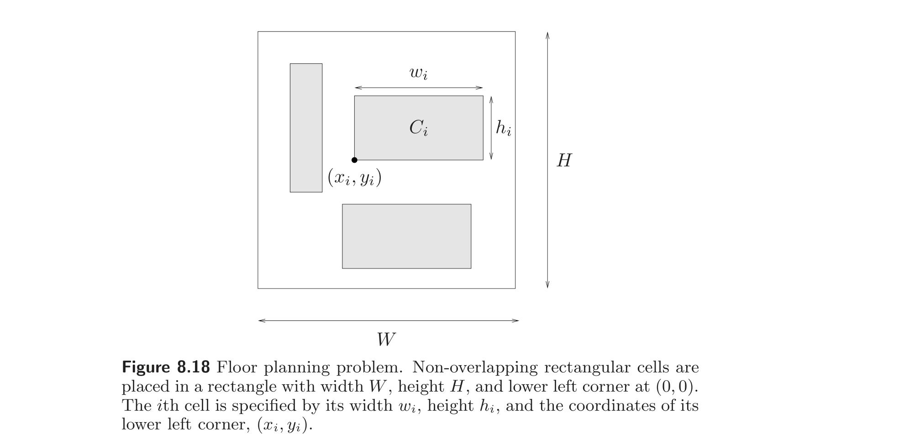
We also require that the cells do not overlap, except possibly on their boundaries: $$ \mathbf{int}(C_i \cap C_j) = \emptyset $$ for $i \ne j$. (It is also possible to require a positive minimum clearance between the cells.) The non-overlap constraint $\mathbf{int}(C_i \cap C_j) = \emptyset$ holds if and only if for $i \ne j$, $C_i$ is left of $C_j$, or $C_i$ is right of $C_j$, or $C_i$ is below $C_j$, or $C_i$ is above $C_j$. These four geometric conditions correspond to the inequalities $$ x_i + w_i \le x_j, \quad \text{or} \quad x_j + w_j \le x_i, \quad \text{or} \quad y_i + h_i \le y_j, \quad \text{or} \quad y_j + h_j \le y_i, \tag{8.32} $$ at least one of which must hold for each $i \ne j$. Note the combinatorial nature of these constraints: for each pair $i \ne j$, at least one of the four inequalities above must hold.
还要求单元不重叠，边界处可能例外： $$ \mathbf{int}(C_i \cap C_j) = \emptyset $$ 对 $i \ne j$。（也可要求单元间有正的最小间距。）不重叠约束 $\mathbf{int}(C_i \cap C_j) = \emptyset$ 成立当且仅当对 $i \ne j$，$C_i$ 在 $C_j$ 之左、或 $C_i$ 在 $C_j$ 之右、或 $C_i$ 在 $C_j$ 之下、或 $C_i$ 在 $C_j$ 之上。这四个几何条件对应不等式 $$ x_i + w_i \le x_j, \quad \text{或} \quad x_j + w_j \le x_i, \quad \text{或} \quad y_i + h_i \le y_j, \quad \text{或} \quad y_j + h_j \le y_i, \tag{8.32} $$ 对每个 $i \ne j$ 至少有一个成立。注意这些约束的组合性质：对每对 $i \ne j$，上述四个不等式至少一个须成立。
8.8.1 Relative positioning constraints
8.8.1 相对定位约束
The idea of relative positioning constraints is to specify, for each pair of cells, one of the four possible relative positioning conditions, i.e., left, right, above, or below. One simple method to specify these constraints is to give two relations on $\{1, \ldots, N\}$: $\mathcal{L}$ (meaning 'left of') and $\mathcal{B}$ (meaning 'below'). We then impose the constraint that $C_i$ is to the left of $C_j$ if $(i, j) \in \mathcal{L}$, and $C_i$ is below $C_j$ if $(i, j) \in \mathcal{B}$. This yields the constraints $$ \begin{array}{rcl} x_i + w_i \le x_j & \text{for } (i, j) \in \mathcal{L}, \\ y_i + h_i \le y_j & \text{for } (i, j) \in \mathcal{B}, \end{array} \tag{8.33} $$ for $i, j = 1, \ldots, N$. To ensure that the relations $\mathcal{L}$ and $\mathcal{B}$ specify the relative positioning of each pair of cells, we require that for each $(i, j)$ with $i \ne j$, one of the following holds: $$ (i, j) \in \mathcal{L}, \quad (j, i) \in \mathcal{L}, \quad (i, j) \in \mathcal{B}, \quad (j, i) \in \mathcal{B}, $$ and that $(i, i) \notin \mathcal{L}$, $(i, i) \notin \mathcal{B}$. The inequalities (8.33) are a set of $N(N-1)/2$ linear inequalities in the variables.
相对定位约束的思想是：对每对单元指定四种可能相对位置条件之一，即左、右、上、下。指定这些约束的一个简单方法是给出 $\{1, \ldots, N\}$ 上的两个关系：$\mathcal{L}$（意为“在左”）与 $\mathcal{B}$（意为“在下”）。然后施加约束：若 $(i, j) \in \mathcal{L}$ 则 $C_i$ 在 $C_j$ 之左，若 $(i, j) \in \mathcal{B}$ 则 $C_i$ 在 $C_j$ 之下。由此得约束 $$ \begin{array}{rcl} x_i + w_i \le x_j & \text{对 } (i, j) \in \mathcal{L}, \\ y_i + h_i \le y_j & \text{对 } (i, j) \in \mathcal{B}, \end{array} \tag{8.33} $$ $i, j = 1, \ldots, N$。为保证关系 $\mathcal{L}$ 与 $\mathcal{B}$ 指定每对单元的相对位置，要求对每个 $i \ne j$ 的 $(i, j)$，以下之一成立： $$ (i, j) \in \mathcal{L}, \quad (j, i) \in \mathcal{L}, \quad (i, j) \in \mathcal{B}, \quad (j, i) \in \mathcal{B}, $$ 且 $(i, i) \notin \mathcal{L}$，$(i, i) \notin \mathcal{B}$。(8.33) 是关于变量的一组 $N(N-1)/2$ 个线性不等式。
These inequalities imply the non-overlap inequalities (8.32), which are a set of $N(N-1)/2$ disjunctions of four linear inequalities. We can assume that the relations $\mathcal{L}$ and $\mathcal{B}$ are anti-symmetric (i.e., $(i, j) \in \mathcal{L} \Rightarrow (j, i) \notin \mathcal{L}$) and transitive (i.e., $(i, j) \in \mathcal{L}, (j, k) \in \mathcal{L} \Rightarrow (i, k) \in \mathcal{L}$). (If this were not the case, the relative positioning constraints would clearly be infeasible.) Transitivity corresponds to the obvious condition that if cell $C_i$ is to the left of cell $C_j$, which is to the left of cell $C_k$, then cell $C_i$ must be to the left of cell $C_k$. In this case the inequality corresponding to $(i, k) \in \mathcal{L}$ is redundant; it is implied by the other two. By exploiting transitivity of the relations $\mathcal{L}$ and $\mathcal{B}$ we can remove redundant constraints, and obtain a compact set of relative positioning inequalities.
这些不等式蕴含不重叠不等式 (8.32)，后者是一组 $N(N-1)/2$ 个四线性不等式的析取。可设关系 $\mathcal{L}$ 与 $\mathcal{B}$ 反对称（即 $(i, j) \in \mathcal{L} \Rightarrow (j, i) \notin \mathcal{L}$）且传递（即 $(i, j) \in \mathcal{L}, (j, k) \in \mathcal{L} \Rightarrow (i, k) \in \mathcal{L}$）。（若不然，相对定位约束显然不可行。）传递性对应显然条件：若 $C_i$ 在 $C_j$ 之左、$C_j$ 在 $C_k$ 之左，则 $C_i$ 必在 $C_k$ 之左。此时对应 $(i, k) \in \mathcal{L}$ 的不等式是冗余的，由另两个蕴含。利用 $\mathcal{L}$ 与 $\mathcal{B}$ 的传递性可去除冗余约束，得到紧凑的相对定位不等式组。
A minimal set of relative positioning constraints is conveniently described using two directed acyclic graphs $H$ and $V$ (for horizontal and vertical). Both graphs have $N$ nodes, corresponding to the $N$ cells in the floor planning problem. The graph $H$ generates the relation $\mathcal{L}$ as follows: we have $(i, j) \in \mathcal{L}$ if and only if there is a (directed) path in $H$ from $i$ to $j$. Similarly, the graph $V$ generates the relation $\mathcal{B}$: $(i, j) \in \mathcal{B}$ if and only if there is a (directed) path in $V$ from $i$ to $j$. To ensure that a relative positioning constraint is given for every pair of cells, we require that for every pair of cells, there is a directed path from one to the other in one of the graphs.
相对定位约束的最小集用两个有向无环图 $H$ 与 $V$（分别对应水平与垂直）描述。两图均有 $N$ 个节点，对应平面规划问题中的 $N$ 个单元。图 $H$ 按如下方式生成关系 $\mathcal{L}$：当且仅当 $H$ 中有从 $i$ 到 $j$ 的（有向）路径时 $(i, j) \in \mathcal{L}$。类似地，图 $V$ 生成关系 $\mathcal{B}$：当且仅当 $V$ 中有从 $i$ 到 $j$ 的（有向）路径时 $(i, j) \in \mathcal{B}$。为保证每对单元都给定相对定位约束，要求对每对单元，在某一图中存在从一个到另一个的有向路径。
Evidently, we only need to impose the inequalities that correspond to the edges of the graphs $H$ and $V$; the others follow from transitivity. We arrive at the set of inequalities $$ \begin{array}{rcl} x_i + w_i \le x_j & \text{for } (i, j) \in H, \\ y_i + h_i \le y_j & \text{for } (i, j) \in V, \end{array} \tag{8.34} $$ which is a set of linear inequalities, one for each edge in $H$ and $V$. The set of inequalities (8.34) is a subset of the set of inequalities (8.33), and equivalent.
显然只需施加对应图 $H$ 与 $V$ 的边的不等式；其余由传递性得到。得不等式组 $$ \begin{array}{rcl} x_i + w_i \le x_j & \text{对 } (i, j) \in H, \\ y_i + h_i \le y_j & \text{对 } (i, j) \in V, \end{array} \tag{8.34} $$ 即一组线性不等式，$H$ 与 $V$ 中每条边一个。(8.34) 是 (8.33) 的子集且等价。
In a similar way, the $4N$ inequalities (8.31) can be reduced to a minimal, equivalent set. The constraint $x_i \ge 0$ only needs to be imposed on the left-most cells, i.e., for $i$ that are minimal in the relation $\mathcal{L}$. These correspond to the sources in the graph $H$, i.e., those nodes that have no edges pointing to them. Similarly, the inequalities $x_i + w_i \le W$ only need to be imposed for the right-most cells. In the same way the vertical bounding box inequalities can be pruned to a minimal set. This yields the minimal equivalent set of bounding box inequalities $$ \begin{array}{rcl} x_i \ge 0 & \text{for } i \; \mathcal{L}\text{-minimal}, & x_i + w_i \le W & \text{for } i \; \mathcal{L}\text{-maximal}, \\ y_i \ge 0 & \text{for } i \; \mathcal{B}\text{-minimal}, & y_i + h_i \le H & \text{for } i \; \mathcal{B}\text{-maximal}. \end{array} \tag{8.35} $$
类似地，$4N$ 个不等式 (8.31) 可化为最小等价集。约束 $x_i \ge 0$ 只需施加在最左单元上，即关系 $\mathcal{L}$ 中极小的 $i$。它们对应图 $H$ 中的源，即没有边指向它们的节点。类似地，不等式 $x_i + w_i \le W$ 只需施加在最右单元上。同样可将垂直包围盒不等式剪枝为最小集。得最小等价包围盒不等式集 $$ \begin{array}{rcl} x_i \ge 0 & \text{对 } \mathcal{L}\text{-极小的 } i, & x_i + w_i \le W & \text{对 } \mathcal{L}\text{-极大的 } i, \\ y_i \ge 0 & \text{对 } \mathcal{B}\text{-极小的 } i, & y_i + h_i \le H & \text{对 } \mathcal{B}\text{-极大的 } i. \end{array} \tag{8.35} $$
A simple example is shown in figure 8.19. In this example, the $\mathcal{L}$ minimal or left-most cells are $C_1, C_2$, and $C_4$, and the only right-most cell is $C_5$. The minimal set of inequalities specifying the horizontal relative positioning is given by $$ \begin{array}{rclcrcl} x_1 \ge 0, & & x_2 \ge 0, & & x_4 \ge 0, & & x_5 + w_5 \le W, \\ x_1 + w_1 \le x_3, & & x_2 + w_2 \le x_3, & & x_3 + w_3 \le x_5, & & x_4 + w_4 \le x_5. \end{array} $$
图 8.19 给出一个简单例子。此例中 $\mathcal{L}$ 极小（最左）单元为 $C_1, C_2, C_4$，唯一最右单元为 $C_5$。指定水平相对定位的最小不等式集为 $$ \begin{array}{rclcrcl} x_1 \ge 0, & & x_2 \ge 0, & & x_4 \ge 0, & & x_5 + w_5 \le W, \\ x_1 + w_1 \le x_3, & & x_2 + w_2 \le x_3, & & x_3 + w_3 \le x_5, & & x_4 + w_4 \le x_5. \end{array} $$
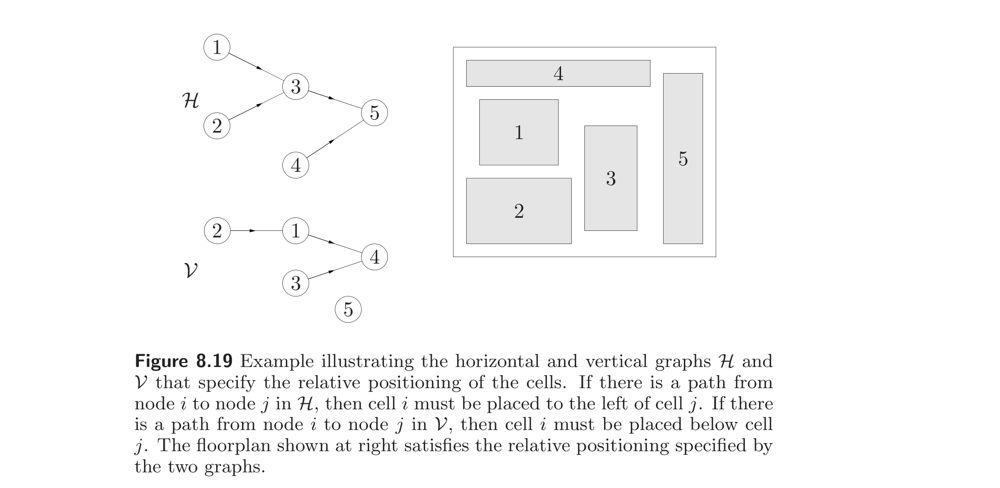
The minimal set of inequalities specifying the vertical relative positioning is given by $$ \begin{array}{rclcrcl} y_2 \ge 0, & & y_3 \ge 0, & & y_5 \ge 0, & & y_4 + h_4 \le H, & & y_5 + h_5 \le H, \\ y_2 + h_2 \le y_1, & & y_1 + h_1 \le y_4, & & y_3 + h_3 \le y_4. & & \end{array} $$
指定垂直相对定位的最小不等式集为 $$ \begin{array}{rclcrcl} y_2 \ge 0, & & y_3 \ge 0, & & y_5 \ge 0, & & y_4 + h_4 \le H, & & y_5 + h_5 \le H, \\ y_2 + h_2 \le y_1, & & y_1 + h_1 \le y_4, & & y_3 + h_3 \le y_4. & & \end{array} $$
8.8.2 Floor planning via convex optimization
8.8.2 通过凸优化进行平面规划
In this formulation, the variables are the bounding box width and height $W$ and $H$, and the cell widths, heights, and positions: $w_i, h_i, x_i$, and $y_i$, for $i = 1, \ldots, N$. We impose the bounding box constraints (8.35) and the relative positioning constraints (8.34), which are linear inequalities. As objective, we take the perimeter of the bounding box, i.e., $2(W + H)$, which is a linear function of the variables.
在此表述中，变量为包围盒宽和高 $W$、$H$，以及单元的宽、高、位置：$i = 1, \ldots, N$ 的 $w_i, h_i, x_i, y_i$。施加包围盒约束 (8.35) 和相对定位约束 (8.34)，它们是线性不等式。目标取包围盒周长 $2(W + H)$，它是变量的线性函数。
We now list some of the constraints that can be expressed as convex inequalities or linear equalities in the variables.
下面列出若干可表为变量上凸不等式或线性等式的约束。
Minimum spacing. We can impose a minimum spacing $\rho > 0$ between cells by changing the relative position constraints from $x_i + w_i \le x_j$ for $(i, j) \in H$, to $x_i + w_i + \rho \le x_j$ for $(i, j) \in H$, and similarly for the vertical graph. We can have a different minimum spacing associated with each edge in $H$ and $V$. Another possibility is to fix $W$ and $H$, and maximize the minimum spacing $\rho$ as objective.
最小间距。 可通过对 $H$ 中每条边 $(i, j)$ 将相对位置约束从 $x_i + w_i \le x_j$ 改为 $x_i + w_i + \rho \le x_j$（垂直图类似）来施加单元间最小间距 $\rho > 0$。$H$ 与 $V$ 中每条边可关联不同的最小间距。另一种可能：固定 $W$ 与 $H$，以最小间距 $\rho$ 为目标极大化之。
Minimum cell area. For each cell we specify a minimum area, i.e., we require that $w_i h_i \ge A_i$, where $A_i > 0$. These minimum cell area constraints can be expressed as convex inequalities in several ways, e.g., $w_i \ge A_i/h_i$, $(w_i h_i)^{1/2} \ge A_i^{1/2}$, or $\log w_i + \log h_i \ge \log A_i$.
最小单元面积。 对每个单元指定最小面积，即要求 $w_i h_i \ge A_i$（$A_i > 0$）。这些最小单元面积约束可用多种方式表为凸不等式，如 $w_i \ge A_i/h_i$、$(w_i h_i)^{1/2} \ge A_i^{1/2}$ 或 $\log w_i + \log h_i \ge \log A_i$。
Aspect ratio constraints. We can impose upper and lower bounds on the aspect ratio of each cell, i.e., $$ l_i \le h_i/w_i \le u_i. $$ Multiplying through by $w_i$ transforms these constraints into linear inequalities. We can also fix the aspect ratio of a cell, which results in a linear equality constraint.
长宽比约束。 可对每个单元的长宽比施加上下界，即 $$ l_i \le h_i/w_i \le u_i. $$ 两边乘 $w_i$ 即化为线性不等式。也可固定某单元的长宽比，得到线性等式约束。
Alignment constraints. We can impose the constraint that two edges, or a center line, of two cells are aligned. For example, the horizontal center line of cell $i$ aligns with the top of cell $j$ when $$ y_i + h_i/2 = y_j + h_j. $$ These are linear equality constraints. In a similar way we can require that a cell is flushed against the bounding box boundary.
对齐约束。 可施加两单元的两边或中线对齐的约束。例如，单元 $i$ 的水平中线与单元 $j$ 的顶边对齐当 $$ y_i + h_i/2 = y_j + h_j. $$ 这些是线性等式约束。类似地可要求单元紧贴包围盒边界。
Symmetry constraints. We can require pairs of cells to be symmetric about a vertical or horizontal axis, that can be fixed or floating (i.e., whose position is fixed or not). For example, to specify that the pair of cells $i$ and $j$ are symmetric about the vertical axis $x = x_{\mathrm{axis}}$, we impose the linear equality constraint $$ x_{\mathrm{axis}} - (x_i + w_i/2) = x_j + w_j/2 - x_{\mathrm{axis}}. $$ We can require that several pairs of cells be symmetric about an unspecified vertical axis by imposing these equality constraints, and introducing $x_{\mathrm{axis}}$ as a new variable.
对称约束。 可要求成对单元关于垂直或水平轴对称，该轴可固定或浮动（即其位置固定与否）。例如，为指定单元对 $i$ 与 $j$ 关于垂直轴 $x = x_{\mathrm{axis}}$ 对称，施加线性等式约束 $$ x_{\mathrm{axis}} - (x_i + w_i/2) = x_j + w_j/2 - x_{\mathrm{axis}}. $$ 通过施加这些等式约束并引入 $x_{\mathrm{axis}}$ 为新变量，可要求若干对单元关于某未指定的垂直轴对称。
Similarity constraints. We can require that cell $i$ be an $a$-scaled translate of cell $j$ by the equality constraints $w_i = a w_j$, $h_i = a h_j$. Here the scaling factor $a$ must be fixed. By imposing only one of these constraints, we require that the width (or height) of one cell be a given factor times the width (or height) of the other cell.
相似约束。 可通过等式约束 $w_i = a w_j$、$h_i = a h_j$ 要求单元 $i$ 是单元 $j$ 的 $a$ 倍缩放平移。此处缩放因子 $a$ 须固定。仅施加其中一个约束，即要求一单元的宽（或高）为另一单元宽（或高）的给定因子倍。
Containment constraints. We can require that a particular cell contains a given point, which imposes two linear inequalities. We can require that a particular cell lie inside a given polyhedron, again by imposing linear inequalities.
包含约束。 可要求某特定单元包含给定点，这施加两个线性不等式。可要求某特定单元位于给定多面体内，同样通过施加线性不等式实现。
Distance constraints. We can impose a variety of constraints that limit the distance between pairs of cells. In the simplest case, we can limit the distance between the center points of cell $i$ and $j$ (or any other fixed points on the cells, such as lower left corners). For example, to limit the distance between the centers of cells $i$ and $j$, we use the (convex) inequality $$ \|(x_i + w_i/2, y_i + h_i/2) - (x_j + w_j/2, y_j + h_j/2)\| \le D_{ij}. $$ As in placement problems, we can limit sums of distances, or use sums of distances as the objective.
距离约束。 可施加多种限制单元对间距离的约束。最简单情形：限制单元 $i$ 与 $j$ 中心点（或单元上任一固定点，如左下角）之间的距离。例如，限制单元 $i$ 与 $j$ 中心间距离，用（凸）不等式 $$ \|(x_i + w_i/2, y_i + h_i/2) - (x_j + w_j/2, y_j + h_j/2)\| \le D_{ij}. $$ 如布局问题中，可限制距离之和，或以距离之和为目标。
We can also limit the distance $\mathbf{dist}(C_i, C_j)$ between cell $i$ and cell $j$, i.e., the minimum distance between a point in cell $i$ and a point in cell $j$. In the general case this can be done as follows. To limit the distance between cells $i$ and $j$ in the norm $\|\cdot\|$, we can introduce four new variables $u_i, v_i, u_j, v_j$. The pair $(u_i, v_i)$ will represent a point in $C_i$, and the pair $(u_j, v_j)$ will represent a point in $C_j$. To ensure this we impose the linear inequalities $$ x_i \le u_i \le x_i + w_i, \qquad y_i \le v_i \le y_i + h_i, $$ and similarly for cell $j$. Finally, to limit $\mathbf{dist}(C_i, C_j)$, we add the convex inequality $$ \|(u_i, v_i) - (u_j, v_j)\| \le D_{ij}. $$
也可限制单元 $i$ 与单元 $j$ 之间的距离 $\mathbf{dist}(C_i, C_j)$，即 $C_i$ 中一点与 $C_j$ 中一点之间的最小距离。一般情形可如下进行。为在范数 $\|\cdot\|$ 下限制单元 $i$ 与 $j$ 间距离，引入四个新变量 $u_i, v_i, u_j, v_j$。对 $(u_i, v_i)$ 表示 $C_i$ 中一点，$(u_j, v_j)$ 表示 $C_j$ 中一点。为此施加线性不等式 $$ x_i \le u_i \le x_i + w_i, \qquad y_i \le v_i \le y_i + h_i, $$ 单元 $j$ 类似。最后为限制 $\mathbf{dist}(C_i, C_j)$，加凸不等式 $$ \|(u_i, v_i) - (u_j, v_j)\| \le D_{ij}. $$
In many specific cases we can express these distance constraints more efficiently, by exploiting the relative positioning constraints or deriving a more explicit formulation. As an example consider the $\ell_\infty$-norm, and suppose cell $i$ lies to the left of cell $j$ (by a relative positioning constraint). The horizontal displacement between the two cells is $x_j - (x_i + w_i)$. Then we have $\mathbf{dist}(C_i, C_j) \le D_{ij}$ if and only if $$ \begin{array}{rcl} x_j - (x_i + w_i) \le D_{ij}, & & y_j - (y_i + h_i) \le D_{ij}, \\ & & y_i - (y_j + h_j) \le D_{ij}. \end{array} $$ The first inequality states that the horizontal displacement between the right edge of cell $i$ and the left edge of cell $j$ does not exceed $D_{ij}$. The second inequality requires that the bottom of cell $j$ is no more than $D_{ij}$ above the top of cell $i$, and the third inequality requires that the bottom of cell $i$ is no more than $D_{ij}$ above the top of cell $j$. These three inequalities together are equivalent to $\mathbf{dist}(C_i, C_j) \le D_{ij}$. In this case, we do not need to introduce any new variables.
在许多具体情形下，可利用相对定位约束或推导更显式表述更高效地表达这些距离约束。例如取 $\ell_\infty$ 范数，设单元 $i$ 在单元 $j$ 之左（由相对定位约束）。两单元间水平位移为 $x_j - (x_i + w_i)$。则 $\mathbf{dist}(C_i, C_j) \le D_{ij}$ 当且仅当 $$ \begin{array}{rcl} x_j - (x_i + w_i) \le D_{ij}, & & y_j - (y_i + h_i) \le D_{ij}, \\ & & y_i - (y_j + h_j) \le D_{ij}. \end{array} $$ 第一不等式说明单元 $i$ 右边与单元 $j$ 左边的水平位移不超过 $D_{ij}$。第二不等式要求单元 $j$ 底部不高于单元 $i$ 顶部 $D_{ij}$ 以上，第三不等式要求单元 $i$ 底部不高于单元 $j$ 顶部 $D_{ij}$ 以上。这三不等式合起来等价于 $\mathbf{dist}(C_i, C_j) \le D_{ij}$。此时无需引入新变量。
We can limit the $\ell_1$- (or $\ell_2$-) distance between two cells in a similar way. Here we introduce one new variable $d_v$, which will serve as a bound on the vertical displacement between the cells. To limit the $\ell_1$-distance, we add the constraints $$ \begin{array}{rcl} y_j - (y_i + h_i) \le d_v, & & y_i - (y_j + h_j) \le d_v, \quad d_v \ge 0 \end{array} $$ and the constraints $$ x_j - (x_i + w_i) + d_v \le D_{ij}. $$ (The first term is the horizontal displacement and the second is an upper bound on the vertical displacement.) To limit the Euclidean distance between the cells, we replace this last constraint with $$ (x_j - (x_i + w_i))^2 + d_v^2 \le D_{ij}^2. $$
类似地可限制两单元间的 $\ell_1$（或 $\ell_2$）距离。此时引入一个新变量 $d_v$，用作单元间垂直位移的上界。限制 $\ell_1$ 距离，加约束 $$ \begin{array}{rcl} y_j - (y_i + h_i) \le d_v, & & y_i - (y_j + h_j) \le d_v, \quad d_v \ge 0 \end{array} $$ 及约束 $$ x_j - (x_i + w_i) + d_v \le D_{ij}. $$ （第一项为水平位移，第二项为垂直位移上界。）限制单元间 Euclid 距离时，将最后约束换为 $$ (x_j - (x_i + w_i))^2 + d_v^2 \le D_{ij}^2. $$
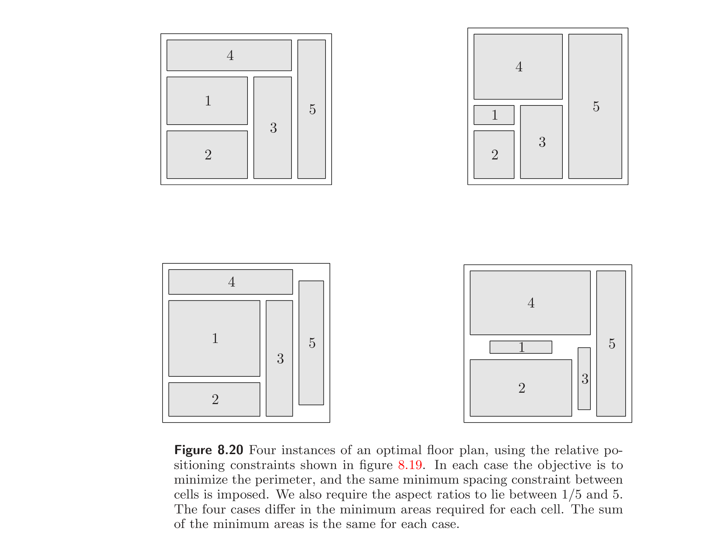
Example 8.7 Figure 8.20 shows an example with 5 cells, using the ordering constraints of figure 8.19, and four different sets of constraints. In each case we impose the same minimum required spacing constraint, and the same aspect ratio constraint $1/5 \le w_i/h_i \le 5$. The four cases differ in the minimum required cell areas $A_i$. The values of $A_i$ are chosen so that the total minimum required area $\sum_{i=1}^{5} A_i$ is the same for each case.
例 8.7 图 8.20 给出一个含 5 个单元的例子，采用图 8.19 的顺序约束及四组不同约束。每种情形施加相同的最小所需间距约束和相同的长宽比约束 $1/5 \le w_i/h_i \le 5$。四种情形在最小所需单元面积 $A_i$ 上不同。$A_i$ 的取值使各情形总最小所需面积 $\sum_{i=1}^{5} A_i$ 相同。
8.8.3 Floor planning via geometric programming
8.8.3 通过几何规划进行平面规划
The floor planning problem can also be formulated as a geometric program in the variables $x_i, y_i, w_i, h_i, W, H$. The objectives and constraints that can be handled in this formulation are a bit different from those that can be expressed in the convex formulation.
平面规划问题也可在变量 $x_i, y_i, w_i, h_i, W, H$ 上表述为几何规划。此表述能处理的目标和约束与凸表述略有不同。
First we note that the bounding box constraints (8.35) and the relative positioning constraints (8.34) are posynomial inequalities, since the lefthand sides are sums of variables, and the righthand sides are single variables, hence monomials. Dividing these inequalities by the righthand side yields standard posynomial inequalities.
首先注意包围盒约束 (8.35) 与相对定位约束 (8.34) 是正项式不等式，因为左边是变量之和，右边是单个变量，即单项式。两边除以右边即得标准正项式不等式。
In the geometric programming formulation we can minimize the bounding box area, since $WH$ is a monomial, hence posynomial. We can also exactly specify the area of each cell, since $w_i h_i = A_i$ is a monomial equality constraint. On the other hand alignment, symmetry, and distance constraints cannot be handled in the geometric programming formulation. Similarity, however, can be; indeed it is possible to require that one cell be similar to another, without specifying the scaling ratio (which can be treated as just another variable).
在几何规划表述中可极小化包围盒面积，因 $WH$ 是单项式从而正项式。也可精确指定每单元面积，因 $w_i h_i = A_i$ 是单项式等式约束。但另一方面，对齐、对称和距离约束在几何规划表述中无法处理。然而相似约束可以；实际上可要求一单元与另一单元相似而无需指定缩放比（缩放比可作为另一变量处理）。
Bibliography
参考文献
The characterization of Euclidean distance matrices in §8.3.3 appears in Schoenberg [Sch35]; see also Gower [Gow85].
§8.3.3 中 Euclid 距离矩阵的刻画见 Schoenberg [Sch35]；另见 Gower [Gow85]。
Our use of the term Löwner-John ellipsoid follows Grötschel, Lovász, and Schrijver [GLS88, page 69]. The efficiency results for ellipsoidal approximations in §8.4 were proved by John [Joh85]. Boyd, El Ghaoui, Feron, and Balakrishnan [BEFB94, §3.7] give convex formulations of several ellipsoidal approximation problems involving sets defined as unions, intersections or sums of ellipsoids.
我们对 Löwner-John 椭球一词的使用沿 Grötschel、Lovász 与 Schrijver [GLS88, page 69]。§8.4 中椭球逼近的效率结果由 John [Joh85] 证明。Boyd、El Ghaoui、Feron 与 Balakrishnan [BEFB94, §3.7] 给出了涉及椭球的并、交或和所定义集合的若干椭球逼近问题的凸表述。
The different centers defined in §8.5 have applications in design centering (see, for example, Seifi, Ponnambalan, and Vlach [SPV99]), and cutting-plane methods (Elzinga and Moore [EM75], Tarasov, Khachiyan, and Érlikh [TKE88], and Ye [Ye97, chapter 8]). The inner ellipsoid defined by the Hessian of the logarithmic barrier function (page 420) is sometimes called the Dikin ellipsoid, and is the basis of Dikin's algorithm for linear and quadratic programming [Dik67]. The expression for the outer ellipsoid at the analytic center was given by Sonnevend [Son86]. For extensions to nonpolyhedral convex sets, see Boyd and El Ghaoui [BE93], Jarre [Jar94], and Nesterov and Nemirovski [NN94, page 34].
§8.5 中定义的各种中心在设计定心中有应用（例如见 Seifi、Ponnambalan 与 Vlach [SPV99]），在割平面法中也有应用（Elzinga 与 Moore [EM75]、Tarasov、Khachiyan 与 Érlikh [TKE88]、Ye [Ye97, chapter 8]）。由对数障碍函数的 Hessian（第 420 页）定义的内椭球有时称为 Dikin 椭球，是 Dikin 线性与二次规划算法的基础 [Dik67]。解析中心处外椭球的表达式由 Sonnevend [Son86] 给出。向非多面体凸集的推广见 Boyd 与 El Ghaoui [BE93]、Jarre [Jar94]、Nesterov 与 Nemirovski [NN94, page 34]。
Convex optimization has been applied to linear and nonlinear discrimination problems since the 1960s; see Mangasarian [Man65] and Rosen [Ros65]. Standard texts that discuss pattern classification include Duda, Hart, and Stork [DHS99] and Hastie, Tibshirani, and Friedman [HTF01]. For a detailed discussion of support vector classifiers, see Vapnik [Vap00] or Schölkopf and Smola [SS01].
凸优化自 1960 年代起即被应用于线性和非线性判别问题；见 Mangasarian [Man65] 与 Rosen [Ros65]。讨论模式分类的标准教材包括 Duda、Hart 与 Stork [DHS99] 以及 Hastie、Tibshirani 与 Friedman [HTF01]。关于支持向量分类器的详细讨论见 Vapnik [Vap00] 或 Schölkopf 与 Smola [SS01]。
The Weber point defined in example 8.4 is named after Weber [Web71]. Linear and quadratic placement is used in circuit design (Kleinhaus, Sigl, Johannes, and Antreich [KSJA91, SDJ91]). Sherwani [She99] is a recent overview of algorithms for placement, layout, floor planning, and other geometric optimization problems in VLSI circuit design.
例 8.4 中定义的 Weber 点以 Weber [Web71] 命名。线性和二次布局用于电路设计（Kleinhaus、Sigl、Johannes 与 Antreich [KSJA91, SDJ91]）。Sherwani [She99] 是 VLSI 电路设计中布局、版图、平面规划及其他几何优化问题算法的近期综述。